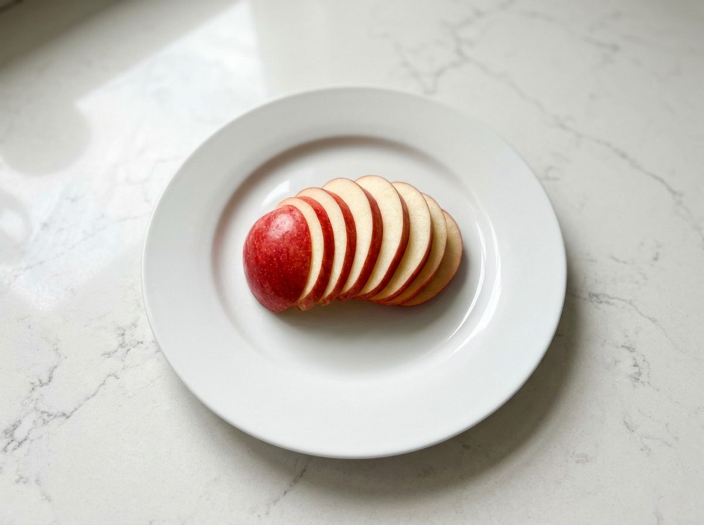
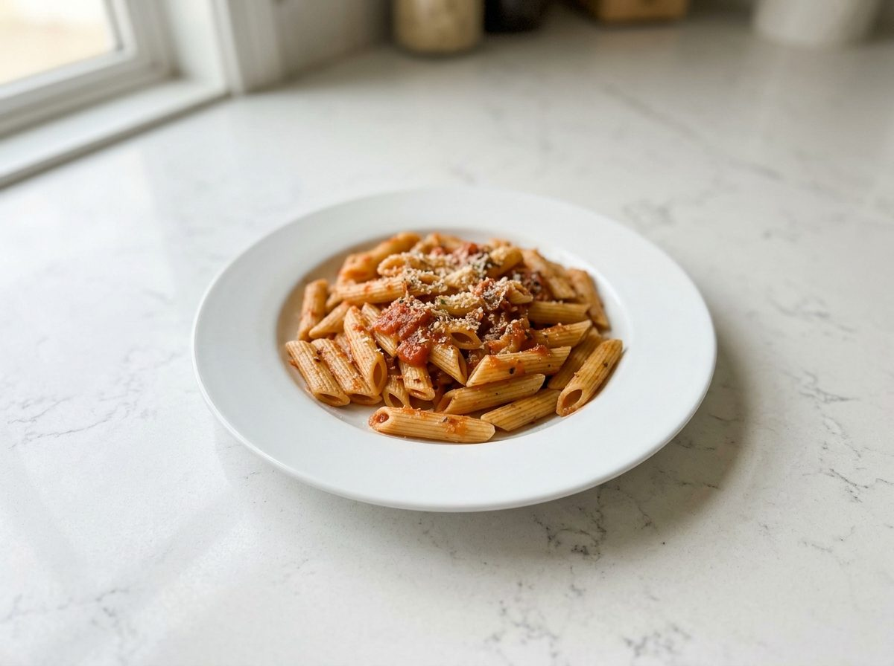
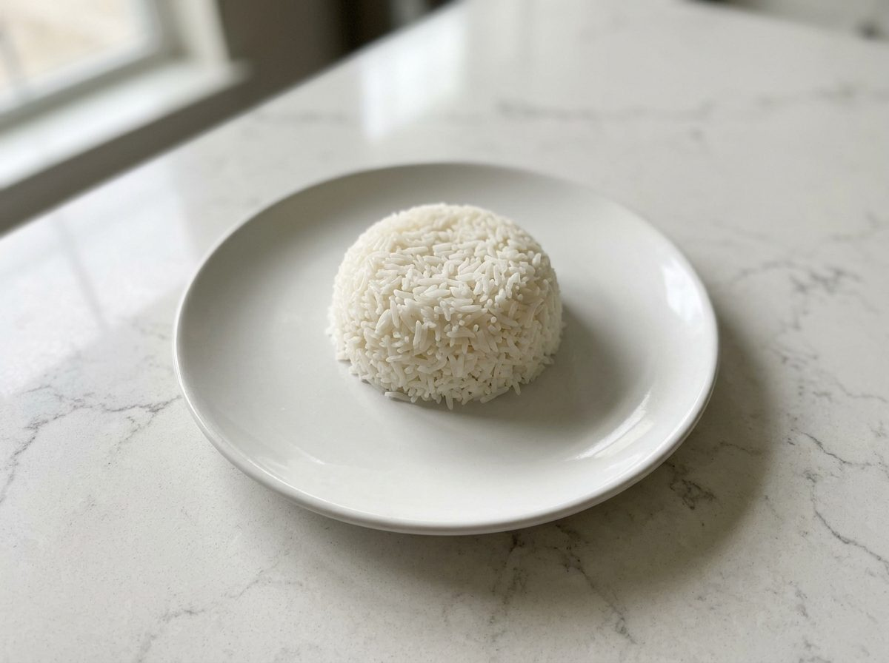
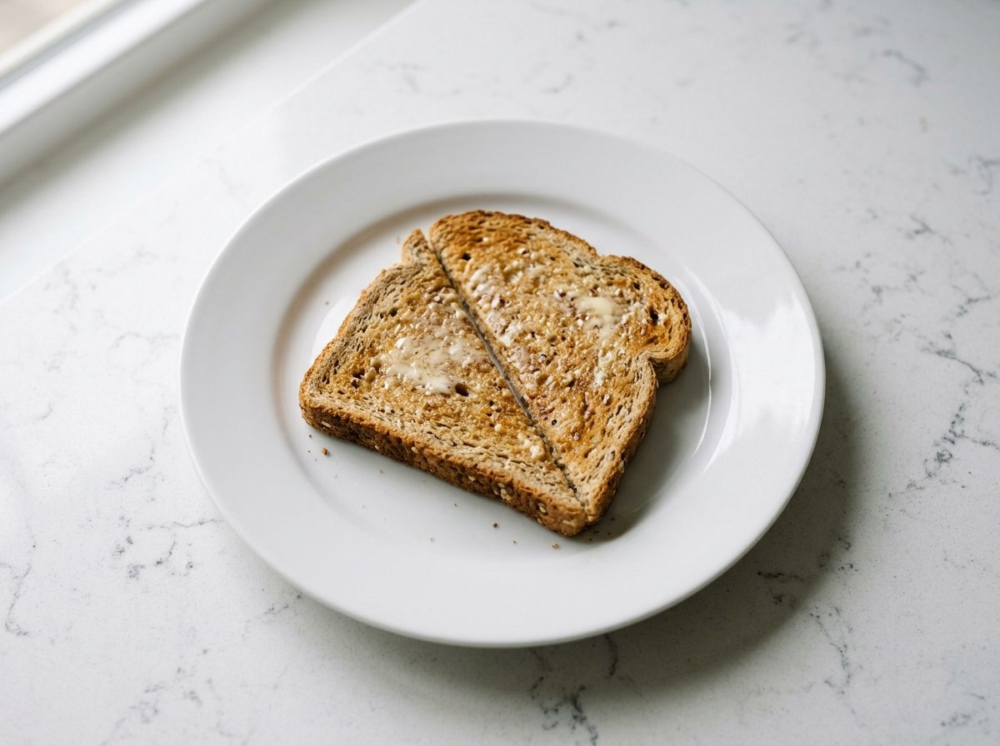

<title>Kitchen Carbs Review</title>
<meta name="claude:viewport-fit-sides" content="cover">
<link rel="preconnect" href="https://fonts.googleapis.com">
<link rel="preconnect" href="https://fonts.gstatic.com" crossorigin>
<link rel="stylesheet" href="https://fonts.googleapis.com/css2?family=IBM+Plex+Mono:wght@400;500&family=IBM+Plex+Sans:wght@400;500;600&display=swap">
<style>
/* Layout: one review page, three hash tabs. Chrome uses the app's own tokens; light only, by choice, because the app is light only. */
:root {
  --surface: #F2F3F1;      /* quartz, page */
  --paper: #FAFAF9;        /* raised areas: device screens */
  --sunk: #E7E9E7;         /* selected rows, inputs */
  --line: #D3D6D5;         /* hairlines */
  --vein: #7E8488;         /* secondary text */
  --ink: #2B2E30;          /* graphite text */
  --accent: #1F3A5F;       /* ink blue: carbs + selection only */
  --warn: #8A5A00;         /* not verified / estimated */
  --sans: "IBM Plex Sans", "Helvetica Neue", Arial, sans-serif;
  --mono: "IBM Plex Mono", ui-monospace, Menlo, monospace;
  color-scheme: light;
}
html, body { background: var(--surface); color: var(--ink); }
body { font: 400 16px/1.5 var(--sans); padding-left: max(16px, env(safe-area-inset-left, 0px)); padding-right: max(16px, env(safe-area-inset-right, 0px)); padding-block: 0 64px; }
body::before { content: ""; position: fixed; inset: 0 0 auto; height: env(safe-area-inset-top, 0px); z-index: 10; background: var(--surface); }
* { box-sizing: border-box; }
.wrap { max-width: 1280px; margin: 0 auto; }
h1, h2, h3, h4 { text-wrap: balance; font-weight: 500; margin: 0; }
p { margin: 0; }
a { color: var(--accent); }
button { font: inherit; color: inherit; }
:focus-visible { outline: 2px solid var(--accent); outline-offset: 2px; }
.mono { font-family: var(--mono); font-size: 13px; }
.meta { color: var(--vein); font-size: 14px; }
.label { font-size: 12px; letter-spacing: .08em; text-transform: uppercase; color: var(--vein); font-weight: 500; }

/* header */
header.top { position: sticky; top: env(safe-area-inset-top, 0px); z-index: 5; background: var(--surface); border-bottom: 1px solid var(--line); }
.top .wrap { display: flex; flex-wrap: wrap; align-items: flex-end; gap: 8px 32px; padding-block: 20px 0; }
.brand { display: grid; gap: 2px; padding-bottom: 14px; }
.brand h1 { font-size: 22px; }
nav.tabs { display: flex; gap: 4px; margin-left: auto; }
nav.tabs a { text-decoration: none; color: var(--vein); padding: 10px 14px 12px; border-bottom: 2px solid transparent; font-weight: 500; }
nav.tabs a[aria-current="page"] { color: var(--ink); border-bottom-color: var(--accent); }
.howto { padding-block: 16px; display: flex; flex-wrap: wrap; gap: 8px 24px; align-items: baseline; }

/* comment buttons */
.c-btn { display: inline-flex; align-items: center; gap: 6px; border: 1px solid var(--line); background: transparent; border-radius: 4px; padding: 5px 10px; font-size: 13px; color: var(--vein); cursor: pointer; }
.c-btn:hover { color: var(--ink); border-color: var(--vein); }
.c-btn svg { width: 14px; height: 14px; }
body:not(.can-comment) .c-btn { display: none; }

section.view { display: grid; gap: 28px; padding-top: 8px; }
.intro { max-width: 68ch; display: grid; gap: 6px; }
.intro h2 { font-size: 26px; }

/* ---------- concept map ---------- */
.checkline { display: flex; flex-wrap: wrap; gap: 6px 20px; font-size: 14px; }
.checkline .ok { color: var(--accent); font-weight: 500; }
.checkline .bad { color: var(--warn); font-weight: 500; }
.mapgrid { display: grid; grid-template-columns: minmax(0, 1fr); gap: 24px; align-items: start; }
@media (min-width: 1100px) { .mapgrid { grid-template-columns: minmax(0, 1fr) 360px; } }
.mapscroll { overflow-x: auto; border-top: 1px solid var(--line); border-bottom: 1px solid var(--line); }
.map { position: relative; display: grid; grid-template-columns: repeat(6, minmax(158px, 1fr)); gap: 0 28px; min-width: 1060px; padding-block: 16px 24px; }
.map svg.edges { position: absolute; inset: 0; width: 100%; height: 100%; pointer-events: none; overflow: visible; }
.col { display: grid; gap: 6px; align-content: start; position: relative; z-index: 1; }
.col h3 { font-size: 12px; letter-spacing: .08em; text-transform: uppercase; color: var(--vein); padding: 0 8px 6px; }
.node { text-align: left; border: 1px solid transparent; background: var(--surface); border-radius: 4px; padding: 7px 8px; cursor: pointer; display: grid; gap: 1px; transition: opacity .15s; }
.node b { font-weight: 500; font-size: 14px; line-height: 1.3; }
.node span { font-size: 12px; color: var(--vein); }
.node:hover { border-color: var(--line); }
.map.has-sel .node { opacity: .32; }
.map.has-sel .node.rel { opacity: 1; border-color: var(--line); background: var(--paper); }
.map.has-sel .node.sel { opacity: 1; border-color: var(--accent); background: var(--paper); }
.node.sel b { color: var(--accent); }
.edges path { fill: none; stroke: var(--vein); stroke-width: 1; }
.edges text { font: 500 10px var(--mono); fill: var(--vein); paint-order: stroke; stroke: var(--surface); stroke-width: 4px; }

.detail { display: grid; gap: 14px; align-content: start; }
@media (min-width: 1100px) { .detail { position: sticky; top: 120px; max-height: calc(100vh - 140px); overflow: auto; padding-right: 4px; } }
.detail h3 { font-size: 22px; }
.detail .desc { font-size: 16px; }
.md { display: grid; gap: 8px; font-size: 15px; }
.md h4 { font-size: 15px; font-weight: 600; }
.md ul, .md ol { margin: 0; padding-left: 20px; display: grid; gap: 3px; }
.md table { border-collapse: collapse; font-size: 13px; width: 100%; }
.md td, .md th { border-bottom: 1px solid var(--line); padding: 4px 6px 4px 0; text-align: left; vertical-align: top; }
.md code { font: 13px var(--mono); background: var(--sunk); padding: 0 3px; border-radius: 3px; }
.md .clink, .linklist button { color: var(--accent); background: none; border: 0; padding: 0; cursor: pointer; text-align: left; text-decoration: underline; text-underline-offset: 2px; text-decoration-color: var(--line); }
.linklist { display: grid; gap: 4px; font-size: 14px; }
.linklist .k { font: 12px var(--mono); color: var(--vein); display: inline-block; min-width: 108px; }
.steps-mini { display: grid; gap: 2px; font-size: 14px; }

/* ---------- look ---------- */
.lookgrid { display: grid; gap: 40px; }
.block { display: grid; gap: 14px; }
.blockhead { display: flex; flex-wrap: wrap; gap: 8px 16px; align-items: baseline; justify-content: space-between; border-bottom: 1px solid var(--line); padding-bottom: 8px; }
.blockhead h3 { font-size: 18px; }
.swatches { display: grid; grid-template-columns: repeat(auto-fill, minmax(150px, 1fr)); gap: 12px; }
.sw { display: grid; gap: 6px; }
.sw i { display: block; height: 64px; border-radius: 4px; border: 1px solid var(--line); }
.sw b { font-weight: 500; font-size: 14px; }
.sw span { font-size: 13px; color: var(--vein); }
.counter { display: grid; grid-template-columns: repeat(auto-fit, minmax(240px, 1fr)); gap: 16px; align-items: center; }
.counter img { width: 100%; border-radius: 4px; display: block; }
.typespec { display: grid; gap: 14px; }
.typespec > div { display: grid; grid-template-columns: 150px minmax(0, 1fr); gap: 16px; align-items: baseline; border-bottom: 1px solid var(--line); padding-bottom: 12px; }
@media (max-width: 560px) { .typespec > div { grid-template-columns: 1fr; gap: 4px; } }
.avoid { columns: 2 260px; column-gap: 32px; margin: 0; padding-left: 18px; }
.avoid li { margin-bottom: 4px; }

/* device mockups: drawn at 1024x768 and scaled to fit */
.screens { display: grid; gap: 36px; }
.screen-item { display: grid; gap: 10px; }
.device { width: 100%; max-width: 100%; aspect-ratio: 4 / 3; border: 10px solid #1d1f21; border-radius: 18px; overflow: hidden; position: relative; background: var(--surface); }
.scr { width: 1024px; height: 768px; transform-origin: 0 0; transform: scale(var(--s, 1)); position: absolute; top: 0; left: 0; background: var(--surface); color: var(--ink); font-size: 18px; line-height: 1.45; display: flex; flex-direction: column; }
.scr .bar { height: 64px; flex: none; display: flex; align-items: center; gap: 28px; padding: 0 32px; border-bottom: 1px solid var(--line); }
.scr .bar .nm { font-weight: 600; font-size: 20px; margin-right: auto; }
.scr .bar .tab { color: var(--vein); font-weight: 500; padding: 19px 0 17px; border-bottom: 2px solid transparent; }
.scr .bar .tab.on { color: var(--ink); border-bottom-color: var(--accent); }
.scr .body { flex: 1; min-height: 0; display: flex; }
.scr .list { width: 360px; flex: none; border-right: 1px solid var(--line); display: flex; flex-direction: column; }
.scr .search { margin: 16px 20px 8px; height: 52px; border-radius: 4px; background: var(--sunk); display: flex; align-items: center; padding: 0 16px; color: var(--vein); gap: 10px; }
.scr .cats { display: flex; gap: 20px; padding: 6px 20px 10px; font-size: 16px; color: var(--vein); border-bottom: 1px solid var(--line); }
.scr .cats .on { color: var(--ink); font-weight: 500; }
.scr .row { display: flex; gap: 14px; align-items: center; padding: 10px 20px; border-bottom: 1px solid var(--line); min-height: 76px; }
.scr .row.on { background: var(--sunk); }
.scr .row img { width: 64px; height: 56px; object-fit: cover; border-radius: 4px; }
.scr .row .t { display: grid; }
.scr .row .t b { font-weight: 500; }
.scr .row .t span { font-size: 15px; color: var(--vein); }
.scr .row .t em { font-style: normal; font-size: 14px; color: var(--warn); }
.scr .food { flex: 1; display: flex; flex-direction: column; padding: 20px 32px 0; gap: 14px; min-width: 0; }
.scr .food .ph { height: 330px; border-radius: 4px; overflow: hidden; }
.scr .food .ph img { width: 100%; height: 100%; object-fit: cover; display: block; }
.scr .ptabs { display: flex; gap: 0; border-bottom: 1px solid var(--line); }
.scr .ptabs div { padding: 12px 22px 12px 0; margin-right: 22px; color: var(--vein); font-weight: 500; border-bottom: 2px solid transparent; min-height: 56px; display: flex; align-items: center; gap: 8px; }
.scr .ptabs div.on { color: var(--accent); border-bottom-color: var(--accent); }
.scr .ptabs small { font-size: 13px; color: var(--warn); font-weight: 400; }
.scr .fig { display: flex; align-items: flex-end; gap: 28px; }
.scr .fig .n { font-size: 72px; line-height: 1; font-weight: 500; color: var(--accent); font-variant-numeric: tabular-nums; }
.scr .fig .u { font-size: 20px; color: var(--accent); padding-bottom: 8px; margin-left: -20px; }
.scr .fig .g { display: grid; padding-bottom: 6px; font-size: 16px; color: var(--vein); }
.scr .fig .add { margin-left: auto; height: 56px; padding: 0 24px; border: 1px solid var(--ink); border-radius: 4px; display: flex; align-items: center; font-weight: 500; }
.scr .src { font-size: 15px; color: var(--vein); }
.scr .platebar { height: 72px; flex: none; border-top: 1px solid var(--line); display: flex; align-items: center; padding: 0 32px; gap: 20px; background: var(--paper); }
.scr .platebar .n { font-size: 30px; color: var(--accent); font-weight: 500; font-variant-numeric: tabular-nums; }
.scr .platebar .open { margin-left: auto; height: 52px; padding: 0 22px; border-radius: 4px; background: var(--ink); color: var(--paper); display: flex; align-items: center; font-weight: 500; }
.scr .pad { padding: 24px 40px; flex: 1; display: flex; flex-direction: column; gap: 0; min-width: 0; }
.scr .pitem { display: flex; align-items: center; gap: 20px; padding: 14px 0; border-bottom: 1px solid var(--line); }
.scr .pitem img { width: 88px; height: 66px; object-fit: cover; border-radius: 4px; }
.scr .pitem .t { flex: 1; display: grid; }
.scr .pitem .t span { color: var(--vein); font-size: 15px; }
.scr .qty { display: flex; border: 1px solid var(--line); border-radius: 4px; }
.scr .qty div { width: 64px; height: 56px; display: flex; align-items: center; justify-content: center; color: var(--vein); font-variant-numeric: tabular-nums; }
.scr .qty div + div { border-left: 1px solid var(--line); }
.scr .qty .on { color: var(--accent); background: var(--sunk); font-weight: 500; }
.scr .pitem .c { width: 80px; text-align: right; font-size: 26px; color: var(--accent); font-weight: 500; font-variant-numeric: tabular-nums; }
.scr .total { display: flex; align-items: flex-end; gap: 16px; padding-top: 22px; }
.scr .total .n { font-size: 72px; line-height: 1; color: var(--accent); font-weight: 500; font-variant-numeric: tabular-nums; }
.scr .total .save { margin-left: auto; height: 60px; padding: 0 30px; border-radius: 4px; background: var(--ink); color: var(--paper); display: flex; align-items: center; font-weight: 500; }
.scr .day { display: flex; justify-content: space-between; align-items: baseline; padding-bottom: 10px; border-bottom: 1px solid var(--ink); }
.scr .day b { font-size: 22px; font-weight: 500; }
.scr .meal { display: grid; grid-template-columns: 80px 1fr 80px; gap: 16px; padding: 14px 0; border-bottom: 1px solid var(--line); align-items: start; }
.scr .meal .tm { color: var(--vein); font-variant-numeric: tabular-nums; }
.scr .meal .c { text-align: right; color: var(--accent); font-size: 24px; font-weight: 500; font-variant-numeric: tabular-nums; }
.scr .meal .it { display: grid; gap: 2px; }
.scr .meal .it span { font-size: 15px; color: var(--vein); }
.scr .eaten { display: flex; border: 1px solid var(--line); border-radius: 4px; margin-top: 10px; width: max-content; }
.scr .eaten div { padding: 0 16px; height: 48px; display: flex; align-items: center; font-size: 16px; color: var(--vein); }
.scr .eaten div + div { border-left: 1px solid var(--line); }
.scr .eaten .on { background: var(--sunk); color: var(--ink); font-weight: 500; }
.scr .cmt { font-size: 15px; display: grid; gap: 4px; margin-top: 10px; }
.scr .cmt div span { color: var(--vein); margin-right: 8px; font-variant-numeric: tabular-nums; }
.scr .cmt .in { height: 48px; border-radius: 4px; background: var(--sunk); color: var(--vein); display: flex; align-items: center; padding: 0 14px; margin-top: 4px; }
.scr .note { font-size: 14px; color: var(--vein); margin-top: 6px; }
.scr .past { color: var(--vein); font-size: 15px; }
.scr .cmp { display: flex; gap: 24px; }
.scr .cmp figure { margin: 0; flex: 1; display: grid; gap: 8px; }
.scr .cmp img { width: 100%; height: 330px; object-fit: cover; border-radius: 4px; display: block; }
.scr .cmp figcaption { font-size: 15px; color: var(--vein); }
.scr .acts { display: flex; gap: 12px; padding-top: 20px; }
.scr .acts div { height: 56px; padding: 0 22px; border: 1px solid var(--ink); border-radius: 4px; display: flex; align-items: center; font-weight: 500; }
.scr .acts .primary { background: var(--ink); color: var(--paper); }

.scr .loglist { width: 430px; padding: 20px 24px 0; }
.scr .loglist .day { padding-bottom: 8px; }
.scr .strip { display: grid; gap: 6px; padding: 12px 0 14px; border-bottom: 1px solid var(--line); }
.scr .tir { display: flex; height: 12px; border-radius: 2px; overflow: hidden; }
.scr .tir i { display: block; height: 100%; }
.scr .tir .lo { background: var(--warn); }
.scr .tir .in { background: var(--ink); }
.scr .tir .hi { background: var(--line); }
.scr .tirl { display: flex; gap: 18px; font-size: 15px; color: var(--vein); }
.scr .tirl b { color: var(--ink); font-weight: 500; font-variant-numeric: tabular-nums; }
.scr .tirl .w b, .scr .tirl .w { color: var(--warn); }
.scr .lrow { display: grid; grid-template-columns: 60px 1fr 44px; gap: 12px; padding: 12px 10px; margin: 0 -10px; border-bottom: 1px solid var(--line); align-items: start; }
.scr .lrow.on { background: var(--sunk); }
.scr .lrow .tm { color: var(--vein); font-variant-numeric: tabular-nums; }
.scr .lrow .it { display: grid; font-size: 16px; }
.scr .lrow .it b { font-weight: 500; }
.scr .lrow .it span { font-size: 14px; color: var(--vein); }
.scr .lrow .c { text-align: right; color: var(--accent); font-size: 22px; font-weight: 500; font-variant-numeric: tabular-nums; }
.scr .mealdetail { flex: 1; min-width: 0; padding: 20px 32px; display: flex; flex-direction: column; gap: 8px; }
.scr .mdh { display: flex; justify-content: space-between; align-items: baseline; }
.scr .mdh b { font-size: 24px; font-weight: 500; }
.scr .mdh .c { font-size: 40px; color: var(--accent); font-weight: 500; font-variant-numeric: tabular-nums; }
.scr .mdh small { font-size: 18px; }
.scr .mealdetail > .meta { font-size: 15px; }
.scr .glab { display: flex; justify-content: space-between; align-items: baseline; padding-top: 10px; border-top: 1px solid var(--line); margin-top: 4px; }
.scr .glab .meta { font-size: 13px; }
.scr .gcurve { display: block; width: 100%; height: auto; }
.scr .gcurve .ax { font: 12px var(--sans); fill: var(--vein); }
.scr .gcurve .vl { font: 500 14px var(--sans); fill: var(--ink); }
.scr .gvals { display: flex; gap: 22px; font-size: 15px; color: var(--vein); }
.scr .gvals b { color: var(--ink); font-weight: 500; font-variant-numeric: tabular-nums; }

/* ---------- journey ---------- */
.jscroll { overflow-x: auto; border-top: 1px solid var(--line); }
table.journey { border-collapse: collapse; min-width: 1500px; width: 100%; font-size: 14px; }
.journey th, .journey td { text-align: left; vertical-align: top; padding: 10px 12px; border-bottom: 1px solid var(--line); }
.journey td + td, .journey th + th { border-left: 1px solid var(--line); }
.journey thead .phase th { font-size: 12px; letter-spacing: .08em; text-transform: uppercase; color: var(--vein); font-weight: 500; border-bottom: 1px solid var(--ink); }
.journey thead .stepname th { font-weight: 500; font-size: 15px; }
.journey .stepname .num { display: block; font: 12px var(--mono); color: var(--vein); }
.journey .stepname .c-btn { margin-top: 8px; }
.journey tbody th { position: sticky; left: 0; background: var(--surface); width: 110px; min-width: 110px; font-size: 12px; letter-spacing: .08em; text-transform: uppercase; color: var(--vein); font-weight: 500; z-index: 1; }
.journey td { min-width: 150px; }
.journey tr.risk td { color: var(--warn); }
.journey tr.helps td { color: var(--ink); }
.journey tr.thinking td { font-style: italic; color: var(--vein); }
.journey td.out { color: var(--vein); }
.chips { display: flex; flex-wrap: wrap; gap: 4px 10px; }
.chips button { background: none; border: 0; padding: 0; color: var(--accent); cursor: pointer; text-decoration: underline; text-underline-offset: 2px; text-decoration-color: var(--line); font-size: 13px; text-align: left; }

@media (prefers-reduced-motion: reduce) { * { transition: none !important; } }
.iconopts { display: grid; grid-template-columns: repeat(auto-fill, minmax(260px, 1fr)); gap: 20px; }
.iconopt { display: grid; gap: 10px; align-content: start; padding: 14px; border: 1px solid var(--line); border-radius: 4px; }
.icrow { display: flex; align-items: flex-end; gap: 12px; padding: 12px; min-width: 0; background: #3a4048; border-radius: 4px; }
.ic { overflow: hidden; flex: none; } .ic svg { display: block; width: 100%; height: 100%; }
.ic.sq { width: 80px; height: 80px; border-radius: 22%; } .ic.ci { width: 80px; height: 80px; border-radius: 50%; } .ic.sm { width: 40px; height: 40px; border-radius: 22%; }
.iconnow { display: flex; gap: 14px; align-items: center; } .iconnow .ic.cur { width: 64px; height: 64px; border-radius: 0; }
</style>

<header class="top">
  <div class="wrap">
    <div class="brand">
      <span class="label">Planning review</span>
      <h1>Kitchen Carbs</h1>
    </div>
    <nav class="tabs" aria-label="Sections">
      <a href="#map" data-view="map">Concept map</a>
      <a href="#look" data-view="look">Look</a>
      <a href="#journey" data-view="journey">Journey</a>
    </nav>
  </div>
</header>

<main class="wrap">
  <div class="howto meta">
    <span>Comment on anything: use the <b>Comment</b> buttons, or turn on comment mode and click any part of the page.</span>
    <span id="commentNote" hidden>Commenting from page buttons is unavailable here. Comment mode still works.</span>
  </div>

  <!-- CONCEPT MAP -->
  <section class="view" id="view-map" hidden>
    <div class="intro">
      <h2>Concept map</h2>
      <p class="meta">Every feature, rule, screen element and technical choice is a concept in the OKF bundle (<span class="mono">kitchen-carbs/okf/</span>). Select one to see what it links to. This page is generated from those files.</p>
    </div>
    <div class="checkline" id="checkline"></div>
    <div class="mapgrid">
      <div class="mapscroll"><div class="map" id="map"><svg class="edges" id="edges" aria-hidden="true"></svg></div></div>
      <aside class="detail" id="detail" aria-live="polite"></aside>
    </div>
  </section>

  <!-- LOOK -->
  <section class="view" id="view-look" hidden>
    <div class="intro">
      <h2>Look</h2>
      <p class="meta">The app should feel like part of the counter in the photos: cool neutrals taken from white quartz and grey veins, graphite text, and one ink-blue accent reserved for carb numbers. The plate photos are Gemini placeholders. Carb values are sample numbers.</p>
    </div>
    <div class="lookgrid">

      <div class="block" id="look-screens">
        <div class="blockhead"><h3>Tablet screens</h3><span class="meta">Drawn at 1024 × 768, scaled to fit</span></div>
        <div class="screens">

          <div class="screen-item" id="scr-food" data-comment-target>
            <div class="blockhead"><h3>1 · Foods and food view</h3><button class="c-btn" data-c="scr-food">Comment</button></div>
            <div class="device"><div class="scr">
              <div class="bar"><span class="nm">Kitchen Carbs</span><span class="tab on">Foods</span><span class="tab">Plate</span><span class="tab">Log</span></div>
              <div class="body">
                <div class="list">
                  <div class="search"><svg width="18" height="18" viewBox="0 0 24 24" fill="none" stroke="currentColor" stroke-width="2"><circle cx="11" cy="11" r="7"/><path d="m20 20-4-4"/></svg>Search foods</div>
                  <div class="cats"><span class="on">All</span><span>Breakfast</span><span>Grains</span><span>Fruit</span></div>
                  <div class="row"><div class="t"><b>Apple, sliced</b><span>11–21 g carbs</span></div></div>
                  <div class="row on"><div class="t"><b>Pasta, cooked</b><span>22–65 g carbs</span></div></div>
                  <div class="row"><div class="t"><b>Rice, white, cooked</b><span>22–45 g carbs</span></div></div>
                  <div class="row"><div class="t"><b>Toast, whole-wheat</b><span>13 g carbs</span><em>Not verified</em></div></div>
                </div>
                <div class="food">
                  <div class="ph"></div>
                  <div class="ptabs"><div>½ cup</div><div class="on">1 cup</div><div>1½ cups <small>Estimated photo</small></div></div>
                  <div class="fig"><span class="n">43</span><span class="u">g carbs</span><span class="g"><span>140 g served</span><span>30.9 g carbs per 100 g</span></span><span class="add">Add to plate</span></div>
                  <div class="src">USDA FoodData Central 168928 · verified 26 Oct · weigh after cooking</div>
                </div>
              </div>
              <div class="platebar"><span>Plate · 2 items</span><span class="n">64 g</span><span class="open">Open plate</span></div>
            </div></div>
            <p class="meta">List and food side by side so a parent can switch foods without going back. The carb number is the largest thing on screen. The source line sits under every number.</p>
          </div>

          <div class="screen-item" id="scr-plate" data-comment-target>
            <div class="blockhead"><h3>2 · Plate</h3><button class="c-btn" data-c="scr-plate">Comment</button></div>
            <div class="device"><div class="scr">
              <div class="bar"><span class="nm">Kitchen Carbs</span><span class="tab">Foods</span><span class="tab on">Plate</span><span class="tab">Log</span></div>
              <div class="body"><div class="pad">
                <div class="pitem"><div class="t"><b>Pasta, cooked</b><span>1 cup · 140 g</span></div><div class="qty"><div>×0.5</div><div class="on">×1</div><div>×1.5</div><div>×2</div></div><div class="c">43</div></div>
                <div class="pitem"><div class="t"><b>Apple, sliced</b><span>Small apple · 150 g</span></div><div class="qty"><div class="on">×0.5</div><div>×1</div><div>×1.5</div><div>×2</div></div><div class="c">10</div></div>
                <div class="pitem"><div class="t"><b>Toast, whole-wheat</b><span>1 slice · 32 g</span></div><div class="qty"><div>×0.5</div><div class="on">×1</div><div>×1.5</div><div>×2</div></div><div class="c">13</div></div>
                <div class="total"><div><div class="label">Plate total</div><span class="n">67</span> <span style="font-size:22px;color:var(--accent)">g carbs</span></div><span class="save">Save to log</span></div>
                <p class="note">Carbs only. Enter the total in the pump or meter as usual.</p>
              </div></div>
            </div></div>
            <p class="meta">Half-portion steps on every item. The total adds the exact values, then rounds once to whole grams.</p>
          </div>

          <div class="screen-item" id="scr-log" data-comment-target>
            <div class="blockhead"><h3>3 · Log with glucose, eaten notes and comments</h3><button class="c-btn" data-c="scr-log">Comment</button></div>
            <div class="device"><div class="scr">
              <div class="bar"><span class="nm">Kitchen Carbs</span><span class="tab">Foods</span><span class="tab">Plate</span><span class="tab on">Log</span></div>
              <div class="body">
                <div class="list loglist">
                  <div class="day"><b>Today, Tue 27 Oct</b><span class="meta">141 g carbs</span></div>
                  <div class="strip" id="ui-stats" data-comment-target>
                    <div class="tir"><i class="lo" style="width:2%"></i><i class="in" style="width:71%"></i><i class="hi" style="width:27%"></i></div>
                    <div class="tirl"><span><b>71%</b> in range</span><span class="w"><b>2%</b> below</span><span><b>27%</b> above</span></div>
                    <div class="tirl"><span>Avg <b>152</b> mg/dL</span><span>1 low</span><span>Sensor 96%</span></div>
                  </div>
                  <div class="lrow"><span class="tm">07:40</span><div class="it"><b>Toast ×2 · Apple ×0.5</b><span>Eaten: All · 2 h 164</span></div><span class="c">36</span></div>
                  <div class="lrow"><span class="tm">12:15</span><div class="it"><b>Rice ×1 · Apple ×1</b><span>Eaten: not set · 2 h 141</span></div><span class="c">38</span></div>
                  <div class="lrow on"><span class="tm">18:05</span><div class="it"><b>Pasta ×1 · Apple ×0.5 · Toast ×1</b><span>Eaten: Most · 2 h 190</span></div><span class="c">67</span></div>
                  <p class="past">Mon 26 Oct · 168 g · 74% in range · read-only</p>
                </div>
                <div class="mealdetail">
                  <div class="mdh"><b>Dinner · 18:05</b><span class="c">67 <small>g carbs</small></span></div>
                  <span class="meta">Pasta, cooked ×1 (43) · Apple, sliced ×0.5 (10) · Toast, whole-wheat ×1 (13)</span>
                  <div class="glab"><span class="label">Glucose · mg/dL</span><span class="meta">Nightscout · updated 21:07</span></div>
                  <div id="ui-curve" data-comment-target><svg class="gcurve" viewBox="0 0 520 210" width="520" height="210" role="img" aria-label="Glucose from 17:35 to 21:05: 118 mg/dL at the meal, peak 215, 190 at 2 hours"><rect x="44" y="90.6" width="462" height="70.2" fill="var(--sunk)"/><text x="38" y="164.8" text-anchor="end" class="ax">70</text><text x="38" y="94.6" text-anchor="end" class="ax">180</text><text x="38" y="49.9" text-anchor="end" class="ax">250</text><line x1="44" x2="506" y1="45.9" y2="45.9" stroke="var(--line)" stroke-dasharray="2 3"/><text x="99.0" y="202" text-anchor="middle" class="ax">18:00</text><text x="231.0" y="202" text-anchor="middle" class="ax">19:00</text><text x="363.0" y="202" text-anchor="middle" class="ax">20:00</text><text x="495.0" y="202" text-anchor="middle" class="ax">21:00</text><line x1="110.0" x2="110.0" y1="14" y2="180" stroke="var(--accent)"/><text x="115.0" y="24" class="ax" fill="var(--accent)">meal 18:05</text><line x1="374.0" x2="374.0" y1="14" y2="180" stroke="var(--vein)" stroke-dasharray="3 3"/><text x="379.0" y="24" class="ax">2 h</text><path d="M44.0,132.8 L55.0,132.8 L66.0,132.1 L77.0,131.5 L88.0,131.5 L99.0,130.8 L110.0,130.2 L121.0,129.6 L132.0,130.8 L143.0,115.5 L154.0,105.9 L165.0,95.7 L176.0,87.4 L187.0,82.3 L198.0,76.6 L209.0,74.7 L220.0,70.8 L231.0,71.5 L242.0,68.9 L253.0,68.3 L264.0,68.9 L275.0,68.3 L286.0,71.5 L297.0,71.5 L308.0,74.7 L319.0,75.3 L330.0,76.6 L341.0,79.1 L352.0,79.8 L363.0,83.6 L374.0,84.2 L385.0,88.7 L396.0,89.3 L407.0,90.6 L418.0,93.2 L429.0,93.8 L440.0,97.6 L451.0,98.3 L462.0,101.5 L473.0,102.1 L484.0,103.4 L495.0,105.3 L506.0,105.3" fill="none" stroke="var(--ink)" stroke-width="2" stroke-linejoin="round"/><circle cx="110.0" cy="130.2" r="4" fill="var(--paper)" stroke="var(--ink)" stroke-width="2"/><text x="110.0" y="148.2" text-anchor="middle" class="vl">118</text><circle cx="253.0" cy="68.3" r="4" fill="var(--paper)" stroke="var(--ink)" stroke-width="2"/><text x="253.0" y="59.3" text-anchor="middle" class="vl">215</text><circle cx="374.0" cy="84.2" r="4" fill="var(--paper)" stroke="var(--ink)" stroke-width="2"/><text x="374.0" y="75.2" text-anchor="middle" class="vl">190</text></svg></div>
                  <div class="gvals"><span>At meal <b>118</b></span><span>Peak <b>215</b> at 19:10</span><span>2 h <b>190</b></span><span>Sensor 100%</span></div>
                  <div class="eaten"><div>All</div><div class="on">Most</div><div>Half</div><div>Little</div><div>None</div></div>
                  <div class="cmt"><div><span>18:31</span>Left the crusts and a few pieces of pasta.</div><div class="in">Add a comment</div></div>
                </div>
              </div>
            </div></div>
            <p class="meta">Glucose values are sample data. The curve covers 30 minutes before to 3 hours after the meal: shaded band is the 70–180 target range, the blue line is the meal time, the dashed line is 2 hours. The stats strip sums up today so far. Nothing is graded good or bad; lows use the warning colour so they stand out.</p>
          </div>

          <div class="screen-item" id="scr-photo" data-comment-target>
            <div class="blockhead"><h3>4 · Photo review (parent)</h3><button class="c-btn" data-c="scr-photo">Comment</button></div>
            <div class="device"><div class="scr">
              <div class="bar"><span class="nm">Kitchen Carbs · Manage foods</span><span class="tab on">Photos</span><span class="tab">Foods</span></div>
              <div class="body"><div class="pad">
                <div class="day"><b>Rice, white, cooked · ½ cup · 79 g</b><span class="meta">Step 2 of 2</span></div>
                <div class="cmp" style="padding-top:18px">
                  <figure><figcaption>Your photo · kept as is</figcaption></figure>
                  <figure><figcaption>Styled by Gemini · check the amount looks the same</figcaption></figure>
                </div>
                <div class="acts"><div class="primary">Use styled photo</div><div>Regenerate</div><div>Use my photo</div></div>
              </div></div>
            </div></div>
            <p class="meta">The left image here is simulated. With real use it is your unedited photo.</p>
          </div>
        </div>
      </div>

      <div class="block" id="look-icon">
        <div class="blockhead"><h3>App icon (installed on a phone or tablet)</h3><span class="meta">Each shown as a rounded square (iPhone), a circle (many Android phones) and small</span></div>
        <div class="iconnow"><div class="ic sm cur"><svg xmlns="http://www.w3.org/2000/svg" viewBox="0 0 64 64"><rect width="64" height="64" rx="8" fill="#F2F3F1"/><circle cx="32" cy="32" r="21" fill="#FAFAF9" stroke="#2B2E30" stroke-width="3"/><circle cx="32" cy="32" r="12" fill="none" stroke="#D3D6D5" stroke-width="2"/><text x="32" y="38" font-family="Arial" font-size="16" font-weight="700" text-anchor="middle" fill="#1F3A5F">g</text></svg>
</div><p class="meta">The old icon, replaced by C on 28 Oct. It had its own grey rounded box drawn in, so phones that crop to a circle or squircle show a grey box inside the shape, and the plate is small.</p></div>
        <div class="iconopts">
          <div class="iconopt" id="icon-a" data-comment-target>
            <div class="blockhead"><h3>A · Bold plate, full colour</h3><button class="c-btn" data-c="icon-a">Comment</button></div>
            <div class="icrow"><div class="ic sq"><svg viewBox="0 0 100 100"><rect width="100" height="100" fill="#1F3A5F"/><circle cx="50" cy="50" r="30" fill="#FAFAF9"/><circle cx="50" cy="50" r="20" fill="none" stroke="#D3D6D5" stroke-width="2"/>
<g fill="#1F3A5F"><rect x="40.5" y="35" width="2" height="12" rx="1"/><rect x="44" y="35" width="2" height="12" rx="1"/><rect x="47.5" y="35" width="2" height="12" rx="1"/><path d="M40.5 46h9v3a4.5 4.5 0 0 1-3 4.2V66a1.5 1.5 0 0 1-3 0V53.2a4.5 4.5 0 0 1-3-4.2z"/>
<path d="M57 35c4 1 5.5 6 5.5 12s-2 7-3.5 7.5V66a1.5 1.5 0 0 1-3 0V36.2c0-.8.4-1.3 1-1.2z"/></g></svg></div><div class="ic ci"><svg viewBox="0 0 100 100"><rect width="100" height="100" fill="#1F3A5F"/><circle cx="50" cy="50" r="30" fill="#FAFAF9"/><circle cx="50" cy="50" r="20" fill="none" stroke="#D3D6D5" stroke-width="2"/>
<g fill="#1F3A5F"><rect x="40.5" y="35" width="2" height="12" rx="1"/><rect x="44" y="35" width="2" height="12" rx="1"/><rect x="47.5" y="35" width="2" height="12" rx="1"/><path d="M40.5 46h9v3a4.5 4.5 0 0 1-3 4.2V66a1.5 1.5 0 0 1-3 0V53.2a4.5 4.5 0 0 1-3-4.2z"/>
<path d="M57 35c4 1 5.5 6 5.5 12s-2 7-3.5 7.5V66a1.5 1.5 0 0 1-3 0V36.2c0-.8.4-1.3 1-1.2z"/></g></svg></div><div class="ic sm"><svg viewBox="0 0 100 100"><rect width="100" height="100" fill="#1F3A5F"/><circle cx="50" cy="50" r="30" fill="#FAFAF9"/><circle cx="50" cy="50" r="20" fill="none" stroke="#D3D6D5" stroke-width="2"/>
<g fill="#1F3A5F"><rect x="40.5" y="35" width="2" height="12" rx="1"/><rect x="44" y="35" width="2" height="12" rx="1"/><rect x="47.5" y="35" width="2" height="12" rx="1"/><path d="M40.5 46h9v3a4.5 4.5 0 0 1-3 4.2V66a1.5 1.5 0 0 1-3 0V53.2a4.5 4.5 0 0 1-3-4.2z"/>
<path d="M57 35c4 1 5.5 6 5.5 12s-2 7-3.5 7.5V66a1.5 1.5 0 0 1-3 0V36.2c0-.8.4-1.3 1-1.2z"/></g></svg></div></div>
            <p class="meta">Navy fills the whole icon; a white plate with a fork and knife, no letter. The strongest shape on a busy home screen.</p>
          </div>
          <div class="iconopt" id="icon-b" data-comment-target>
            <div class="blockhead"><h3>B · Carb count on a plate</h3><button class="c-btn" data-c="icon-b">Comment</button></div>
            <div class="icrow"><div class="ic sq"><svg viewBox="0 0 100 100"><rect width="100" height="100" fill="#1F3A5F"/><circle cx="50" cy="50" r="30" fill="#FAFAF9"/><circle cx="50" cy="50" r="22" fill="none" stroke="#D3D6D5" stroke-width="2"/>
<text x="50" y="59" font-family="IBM Plex Sans, Arial, sans-serif" font-size="34" font-weight="600" text-anchor="middle" fill="#1F3A5F">g</text></svg></div><div class="ic ci"><svg viewBox="0 0 100 100"><rect width="100" height="100" fill="#1F3A5F"/><circle cx="50" cy="50" r="30" fill="#FAFAF9"/><circle cx="50" cy="50" r="22" fill="none" stroke="#D3D6D5" stroke-width="2"/>
<text x="50" y="59" font-family="IBM Plex Sans, Arial, sans-serif" font-size="34" font-weight="600" text-anchor="middle" fill="#1F3A5F">g</text></svg></div><div class="ic sm"><svg viewBox="0 0 100 100"><rect width="100" height="100" fill="#1F3A5F"/><circle cx="50" cy="50" r="30" fill="#FAFAF9"/><circle cx="50" cy="50" r="22" fill="none" stroke="#D3D6D5" stroke-width="2"/>
<text x="50" y="59" font-family="IBM Plex Sans, Arial, sans-serif" font-size="34" font-weight="600" text-anchor="middle" fill="#1F3A5F">g</text></svg></div></div>
            <p class="meta">Navy background, white plate, a big ink-blue “g” for grams of carbs. Reads as “carbs” at a glance.</p>
          </div>
          <div class="iconopt" id="icon-c" data-comment-target>
            <div class="blockhead"><h3>C · Food on the counter (chosen, apple lowered)</h3><button class="c-btn" data-c="icon-c">Comment</button></div>
            <div class="icrow"><div class="ic sq"><svg viewBox="0 0 100 100"><rect width="100" height="100" fill="#F2F3F1"/><path d="M0 70 C25 62 40 80 100 64" stroke="#D3D6D5" stroke-width="1.2" fill="none"/><path d="M0 30 C30 40 60 20 100 34" stroke="#E7E9E7" stroke-width="1" fill="none"/>
<ellipse cx="50" cy="54" rx="31" ry="29" fill="#FAFAF9" stroke="#D3D6D5" stroke-width="1.5"/><ellipse cx="50" cy="54" rx="22" ry="20" fill="none" stroke="#E7E9E7" stroke-width="1.5"/>
<g transform="translate(0 5)"><path d="M50 41c-3-2.5-11-3.5-14 3.5-3 7 1 17 7 19 2.5.8 4.5-.5 7-.5s4.5 1.3 7 .5c6-2 10-12 7-19-3-7-11-6-14-3.5z" fill="#8FA86E"/><path d="M50 41c-1-4 0-7 2-9" stroke="#2B2E30" stroke-width="1.8" fill="none" stroke-linecap="round"/>
<path d="M52 37c3-4 8-4 10-2-2 3-6 4-10 2z" fill="#5E7A4C"/><path d="M41 46c-1.5 3-1.5 7 0 10" stroke="#fff" stroke-opacity=".5" stroke-width="2" fill="none" stroke-linecap="round"/></g></svg></div><div class="ic ci"><svg viewBox="0 0 100 100"><rect width="100" height="100" fill="#F2F3F1"/><path d="M0 70 C25 62 40 80 100 64" stroke="#D3D6D5" stroke-width="1.2" fill="none"/><path d="M0 30 C30 40 60 20 100 34" stroke="#E7E9E7" stroke-width="1" fill="none"/>
<ellipse cx="50" cy="54" rx="31" ry="29" fill="#FAFAF9" stroke="#D3D6D5" stroke-width="1.5"/><ellipse cx="50" cy="54" rx="22" ry="20" fill="none" stroke="#E7E9E7" stroke-width="1.5"/>
<path d="M50 41c-3-2.5-11-3.5-14 3.5-3 7 1 17 7 19 2.5.8 4.5-.5 7-.5s4.5 1.3 7 .5c6-2 10-12 7-19-3-7-11-6-14-3.5z" fill="#8FA86E"/><path d="M50 41c-1-4 0-7 2-9" stroke="#2B2E30" stroke-width="1.8" fill="none" stroke-linecap="round"/>
<path d="M52 37c3-4 8-4 10-2-2 3-6 4-10 2z" fill="#5E7A4C"/><path d="M41 46c-1.5 3-1.5 7 0 10" stroke="#fff" stroke-opacity=".5" stroke-width="2" fill="none" stroke-linecap="round"/></svg></div><div class="ic sm"><svg viewBox="0 0 100 100"><rect width="100" height="100" fill="#F2F3F1"/><path d="M0 70 C25 62 40 80 100 64" stroke="#D3D6D5" stroke-width="1.2" fill="none"/><path d="M0 30 C30 40 60 20 100 34" stroke="#E7E9E7" stroke-width="1" fill="none"/>
<ellipse cx="50" cy="54" rx="31" ry="29" fill="#FAFAF9" stroke="#D3D6D5" stroke-width="1.5"/><ellipse cx="50" cy="54" rx="22" ry="20" fill="none" stroke="#E7E9E7" stroke-width="1.5"/>
<path d="M50 41c-3-2.5-11-3.5-14 3.5-3 7 1 17 7 19 2.5.8 4.5-.5 7-.5s4.5 1.3 7 .5c6-2 10-12 7-19-3-7-11-6-14-3.5z" fill="#8FA86E"/><path d="M50 41c-1-4 0-7 2-9" stroke="#2B2E30" stroke-width="1.8" fill="none" stroke-linecap="round"/>
<path d="M52 37c3-4 8-4 10-2-2 3-6 4-10 2z" fill="#5E7A4C"/><path d="M41 46c-1.5 3-1.5 7 0 10" stroke="#fff" stroke-opacity=".5" stroke-width="2" fill="none" stroke-linecap="round"/></svg></div></div>
            <p class="meta">A simple apple on a plate on the quartz counter, matching the app’s photos. Warmer and easy for a child to recognise.</p>
          </div>
          <div class="iconopt" id="icon-d" data-comment-target>
            <div class="blockhead"><h3>D · Today’s design, fixed</h3><button class="c-btn" data-c="icon-d">Comment</button></div>
            <div class="icrow"><div class="ic sq"><svg viewBox="0 0 100 100"><rect width="100" height="100" fill="#F2F3F1"/><circle cx="50" cy="50" r="31" fill="#FAFAF9" stroke="#2B2E30" stroke-width="4.5"/><circle cx="50" cy="50" r="19" fill="none" stroke="#D3D6D5" stroke-width="3"/>
<text x="50" y="59.5" font-family="IBM Plex Sans, Arial, sans-serif" font-size="27" font-weight="700" text-anchor="middle" fill="#1F3A5F">g</text></svg></div><div class="ic ci"><svg viewBox="0 0 100 100"><rect width="100" height="100" fill="#F2F3F1"/><circle cx="50" cy="50" r="31" fill="#FAFAF9" stroke="#2B2E30" stroke-width="4.5"/><circle cx="50" cy="50" r="19" fill="none" stroke="#D3D6D5" stroke-width="3"/>
<text x="50" y="59.5" font-family="IBM Plex Sans, Arial, sans-serif" font-size="27" font-weight="700" text-anchor="middle" fill="#1F3A5F">g</text></svg></div><div class="ic sm"><svg viewBox="0 0 100 100"><rect width="100" height="100" fill="#F2F3F1"/><circle cx="50" cy="50" r="31" fill="#FAFAF9" stroke="#2B2E30" stroke-width="4.5"/><circle cx="50" cy="50" r="19" fill="none" stroke="#D3D6D5" stroke-width="3"/>
<text x="50" y="59.5" font-family="IBM Plex Sans, Arial, sans-serif" font-size="27" font-weight="700" text-anchor="middle" fill="#1F3A5F">g</text></svg></div></div>
            <p class="meta">The current plate and “g”, drawn edge to edge with no baked-in grey box, and larger so it isn’t lost when the phone crops it.</p>
          </div>
        </div>
      </div>

      <div class="block" id="look-color" data-comment-target>
        <div class="blockhead"><h3>Colour</h3><button class="c-btn" data-c="look-color">Comment</button></div>
        <div class="swatches" id="swatches"></div>
        <div class="counter">
          
          <p class="meta">The page colour sits just above the lit part of the counter, so a photo reads as a window onto the same surface. Warm colours were avoided because they fight the grey veins.</p>
        </div>
      </div>

      <div class="block" id="look-type" data-comment-target>
        <div class="blockhead"><h3>Type</h3><button class="c-btn" data-c="look-type">Comment</button></div>
        <div class="typespec">
          <div><span class="meta">Carb figure · 72</span><span style="font-size:72px;line-height:1;font-weight:500;color:var(--accent);font-variant-numeric:tabular-nums">43</span></div>
          <div><span class="meta">Title · 28</span><span style="font-size:28px;font-weight:500">Pasta, cooked</span></div>
          <div><span class="meta">Body · 18</span><span style="font-size:18px">Weigh after cooking. Whole-wheat pasta is its own food.</span></div>
          <div><span class="meta">Meta · 15</span><span style="font-size:15px;color:var(--vein)">USDA FoodData Central 168928 · verified 26 Oct</span></div>
        </div>
        <p class="meta">IBM Plex Sans throughout, with tabular figures so numbers line up in the plate and log.</p>
      </div>

      <div class="block" id="look-avoid" data-comment-target>
        <div class="blockhead"><h3>Left out on purpose</h3><button class="c-btn" data-c="look-avoid">Comment</button></div>
        <ul class="avoid">
          <li>Purple or indigo gradients, glow, glass effects</li>
          <li>Cards around everything; rows and hairlines instead</li>
          <li>Emoji as icons</li>
          <li>Coloured side bars and decorative status dots</li>
          <li>Inter, and the cream + serif + terracotta look</li>
          <li>Rounded pill buttons; corners are 4 px</li>
          <li>Shadows; depth comes from the photos</li>
          <li>Any insulin wording next to carb numbers</li>
        </ul>
      </div>
    </div>
  </section>

  <!-- JOURNEY -->
  <section class="view" id="view-journey" hidden>
    <div class="intro">
      <h2>Parent journey</h2>
      <p class="meta" id="jdesc"></p>
    </div>
    <div class="jscroll"><table class="journey" id="journey"></table></div>
  </section>
</main>

<script>
const DATA = {"concepts": [{"path": "rules/allowlisted-accounts-only.md", "type": "Rule", "title": "Allow-listed accounts only", "description": "Only Google accounts with a verified email on the family's allow list can use the app; every API call and photo needs a signed-in session.", "tags": ["security", "safety"], "status": "draft", "links": {"applies_to": ["domain/family-account.md"]}, "steps": [], "body": "# Allow-listed accounts only\n- The server checks the Firebase ID token itself (signature, project, expiry, verified email) and the allow list\n  before creating a session; the browser's word is never taken for who is signed in.\n- Removing an email from the list signs out that account's devices at their next request.\n- Sign-in is off only when no Firebase project is configured, and only in dev: production and QA refuse to start\n  without one.\n- Nothing guarded is kept by a shared cache (Cloudflare), so a stored copy can't be served without sign-in."}, {"path": "rules/backup-before-change.md", "type": "Rule", "title": "Back up before any change", "description": "No change touches the production database without a copy first: migrations back up automatically, deploys snapshot production, and new code is tried on a QA copy.", "tags": ["data", "safety"], "status": "draft", "links": {"applies_to": ["architecture/storage.md", "domain/meal-log.md"]}, "steps": [], "body": "# Back up before any change\nThe meal log is a medical record for the family and care team; losing it is not acceptable.\nBackups are plain SQLite files; restoring is copying one back to data/app.db with the app stopped."}, {"path": "rules/cooking-ratio-measured.md", "type": "Rule", "title": "Cooking ratio is measured, never assumed", "description": "Dry and cooked weights are converted only with a ratio the parent weighed for that food; the app never supplies a typical ratio.", "tags": ["safety", "data"], "status": "draft", "links": {"applies_to": ["domain/food.md", "domain/plate.md"], "extends": ["rules/provenance-required.md"]}, "steps": [], "body": "# Cooking ratio is measured, never assumed\nPasta can be ×2 or ×2.8 depending on the shape and the cooking time, so a 'typical' ratio could be off by a third.\n- The ratio comes from two weights of one batch (dry or raw before, cooked after), entered by a parent, kept with the\n  date as its provenance. It is shown wherever it is used ('×2.4'); the date it was weighed is shown on the food, not on the plate (decided 28 Oct).\n- A dry / raw or cooked food needs its ratio to be saved (decided 28 Oct). An older food without one can only be\n  weighed in the state its carbs are for until it's edited; the plate says which.\n- The plate states which weight was entered (dry or cooked), and the log keeps that in the item's label and the carbs\n  per 100 g actually used (okf/rules/snapshot-log-values.md)."}, {"path": "rules/descriptive-stats-only.md", "type": "Rule", "title": "Describe, don't advise", "description": "Glucose statistics are shown as facts. The app never suggests changes to insulin, ratios or food based on them.", "tags": ["nightscout", "safety"], "status": "draft", "links": {"applies_to": ["domain/glucose-stats.md", "domain/meal-glucose.md"], "extends": ["rules/no-dosing.md"]}, "steps": [], "body": "# Describe, don't advise\nNo colours that grade a meal good or bad, no 'try less pasta'. Patterns are for the family and care team to interpret.\nLows are shown plainly in the warn colour so they are not missed."}, {"path": "rules/estimated-photo-label.md", "type": "Rule", "title": "Estimated photo label", "description": "An AI-generated portion image not based on a photo of that exact portion is labelled 'estimated photo'.", "tags": ["photos", "safety"], "status": "draft", "links": {"applies_to": ["domain/photo.md"]}, "steps": [], "body": "# Estimated photo label\nThis includes photos generated from the name and grams alone, with no photo of the food, and a favorite's plate\nphoto combined from its foods' photos (decided 30 Oct), labelled in the favorite's ⓘ. Because generated volume can be wrong, the label stays until a real photo is uploaded.\nA new portion showing its parent portion's photo unchanged (decided 6 Nov) is labelled the same way, worded 'Same photo as\nanother portion', since the amount in it is the parent's, not this portion's.\n- Where (decided 27 Oct): not as a tag on the food cards, which the parent found cluttered; it is shown in the card's\n  ⓘ details, in Manage, and on the photo check screens."}, {"path": "rules/favorites-use-current-values.md", "type": "Rule", "title": "Favorites use current values", "description": "A favorite stores portions and quantities, not carbs; carbs are worked out from today's food values, and a deleted portion is shown as missing, never silently dropped.", "tags": ["data", "safety"], "status": "draft", "links": {"applies_to": ["domain/favorite-plate.md"], "complements": ["rules/snapshot-log-values.md"]}, "steps": [], "body": "# Favorites use current values\nOpposite of the log on purpose: the log records what was served; a favorite is a shortcut for serving it again,\nso it must reflect corrected carb values. If a portion was deleted, the favorite shows it as missing and\n'Put on plate' adds only the items that still exist, saying which one was left out."}, {"path": "rules/glucose-units.md", "type": "Rule", "title": "Glucose units", "description": "Store mg/dL as Nightscout does; display in the family's unit (mg/dL or mmol/L) everywhere, consistently.", "tags": ["nightscout", "data", "safety"], "status": "draft", "links": {"applies_to": ["domain/glucose-reading.md", "domain/target-range.md"]}, "steps": [], "body": "# Glucose units\nDecision (27 Oct): the family uses **mg/dL**, so no conversion is shown. Every glucose value or chart still names its unit. mmol/L support (÷ 18.016, one decimal) stays possible but is not built in v1."}, {"path": "rules/label-reading-needs-check.md", "type": "Rule", "title": "Label reading needs a check", "description": "Values read from a label photo are never saved until a parent has seen them next to the label; the parent must confirm the serving size and total carbohydrate before saving.", "tags": ["safety", "data"], "status": "draft", "links": {"applies_to": ["domain/nutrition-label.md", "domain/carb-value.md"], "extends": ["rules/provenance-required.md"]}, "steps": [], "body": "# Label reading needs a check\nApplies equally to values looked up in USDA or Open Food Facts (okf/features/food-lookup.md): they arrive as\nsuggestions and are confirmed against the label or source before saving.\n- The review screen always shows the label photo beside the numbers.\n- The parent must separately confirm the **serving size** (grams per serving) and the **total carbohydrate** per serving\n  against the photo. Save stays disabled until both are confirmed, and changing either number clears its confirmation.\n- Warnings are shown when: the photo isn't a nutrition label, carbs or serving grams can't be read,\n  carbs exceed the serving weight, or the printed per-100 g value disagrees with the per-serving maths.\n- Nothing is guessed: unreadable values are left empty for the parent to fill.\n- Fiber (decided 28 Oct) is read with the carbs and confirmed with the same tick ('Total carbohydrate is 24 g per serving,\n  including 3 g fiber'); changing the fiber clears that tick. Fiber filled in later for an existing food needs its own\n  tick per food (okf/features/fill-in-fiber.md)."}, {"path": "rules/low-bg-bolus-warning.md", "type": "Rule", "title": "Warn about a bolus with a low BG", "description": "When a bolus is typed while the BG is under 70 mg/dL, the meal summary and Add entry show a plain warning beside the insulin box. It never blocks saving and never changes or suggests an amount.", "tags": ["safety"], "status": "draft", "links": {"applies_to": ["features/meal-dose-summary.md", "features/manual-log.md"], "related": ["rules/no-dosing.md", "rules/glucose-units.md"]}, "steps": [], "body": "# Warn about a bolus with a low BG\nDecided 3 Nov, asked by the parent: giving rapid-acting insulin while the BG is low is a mistake worth stopping for.\n- Low means under 70 mg/dL, fixed. It is not the target range set in Settings, which is for time-in-range stats.\n- The BG is the one on the same screen: the meter reading typed there, or the CGM reading the summary uses (under\n  15 minutes old). On Add entry with no BG typed, the newest CGM reading is used if it is under 15 minutes old and the\n  entry's time is within 15 minutes of now.\n- It shows only when insulin is typed and is a bolus (meal: Bolus; entry: Rapid-acting, or not chosen yet). Basal and\n  long-acting insulin don't trigger it.\n- The words: \"BG is 62 mg/dL (meter), under 70. Treat the low first and follow the care team's plan before giving a\n  bolus.\" With the CGM: \"The CGM shows 62 mg/dL, 4 min ago, under 70. …\". Shown in the warn colour, in a box beside the\n  insulin box, read out by screen readers.\n- In the meal summary, the 'BG is low' line above the worked-out dose says the same when the dose is above 0 u.\n- Saving is never blocked and nothing is changed: the log records what was actually given (okf/rules/no-dosing.md).\n  It isn't a dose check; it says nothing about the amount.\n- Changing an earlier meal or entry in the log doesn't warn: that's a record of what was already done."}, {"path": "rules/nightscout-sends-what-was-logged.md", "type": "Rule", "title": "Nightscout gets only what was logged, and only when switched on", "description": "The app reads glucose from Nightscout. It writes to Nightscout only when a parent turns on 'Send to Nightscout': carbs, rapid-acting insulin and meter BG the family typed, never the calculated dose, never CGM, and never long-acting insulin as insulin.", "tags": ["nightscout", "safety"], "status": "draft", "links": {"applies_to": ["domain/glucose-reading.md", "architecture/nightscout-client.md", "features/nightscout-send.md"], "extends": ["rules/no-dosing.md", "rules/snapshot-log-values.md"]}, "steps": [], "body": "# Nightscout gets only what was logged\nWas 'Nightscout read-only' (27 Oct), while carbs reached Nightscout from a pump or loop app. Changed 1 Nov: the\nfamily uses pens and wants carbs and insulin in Nightscout for forecasting with OpenAPS (not a closed loop).\n- Off until a parent switches it on, with a token whose role allows `api:treatments:*`; reading works with a\n  `readable` token as before.\n- Sent: a meal's carbs, carbs typed in an entry, rapid-acting (bolus) insulin typed on a meal or entry at the time\n  it was given, and a meter BG typed on a meal or entry. Each kind can be switched off.\n- A planned meal (okf/domain/planned-meal.md) goes only as a 'Note' with its foods and carbs in the text, never in the\n  carbs field, so a forecast never counts food that hasn't been eaten (decided 2 Nov). It follows the Carbs switch.\n- Never sent: the meal summary's worked-out dose (okf/rules/no-dosing.md), CGM readings, a meal's BG taken from the\n  CGM.\n- Long-acting (basal) insulin goes as a Note with the units in its text, never in the insulin field: OpenAPS counts\n  every insulin treatment as rapid-acting insulin on board, so a 12 u long-acting dose would forecast a crash. Its\n  effect belongs in the Nightscout profile's basal rate, set by the family.\n- If a pump or another app also puts the same carbs or insulin in Nightscout, switch that kind off here, or the\n  forecast counts it twice. The warning sits beside the switches.\n- Kitchen Carbs only ever changes or deletes treatments it sent itself (its own identifiers).\n- QA, dev and demo never send: their data is a copy or made up."}, {"path": "rules/nightscout-token-server-only.md", "type": "Rule", "title": "Token stays on the server", "description": "The Nightscout token lives only in the Docker server's settings; the tablet never sees it.", "tags": ["nightscout", "security"], "status": "draft", "links": {"applies_to": ["architecture/nightscout-client.md"]}, "steps": [], "body": "# Token stays on the server\nThe tablet asks the local server for readings; the server calls Nightscout."}, {"path": "rules/no-dosing.md", "type": "Rule", "title": "Dosing only in the meal summary", "description": "One place calculates insulin: the summary shown when a meal is saved, from the parent's own ratios, with every step shown. Nothing else in the app suggests, checks or fills in a dose.", "tags": ["safety"], "status": "draft", "links": {"applies_to": ["features/meal-dose-summary.md", "domain/insulin-settings.md"]}, "steps": [], "body": "# Dosing only in the meal summary\nUntil 29 Oct the app never calculated insulin. On 29 Oct the parent decided the meal summary should show a calculated dose\n(okf/features/meal-dose-summary.md). Everywhere else the old rule stands.\n- Only the meal summary calculates. The log, stats, food cards and manual entries never suggest, check or pre-fill a dose;\n  insulin in the log is still only what a parent typed (okf/domain/manual-entry.md, okf/domain/meal.md). The insulin box\n  in the meal summary starts empty and is never filled in from the calculated dose.\n- A warning when a bolus is typed with a BG under 70 mg/dL (okf/rules/low-bg-bolus-warning.md, decided 3 Nov) is not a\n  dose check: it says nothing about the amount and never blocks saving.\n- Inputs are the parent's own settings, set behind the parent PIN (okf/domain/insulin-settings.md). No settings, no number.\n- Every step is on screen: carbs ÷ carb ratio, (BG − target) ÷ correction factor, insulin on board, the total.\n- Rounded **down** to the step set with the insulin settings (0.05, 0.1, 0.5 or 1 u, matching the pump or pen; 0.05 u\n  unless changed, decided 2 Nov), never up, and never below zero.\n- BG from the CGM only if the reading is under 15 minutes old; otherwise it must be typed. It can always be overwritten.\n- Insulin on board comes from Nightscout and is taken off the correction only. If Nightscout has none, the summary says\n  plainly that nothing was taken off.\n- The app never gives the dose to the pump, never writes it to Nightscout (okf/rules/nightscout-sends-what-was-logged.md) and never\n  logs it as given. It says to check it against the pump before giving."}, {"path": "rules/offline-queue.md", "type": "Rule", "title": "Offline queue", "description": "If the server is unreachable, browsing works from cache and meals queue on the tablet until it is back.", "tags": ["reliability"], "status": "draft", "links": {"applies_to": ["domain/meal.md"]}, "steps": [], "body": "# Offline queue\nVisible 'n meals waiting to sync' indicator — only shown when true."}, {"path": "rules/original-photo-kept.md", "type": "Rule", "title": "Original photo kept", "description": "The parent's original photo is never modified or deleted by generation.", "tags": ["photos"], "status": "draft", "links": {"applies_to": ["domain/photo.md"]}, "steps": [], "body": "# Original photo kept\nStyled images are always derived; the original is one tap away."}, {"path": "rules/provenance-required.md", "type": "Rule", "title": "Provenance required", "description": "Every carb value shows its source; unverified foods are visibly marked.", "tags": ["safety"], "status": "draft", "links": {"applies_to": ["domain/carb-value.md", "domain/nutrition-source.md"]}, "steps": [], "body": "# Provenance required\nA food cannot be saved without a source. trust = draft shows 'not verified'."}, {"path": "rules/same-day-edits.md", "type": "Rule", "title": "Edits to earlier days", "description": "Earlier days can be changed while a parent setting allows it (on by default); every later change is marked. With the setting off, only today is editable.", "tags": ["data", "safety"], "status": "draft", "links": {"applies_to": ["domain/meal.md", "domain/meal-note.md", "domain/meal-log.md"]}, "steps": [], "body": "# Edits to earlier days\nDecided 29 Oct, replacing 'older days are read-only': the parent wants to fix past numbers, and to be able to lock them.\n- Manage → Settings → Log: 'Allow changes to earlier days', behind the parent PIN, **on** by default.\n- On: a meal or manual entry from an earlier day can be changed like today's: the meal's BG, insulin and timings, how\n  much was eaten, comments, adding a forgotten manual entry to that day, and deleting. The weighed foods and their\n  carbs in a saved meal are not editable on any day (okf/rules/snapshot-log-values.md).\n- Every change made after the record's own day is marked so the history stays trustworthy for the care team:\n  the meal or entry shows the modified mark (okf/design/components/entry-row.md) in the log and its details, and\n  'Changed later' with the date in the CSV export; a comment added later carries its own date. An entry or meal added\n  to an earlier day is marked the same way (a meal from the summary's date, okf/features/meal-dose-summary.md).\n- Off: earlier days are read-only, as before 29 Oct. The server refuses the change, not just the screen.\n- Either way (decided 28 Oct): the date and time of any meal or manual entry, on any day, can be changed (logged after\n  midnight, or entered late). The entry keeps where it was first logged; the log and its details show the modified\n  mark, and the CSV export shows 'Moved from Tue 27 Oct, 18:05'. Moving it back to that original date and time clears the mark. A move to a\n  future day is refused.\n- Decided 31 Oct: the log doesn't show when or from where something changed, only that it did. The dates stay in the\n  database and the CSV export for the care team."}, {"path": "rules/scale-reading-needs-tap.md", "type": "Rule", "title": "Scale reading needs a tap", "description": "A scale reading never changes a plate item by itself: the parent taps 'Use' on the item, and only a steady reading can be used.", "tags": ["safety", "data"], "status": "draft", "links": {"applies_to": ["domain/plate.md"], "extends": ["rules/label-reading-needs-check.md"]}, "steps": [], "body": "# Scale reading needs a tap\nThe grams become carbs a parent will act on, so a stray, jumping or wrong-item reading must not slip in.\n- No automatic weights: the reading is shown live, and only 'Use' on a specific row copies it to that row.\n- 'Use' is disabled while the reading is changing, at or below zero, or over 2000 g.\n- The weight stays editable after 'Use' (slider, typed grams, − / +), the same as any other weight."}, {"path": "rules/sensor-coverage.md", "type": "Rule", "title": "Show sensor coverage", "description": "Every statistic shows how much sensor data it is based on; below 70% coverage it is marked as incomplete.", "tags": ["nightscout", "data", "safety"], "status": "draft", "links": {"applies_to": ["domain/glucose-stats.md", "domain/meal-glucose.md"]}, "steps": [], "body": "# Show sensor coverage\nConsensus guidance: 14 days with at least 70% of readings for period statistics. A meal window with a gap says so."}, {"path": "rules/snapshot-log-values.md", "type": "Rule", "title": "Snapshot log values", "description": "A logged meal keeps the food, grams and carbs as they were when it was saved.", "tags": ["data", "safety"], "status": "draft", "links": {"applies_to": ["domain/meal.md", "domain/meal-log.md"]}, "steps": [], "body": "# Snapshot log values\nEditing a food later never rewrites history.\n- A discrepancy found later (decided 29 Oct) is fixed by correcting the meal's **total** carbs, never its items: the\n  foods, grams and carbs saved stay as they were, beside the corrected total (okf/domain/meal.md).\n- Changing the foods themselves (decided 5 Nov): in the meal's Edit, a parent can change a food's weight, remove a\n  food, or add one from the food list. A reweighed food keeps the carbs per 100 g it was saved with; an added food is\n  snapshotted as it is now. Each change is written into the meal's comments ('Foods changed: Pasta 120 → 90 g; added\n  Apple 90 g. Carbs 45 → 52 g'), so the history still shows what was first logged. A corrected total is replaced by\n  the foods' new total, and the comment says so."}, {"path": "rules/tidepool-login-server-only.md", "type": "Rule", "title": "Tidepool login stays on the server", "description": "The Tidepool password is kept only in the home server's settings, behind the parent PIN, and is never sent back to any screen.", "tags": ["tidepool", "security"], "status": "draft", "links": {"applies_to": ["architecture/tidepool-client.md"], "extends": ["rules/nightscout-token-server-only.md"]}, "steps": [], "body": "# Tidepool login stays on the server\n- Saved with the parent PIN; the settings screen only shows that a password is saved, never the password.\n- Calls to Tidepool go from the server; no device talks to Tidepool directly.\n- Not logged, not exported, not in backups shared outside the home server."}, {"path": "rules/tidepool-sends-what-was-logged.md", "type": "Rule", "title": "Tidepool gets what was logged", "description": "Only values the family recorded go to Tidepool, each kind only when switched on: never the calculated dose, never CGM readings, and insulin only with a warning about double counting.", "tags": ["tidepool", "safety"], "status": "draft", "links": {"applies_to": ["features/tidepool-sync.md", "architecture/tidepool-client.md"], "extends": ["rules/no-dosing.md", "rules/snapshot-log-values.md"]}, "steps": [], "body": "# Tidepool gets what was logged\n- The meal summary's worked-out dose is never sent, as it is never stored (okf/rules/no-dosing.md).\n- CGM readings, and a meal's BG taken from the CGM, are never sent: they would duplicate the CGM's own data.\n- Insulin is off until a parent switches it on, with the double-counting warning shown beside the switch.\n- Kitchen Carbs only ever changes or deletes records in its own data set."}, {"path": "rules/whole-gram-rounding.md", "type": "Rule", "title": "Whole-gram rounding", "description": "Carbs are rounded to the nearest whole gram, per portion and again for totals of exact values.", "tags": ["data"], "status": "draft", "links": {"applies_to": ["domain/carb-value.md"]}, "steps": [], "body": "# Whole-gram rounding\nTotals add unrounded values then round once, so the plate total isn't off by rounding drift."}, {"path": "journey/mealtime.md", "type": "Journey", "title": "Parent journey: from photo to logged meal", "description": "The path a parent takes from setting up a food to reviewing the day, and where the app helps or could cause a mistake.", "tags": ["journey"], "status": "draft", "links": {"involves": ["features/sign-in.md", "features/install-app.md", "features/food-lookup.md", "features/manual-log.md", "features/photo-style-setup.md", "features/scan-label.md", "features/favorite-plates.md", "features/connect-nightscout.md", "features/meal-glucose-view.md", "features/glucose-stats-view.md", "features/photo-pipeline.md", "features/manage-foods.md", "features/browse-foods.md", "features/view-food.md", "features/build-plate.md", "features/kitchen-scale.md", "features/log-meal.md", "features/annotate-meal.md", "features/review-log.md", "features/export-log.md", "features/fill-in-fiber.md", "features/meal-dose-summary.md", "features/confirm-food.md", "features/notify-family.md", "features/tidepool-sync.md", "features/nightscout-send.md", "features/rate-meal.md", "features/plan-meal.md", "features/meal-responses.md"]}, "steps": [{"id": "sign-in", "phase": "Set up (once)", "name": "Sign in each device", "doing": "Opens the app on the kitchen tablet and each phone and signs in once with a family Google account.", "screen": "Sign-in screen", "thinking": "I don't want anyone on the home network seeing or changing his meals.", "risk": "A shared or old Google account getting in, or the tablet signing itself out at dinner.", "helps": "Only listed accounts get in; devices stay signed in for 30 days and renew while used; the PIN still guards Manage.", "features": ["features/sign-in.md", "features/install-app.md"]}, {"id": "connect", "phase": "Set up (once)", "name": "Connect Nightscout", "doing": "Creates a token in Nightscout and pastes the site address and token into the app; optionally turns on sending the log's carbs and insulin to Nightscout for OpenAPS forecasts.", "screen": "Manage → Settings → Nightscout (parent PIN)", "thinking": "I want the forecast to know what he ate and what I gave, without anything counted twice.", "risk": "Using the API secret, which gives full write access; long-acting insulin counted as rapid-acting; the same insulin sent from two places.", "helps": "Reading needs only a readable token; sending is off until switched on and needs a role limited to treatments; long-acting goes as a note; a warning about double counting sits beside each switch; token stays on the home server. Tidepool can be connected in Settings to receive the log's carbs, meter BG and insulin, each switched on separately.", "features": ["features/connect-nightscout.md", "features/nightscout-send.md", "features/tidepool-sync.md"]}, {"id": "style-setup", "phase": "Set up (once)", "name": "Set the photo style", "doing": "Photographs the empty plate, bowl and dressing container, adds size references (e.g. a filled 1-cup measure), and adjusts the style prompt.", "screen": "Manage → Settings → Photo style (parent PIN)", "thinking": "I want every photo to look like our kitchen, in our dishes.", "risk": "A style prompt that invites Gemini to change the food.", "helps": "The 'keep the food and amount exactly' instruction is fixed and always sent; base photos keep containers consistent.", "features": ["features/photo-style-setup.md"]}, {"id": "shoot", "phase": "Set up (once per food)", "name": "Weigh and photograph", "doing": "Serves a normal portion on the usual plate, weighs it, and photographs it on the quartz counter from the same spot.", "screen": "Phone or tablet camera", "thinking": "Is this how much he actually eats?", "risk": "Weighing the dry pasta instead of the cooked pasta gives the wrong grams.", "helps": "Base photos of the family's own dishes and the style prompt keep every styled photo consistent; grams are entered next to each photo.", "features": ["features/photo-pipeline.md"]}, {"id": "add", "phase": "Set up (once per food)", "name": "Add the food", "doing": "Enters name, carbs per 100 g with its source, and the weighed grams for each portion. Uploads the photos.", "screen": "Manage foods (parent PIN)", "thinking": "Which source do I trust: the label or USDA?", "risk": "Typo in carbs/100 g changes every portion.", "helps": "Carbs shown live as you type; food stays 'not verified' until confirmed.", "features": ["features/manage-foods.md", "features/photo-pipeline.md"]}, {"id": "scan", "phase": "Set up (once per food)", "name": "Scan a nutrition label", "doing": "For a packaged food, photographs the barcode or the Nutrition Facts panel; for a generic food, searches USDA by name.", "screen": "Manage → Add a food → Look up → Photograph the nutrition label", "thinking": "Did it read 27 g or 21 g?", "risk": "A misread digit, a serving given only in cups, or fiber counted the wrong way.", "helps": "Label shown beside every number; warnings for anything that doesn't add up; serving size and total carbohydrate each confirmed against the label before saving; fiber kept beside the carbs for reference, never subtracted. Foods saved before fiber was kept get it from their own source with 'Fill in fiber', checked food by food.", "features": ["features/scan-label.md", "features/food-lookup.md", "features/fill-in-fiber.md"]}, {"id": "style", "phase": "Set up (once per food)", "name": "Review styled photos", "doing": "Compares each Gemini-styled photo with the original and accepts or regenerates it.", "screen": "Photo review, side by side", "thinking": "Does the styled plate still show the same amount?", "risk": "Gemini changes the amount on the plate.", "helps": "Side-by-side view; the original is always kept; estimated stand-ins are labelled.", "features": ["features/photo-pipeline.md"]}, {"id": "favorite", "phase": "Mealtime", "name": "Use a favorite plate", "doing": "For a usual meal, opens Favorites and taps 'Put on plate' instead of finding each food.", "screen": "Foods → Favorites", "thinking": "Same breakfast as most days.", "risk": "Today's plate differs a little from the favorite.", "helps": "Every item lands on the plate with its grams, ready to tune; carbs use current values.", "features": ["features/favorite-plates.md"]}, {"id": "plan", "phase": "Mealtime", "name": "Plan a meal ahead", "doing": "Builds tonight's dinner or tomorrow's school lunch ahead, taps 'Plan for later', and at mealtime puts the plan back on the plate from the empty plate or the log.", "screen": "Plate → Plan for later; Log → Planned", "thinking": "I know what he's having; I want the carbs ready before the rush, and Nightscout to show it's coming.", "risk": "A plan counted as eaten, in the day's total or in the forecast, when the meal changed or was skipped.", "helps": "A plan is never in totals, stats, exports or Tidepool; Nightscout gets only a note with no carbs field; it becomes a meal only when saved to the log, which replaces the plan.", "features": ["features/plan-meal.md"]}, {"id": "find", "phase": "Mealtime", "name": "Find the food", "doing": "Searches or scrolls to the food while cooking.", "screen": "Foods list", "thinking": "Quick, dinner is ready.", "risk": "Picks white pasta when it was whole-wheat.", "helps": "Large thumbnails and plain names; variants are separate foods.", "features": ["features/browse-foods.md"]}, {"id": "match", "phase": "Mealtime", "name": "Match the plate", "doing": "Flips through portion photos to find the one that looks like the plate in front of them.", "screen": "Food view", "thinking": "His plate is between small and medium.", "risk": "Choosing by eye when the plate is in between.", "helps": "Half-portion steps on the plate; grams shown under every photo for the scale.", "features": ["features/view-food.md"]}, {"id": "plate", "phase": "Mealtime", "name": "Build the plate", "doing": "Taps each food, sets its weight (slider, typed grams, or Use from the kitchen scale) and reads the total.", "screen": "Plate bar", "thinking": "What's the total?", "risk": "Forgetting the juice or a side.", "helps": "Plate list stays visible with every item and its carbs; a food this person hasn't checked shows its carbs and a Confirm button.", "features": ["features/build-plate.md", "features/kitchen-scale.md", "features/confirm-food.md"]}, {"id": "dose", "phase": "Mealtime", "name": "Check the summary and the dose", "doing": "Taps Save to log; reads the meal, the BG and insulin on board, and the dose worked out from their own ratios, then gives it with the pump or pen.", "screen": "Meal summary (modal over the plate)", "thinking": "Does this match what the pump says?", "risk": "Wrong ratios, an old CGM reading, or insulin still on board being missed; trusting the number without checking.", "helps": "Every step is shown; the CGM reading is used only if under 15 minutes old; IOB from Nightscout comes off the correction, or it says none was found; rounded down to the step in the insulin settings (0.05 u unless changed); check against the pump. A bolus with a BG under 70 mg/dL is warned about.", "features": ["features/meal-dose-summary.md", "features/build-plate.md"]}, {"id": "record", "phase": "Mealtime", "name": "Record BG and insulin", "doing": "Adds a log entry with the meter reading and the insulin the pump or pen gave; carbs too if it wasn't a food-list meal.", "screen": "Log → Add entry", "thinking": "I want the care team to see what I actually gave.", "risk": "Reading the app's totals as advice, or a typo in units (25 instead of 2.5).", "helps": "Insulin in the log is only ever what was typed, never the summary's number; units shown with one decimal place and 'u' everywhere; a bolus typed with a BG under 70 mg/dL gets a warning to treat the low first.", "features": ["features/manual-log.md"]}, {"id": "save", "phase": "Mealtime", "name": "Save the meal", "doing": "Taps Save; time defaults to now.", "screen": "Plate → Save to log", "thinking": "Done, let's eat.", "risk": "Server off: meal not saved.", "helps": "Saved on the tablet and synced later, with a 'waiting to sync' line. 'Pin as favorite' keeps a usual plate for next time.", "features": ["features/log-meal.md", "features/favorite-plates.md"]}, {"id": "notified", "phase": "Mealtime", "name": "Other parent is told", "doing": "The parent at work gets a notification on their phone: 'Meal logged · 48 g carbs', the time, foods, BG and insulin typed.", "screen": "Phone notification → Log", "thinking": "I want to know he ate and what was given without calling home.", "risk": "Reading the notification as a dose suggestion, or test meals from QA reaching a phone.", "helps": "Shows only what was logged, never the calculated dose; QA sends nothing; turned on per device in Manage → Settings.", "features": ["features/notify-family.md"]}, {"id": "after", "phase": "After the meal", "name": "Note what was eaten", "doing": "Marks All / Most / Half / Little / None and adds a comment like 'left the crusts'.", "screen": "Log → meal entry", "thinking": "He only ate half; I'll tell the pump/care team.", "risk": "Expecting the app to change carbs for 'half eaten'.", "helps": "Clear wording: this is a note; carbs stay as served.", "features": ["features/annotate-meal.md"]}, {"id": "curve", "phase": "After the meal", "name": "See how glucose went", "doing": "Opens the meal 3 hours later and looks at the curve with start, peak and 2-hour values next to the eaten note.", "screen": "Log → meal entry, glucose curve", "thinking": "He went high, but he also had juice at 7.", "risk": "Reading one curve as proof a portion was wrong, or a sensor gap as a flat line.", "helps": "Overlapping meals shown together; short gaps drawn dashed as an estimate, longer ones left blank, numbers only from real readings; no good/bad grading. The rise in the first hour and the minutes to peak are shown as numbers; the parent rates how fast it rose, and each food then shows how its meals were rated.", "features": ["features/meal-glucose-view.md", "features/rate-meal.md"]}, {"id": "review", "phase": "Later", "name": "Review and share", "doing": "Looks at the day and 14-day statistics next to carbs; exports a CSV for the care team appointment.", "screen": "Log, Export", "thinking": "Why was Tuesday's dinner high?", "risk": "Editing old meals would make history unreliable.", "helps": "Past days are read-only; comments and eaten notes are in the export.", "features": ["features/review-log.md", "features/export-log.md", "features/glucose-stats-view.md"]}, {"id": "compare", "phase": "Later", "name": "Compare meals", "doing": "Opens After meals from the Log to see how his glucose went in the 3 hours after each meal, and how the same food went each time.", "screen": "Log → After meals", "thinking": "Pizza always seems to run high late. Is that real, and was the insulin timing the same each time?", "risk": "Reading a pattern as a dosing rule, or comparing curves when another meal or a sensor gap muddied one.", "helps": "Insulin and its timing sit beside every curve; overlapped, gappy and unfinished meals are listed but left out of averages; nothing suggests a dose.", "features": ["features/meal-responses.md"]}], "body": "# Parent journey\nPrimary user is a parent at the counter. The child looks at photos alongside but does not edit data."}, {"path": "design/components/carb-figure.md", "type": "component", "title": "Carb figure", "description": "The carb number in the carb-figure style with 'g carbs' and grams beneath.", "tags": ["design", "safety"], "status": "draft", "links": {"implements": ["features/view-food.md", "features/build-plate.md"], "uses_tokens": ["design/foundations/typography.md", "design/foundations/color.md"]}, "steps": [], "body": "# Carb figure\nNever shows decimals; never next to any insulin wording."}, {"path": "design/components/entry-row.md", "type": "component", "title": "Entry row", "description": "Log row for a manual entry: time, then 'BG 142 · 2.5 u rapid · 15 g carbs', note underneath; no carb figure in the accent colour unless carbs were entered.", "tags": ["design"], "status": "draft", "links": {"implements": ["features/manual-log.md"], "uses_tokens": ["design/foundations/color.md", "design/foundations/typography.md"]}, "steps": [], "body": "# Entry row\nInsulin and BG are graphite text, never accent, so they can't be confused with carb numbers.\n- A meal row lists each food with its **carbs**, not its weight (decided 29 Oct): 'Toast, whole-wheat 22 g carbs'. The meal's\n  details give each food's carbs first and the weighed grams after, in brackets.\n- Modified mark (decided 31 Oct): a meal or entry that was moved or changed after its day shows a small pencil icon\n  (✎, warn colour, labelled 'Modified' for screen readers) after its time, in the row and in its details. No dates and\n  no 'moved from' time in the log; those stay in the CSV export (okf/rules/same-day-edits.md).\n- A meal whose total carbs were changed by hand says 'Carbs edited' in warn colour in its row (okf/domain/meal.md).\n- A meal row shows its comments' text, newest last, instead of a comment count, so the reason for a carbs edit is\n  visible without opening the meal. Long comments are cut to two lines.\n- A meal row's second line is short (decided 2 Nov, the log was too busy): the BG saved with the meal and the sensor\n  two hours later, then insulin with the clock time it was given (decided 4 Nov: the meal's time less its minutes\n  before the meal): 'BG 182 → 2 h 169 · 2.5 u bolus @ 5:50 PM'. 'Eaten' and fiber are only in the meal's details.\n  The foods keep their carbs on the first line, which the family finds handy at a glance. 'BG' is the reading typed or taken from the CGM at mealtime; '2 h'\n  is the sensor two hours later."}, {"path": "design/components/food-row.md", "type": "component", "title": "Food row", "description": "Food card: the photo fills a rounded card; the name is one line on a frosted pill along the bottom; the whole card adds the food to the plate.", "tags": ["design"], "status": "draft", "links": {"implements": ["features/browse-foods.md"], "uses_tokens": ["design/foundations/color.md", "design/foundations/typography.md"]}, "steps": [], "body": "# Food card\n- The photo fills the card: no border, 14 px corners (decided 27 Oct, 'the different lines don't look good').\n- The name is a single line on a frosted, translucent pill inset 8 px from the bottom edge, so every card lines up;\n  a long name ends in '…' and is shown in full in the ⓘ details and as the tooltip.\n- When the food is on the plate, a round ✓ badge sits in the top-left corner (decided 27 Oct; the grams are in its tooltip, not printed), with\n  'Not verified' just below it; otherwise 'Not verified' is the top-left tag; ⓘ (top right) uses the same frosted style; 'Estimated photo' is in\n  the ⓘ details only.\n- The whole card is the touch target and toggles the food on and off the plate; it dims briefly to confirm.\n- A Pinterest-style masonry layout was considered and not used: it reads down columns, so the alphabetical order would\n  jump around."}, {"path": "design/components/glucose-curve.md", "type": "component", "title": "Glucose curve", "description": "Small line chart of the meal window: target range as a pale band, meal time as a vertical hairline, values labelled at start, peak and 2 h.", "tags": ["design", "nightscout"], "status": "draft", "links": {"implements": ["features/meal-glucose-view.md", "features/meal-responses.md"], "uses_tokens": ["design/foundations/color.md", "design/foundations/typography.md"]}, "steps": [], "body": "# Glucose curve\nMocked in the review page's Log screen (screen 3).\nLine in graphite, range band in surface-sunk, lows in warn. No red/green grading.\nEstimated stretches across a short sensor gap (okf/domain/glucose-reading.md) are the same line, dashed, and the note\nunder the chart says 'Dashed: estimated across a sensor gap'.\nAfter meals (okf/features/meal-responses.md) uses the same style for many curves at once: thin graphite lines\nat low opacity, the average thicker, the x axis in minutes after the meal (0, 1 h, 2 h, 3 h) instead of clock times."}, {"path": "design/components/label-review.md", "type": "component", "title": "Label review", "description": "Two columns: the label photo at readable size on the left, the pre-filled form on the right with warnings above it in the warn colour.", "tags": ["design", "safety"], "status": "draft", "links": {"implements": ["features/scan-label.md", "features/food-lookup.md"], "uses_tokens": ["design/foundations/color.md", "design/foundations/typography.md", "design/foundations/spacing.md"]}, "steps": [], "body": "# Label review\nFields read from the label carry a small 'from label' note. Two confirmations sit under the numbers, each naming its value:\n'Serving size is 40 g on the label' and 'Total carbohydrate is 31 g per serving on the label'. Both start unticked; editing a number unticks its confirmation.\nStacks to one column in portrait, label first."}, {"path": "design/components/log-card.md", "type": "component", "title": "Log card (phone)", "description": "On a phone, a meal, entry or plan opened from the log slides in as its own card over the list; it is a history step, so Back, '‹ Log' or a swipe to the right returns to the list where it was.", "tags": ["design"], "status": "draft", "links": {"implements": ["features/review-log.md", "features/annotate-meal.md", "features/manual-log.md", "features/plan-meal.md"], "guided_by": ["design/guidelines/navigation.md", "design/guidelines/phone-layout.md"]}, "steps": [], "body": "# Log card (phone)\nDecided 2 Nov: tapping a meal on a phone scrolled the screen down to its details under the whole list, which was hard to\nfollow. Screens 680 px wide and under:\n- The log shows only the list. Tapping a meal, entry or plan, or 'Add entry', opens a card that slides in from the\n  right and covers the screen; the app bar and tabs stay hidden behind it like a food's screen in Manage.\n- A sticky bar on top: '‹ Log' and the card's title (the meal's time, the plan's name, 'Add entry').\n- Each card is a history step (#log/meal/12, #log/entry/4, #log/plan/3, #log/add): the phone's Back gesture, '‹ Log'\n  and a swipe to the right (a finger dragged right more than a quarter of the screen, mostly sideways, not starting on\n  a box or slider) all go back, and the card follows the finger while it's dragged. Forward reopens it; a reload of\n  that address opens it again.\n- Back lands on the list where it was scrolled. Nothing on the list moves.\n- Unsaved changes hold the card: Back stays on it and says 'Save or discard the changes first', as choosing another\n  meal does. The 'Unsaved changes' bar with Save and Discard stays pinned to the bottom of the screen on the card,\n  never inside it where it would need scrolling to (3 Nov: the card moving with the finger had made the bar part of\n  the card); the card only moves while it's being dragged.\n- With reduced motion the card appears without sliding.\n- Tablets and computers keep the list and details side by side; nothing is added to history there."}, {"path": "design/components/log-details.md", "type": "component", "title": "Log details: read first, Edit to change", "description": "A meal, entry or plan opens as a plain summary; its forms appear only after 'Edit', and rare actions sit in a '⋯' menu.", "tags": ["design"], "status": "draft", "links": {"implements": ["features/review-log.md", "features/annotate-meal.md", "features/manual-log.md", "features/plan-meal.md", "features/rate-meal.md"], "guided_by": ["design/guidelines/large-text.md", "design/components/log-card.md"]}, "steps": [], "body": "# Log details: read first, Edit to change\nDecided 2 Nov: every meal opened with about ten sections, all of them forms, which was too much for the family.\n- Read view (how it opens): the time and carbs, the foods and fiber, one line of what was recorded ('BG 180 (meter) ·\n  2 u bolus @ 5:50 PM, 10 min before the meal · eaten in 20 min', or 'No BG or insulin added'), the glucose chart, then the\n  quick notes that are tapped after a meal: how fast it rose, how much was eaten, and comments. These still save\n  through the 'Unsaved changes' bar.\n- Each food in the read view (decided 8 Nov): its name, carbs, then its total weight and portion in brackets,\n  'Pasta, 45 g carbs (240 g · 2 cups)'. The portion is how many of the logged portion that weight is, to the nearest\n  quarter ('about 1½ cups'), when the portion's weight is known and the food was weighed in the portion's own state;\n  otherwise the logged portion name as it was saved. Carbs entered by hand say so instead.\n- Beside the heading: 'Edit' and a '⋯' menu.\n  - Edit shows the forms in place of the recorded line, in this order: date and time; Carbs, the meal's total ready\n    to change (decided 3 Nov: no longer behind a 'Change total carbs' link), with 'Why it changed' appearing only once\n    the number differs and needed to save it; BG, insulin and its minutes before the meal (time to eat was removed 8 Nov; a saved one is kept); and Note,\n    which is added to the meal's comments when saved (the comment box at the bottom moves up into it while editing). The bar on top reads 'Editing' with 'Done'. Saving or discarding the\n    changes, or Done with nothing changed, goes back to the read view. On a read-only earlier day, Edit offers only\n    the date and time (they can always change, okf/rules/same-day-edits.md).\n  - Foods (decided 5 Nov), first in Edit: each food as a compact row, a small photo (32 px), its name, its weight in a\n    box and its carbs, with × to remove it; a food entered by hand shows its carbs only. Under them 'Add a food', a\n    search over the food list that shows up to 8 compact rows (small photo, name, carbs per 100 g); tapping one adds\n    it with its first portion's weight and a portion picker beside the weight box. The new total shows as the\n    changes are made, and the Carbs box below takes it and can't be changed until the foods are saved\n    (okf/rules/snapshot-log-values.md). A meal keeps at least one food.\n  - ⋯ holds what is rarely needed: Pin as favorite, Delete meal (tapped twice). Change total carbs left it on 3 Nov,\n    as Edit now shows the carbs. An entry's menu has Delete entry; a plan's has Delete plan.\n- An entry reads as its BG, carbs, insulin and note, with Edit for its form. A plan reads as its foods and when,\n  'Put on the plate' first, and Edit for its name, date and time.\n- Opening another meal, entry or plan, or another day, leaves Edit."}, {"path": "design/components/meal-entry.md", "type": "component", "title": "Meal entry", "description": "Log row: time, items, total; eaten selector (5 plain text options) and comment field when open.", "tags": ["design"], "status": "draft", "links": {"implements": ["features/review-log.md", "features/annotate-meal.md"], "uses_tokens": ["design/foundations/color.md", "design/foundations/typography.md", "design/foundations/spacing.md"]}, "steps": [], "body": "# Meal entry\nRead-only rows on past days show eaten + comments with no edit controls."}, {"path": "design/components/plate-bar.md", "type": "component", "title": "Plate bar", "description": "Phones: bottom bar with item count, food weight and total. Tablets and computers: the full plate beside the food grid, with a draggable divider.", "tags": ["design"], "status": "draft", "links": {"implements": ["features/build-plate.md", "features/log-meal.md", "features/view-food.md"], "uses_tokens": ["design/foundations/color.md", "design/foundations/spacing.md"]}, "steps": [], "body": "# Plate bar and plate pane\n- Phones (under 900 px wide): a bottom bar with the item count, the total food weight and the carb total; 'Open plate'\n  goes to the Plate screen.\n- Tablets and computers (decided 27 Oct): no separate Plate screen. The Foods screen is split, food grid on the left and\n  the whole plate (weight sliders, totals, Save to log) on the right, 50/50 to start. A vertical divider between\n  them can be dragged (or moved with the arrow keys) from 30 % to 75 %; the split is remembered on that device.\n- Plate rows follow the pane's own width (decided 28 Oct, after names and carbs overlapped in a thin pane): up to\n  760 px the slider takes its own line with the weight field and − / + on the next; up to 600 px the photo sits\n  beside the name, the portion count and the carbs stacked in one column, with × in the corner.\n  The total below: the number, then Time and Save to log side by side, each given a minimum width so the button\n  never wraps; 'Clear plate · Pin as favorite' always stay together. Under 360 px the photo shrinks to 64 px and\n  the 'Weight' word is dropped so the grams and − / + still share a line."}, {"path": "design/components/plate-photo.md", "type": "component", "title": "Plate photo", "description": "Card-width 4:3 photo on each food card, with an 'Estimated photo' tag when it is a stand-in.", "tags": ["design", "photos"], "status": "draft", "links": {"implements": ["features/view-food.md"], "uses_tokens": ["design/foundations/color.md"]}, "steps": [], "body": "# Plate photo\n- Shown at card width, 4:3, never cropped differently from the original framing.\n- Sharp on high-DPI screens: the server makes smaller copies (320–2400 px) on demand and the browser picks the one that\n  matches the card size."}, {"path": "design/components/portion-tabs.md", "type": "component", "title": "Portion tabs", "description": "Portion choices: listed in the food card details; the plate slider sets the weight.", "tags": ["design"], "status": "draft", "links": {"implements": ["features/view-food.md"], "uses_tokens": ["design/foundations/color.md", "design/foundations/spacing.md"]}, "steps": [], "body": "# Portion choices\nNo longer buttons on the card (27 Oct). The card adds the serving; other portions show in the ⓘ details with their weight and carbs, and the plate's slider covers any amount.\n\nSince 30 Oct a food with several portions opens a portion chooser when its card is tapped (okf/features/browse-foods.md):\na list of rows, each 56 px or taller with the portion's photo, name, weight and carbs. On a phone it is a sheet at the\nbottom of the screen; on the tablet a small dialog."}, {"path": "design/components/scale-bar.md", "type": "component", "title": "Scale bar", "description": "Strip at the top of the plate: Connect scale, or the live reading with a steady dot, Zero and Disconnect; rows get a 'Use' button.", "tags": ["design"], "status": "draft", "links": {"implements": ["features/kitchen-scale.md"], "uses_tokens": ["design/foundations/color.md", "design/foundations/spacing.md"]}, "steps": [], "body": "# Scale bar\n- Not connected: a quiet 'Connect scale' button. Hidden where the browser has no Bluetooth.\n- Connected: the scale name, the reading in large tabular figures, a dot (green steady, grey changing), Zero, Disconnect.\n- Each plate row: a small 'Use 142 g' button by the weight field, updated live without redrawing the row.\n- Floats while connected (decided 29 Oct): the strip sticks to the top of the plate as you scroll, so the reading\n  and Zero stay in reach beside any row, on phone and tablet. Disconnected, it scrolls away with the page."}, {"path": "design/components/settings-nav.md", "type": "component", "title": "Settings sidebar", "description": "Manage → Settings lists its section headings in a sidebar; tapping one scrolls to it and the one in view is marked.", "tags": ["design", "admin"], "status": "draft", "links": {"implements": ["features/connect-nightscout.md", "features/nightscout-send.md", "features/tidepool-sync.md", "features/notify-family.md"], "uses_tokens": ["design/foundations/color.md", "design/foundations/typography.md"]}, "steps": [], "body": "# Settings sidebar\nDecided 1 Nov: Nightscout moved from its own Manage tab into Settings, which had grown long, so Settings gained a\nsidebar to move between its headings.\n- Section order, as the family asked: Food lookup, Tags, Photo style, Family accounts, Sign in another device, Change\n  parent PIN, Insulin settings, Log, Nightscout, Tidepool, Notifications, Kitchen scale. Tags and Photo style were\n  their own Manage tabs until 3 Nov; they sit after Food lookup as all three are about adding foods. Manage now has two\n  tabs: Foods and photos, and Settings.\n- Lock left the Manage tabs on 3 Nov: it is in the app's top bar, at the right end, shown only while Manage is\n  unlocked, on every screen.\n- Built from the page's own section headings (h2), so a new section appears without touching the sidebar.\n- Wide screens: a narrow column on the left that stays put while the sections scroll. The heading in view is shown in\n  ink with a bar beside it; the rest in the quiet vein colour.\n- Phones: a row of headings across the top that stays put and scrolls sideways.\n- Tapping a heading scrolls its section to the top; it is not a history step (okf guideline: every Manage step is a\n  history entry applies to screens, not to places on one screen).\n- Old links to #manage/nightscout, #manage/style and #manage/tags open Settings at that section."}, {"path": "design/components/settings-save.md", "type": "component", "title": "Settings save bar", "description": "Manage → Settings saves every change with one floating 'Unsaved changes' bar, the same one the log uses; the sections have no Save buttons of their own.", "tags": ["design", "admin"], "status": "draft", "links": {"implements": ["features/connect-nightscout.md", "features/nightscout-send.md", "features/tidepool-sync.md", "domain/insulin-settings.md", "features/review-log.md"], "guided_by": ["design/guidelines/navigation.md", "design/guidelines/phone-layout.md"]}, "steps": [], "body": "# Settings save bar\nDecided 3 Nov: Settings had a different Save button in each section (Save contact, Change PIN, Save insulin settings,\nSave accounts, Test and save, Save range, Save, and switches that saved as soon as they were tapped). The family asked\nfor the log's save bar instead.\n- Nothing in Settings is saved as it's typed or tapped. As soon as anything differs from what is saved, the changed\n  section gets the warn-coloured border and the bar floats up: 'Unsaved changes', 'Save changes', 'Discard'. Putting\n  everything back by hand hides it. On a phone it is pinned to the bottom of the screen; on a tablet it sticks to the\n  bottom of the settings column.\n- Covered: Food lookup (contact email and region), Tags (renaming), Photo style (speed and the style description),\n  Family accounts, Change parent PIN (current and new PIN both\n  typed), Insulin settings, Log (earlier days, 12-hour clock), Nightscout connection and target range, and the\n  Send to Nightscout and Tidepool options once they're on.\n- Save changes saves each changed section in page order. A problem stops there and shows in the bar, named by its\n  section, and that section stays changed; the ones before it are saved. The Nightscout connection is still tested\n  before it's kept, and the Tidepool login and Nightscout token roles are still checked.\n- Discard puts every section back as saved.\n- Starting to send stays its own button, never the bar: 'Connect' for a first Nightscout connection, 'Check and send'\n  and 'Connect and send' while Send to Nightscout or Tidepool is off. A general Save never starts sending the child's\n  data to another service.\n- Buttons that act at once rather than change a setting stay as they are: Add tag, Remove, a base photo's Add photo,\n  Replace and Remove, Add size reference, a size reference's Edit with its own Save (one card at a time), 'Reset to the\n  default' (fills the box; the bar saves it), Approve (sign in another device), Send now,\n  Resend everything, Turn off, Remove, Disconnect, Sign out, Notify this device, Send a test, Open raw viewer.\n- While there are unsaved changes, leaving Settings (another Manage tab, another app tab, Back, Lock) is held back\n  with 'Save or discard the changes first' and the bar gives a small shake, as in the log."}, {"path": "design/components/sign-in-screen.md", "type": "component", "title": "Sign-in screen", "description": "Full-screen, quiet page: app name, one 'Sign in with Google' button, and a plain message when an account isn't allowed.", "tags": ["design"], "status": "draft", "links": {"implements": ["features/sign-in.md"], "uses_tokens": ["design/foundations/color.md", "design/foundations/typography.md", "design/foundations/spacing.md"]}, "steps": [], "body": "# Sign-in screen\nSame tokens as the rest of the app: no gradients, no illustration, one 56 px button. Shows which account was refused\nand how to get added (\"Ask a parent to add it in Manage → Settings\").\n- Below the Google button, a quiet 'Sign in with a code' link (for kiosks and dashboard frames). It shows the code in\n  large letters, where to approve it, and a countdown; it signs in by itself once approved."}, {"path": "design/components/source-line.md", "type": "component", "title": "Source line", "description": "One line under the carb figure: source kind + reference, verified status.", "tags": ["design", "safety"], "status": "draft", "links": {"implements": ["features/view-food.md", "features/manage-foods.md"], "uses_tokens": ["design/foundations/typography.md"]}, "steps": [], "body": "# Source line\ne.g. 'USDA 168928 · verified 26 Oct'."}, {"path": "design/components/stats-strip.md", "type": "component", "title": "Stats strip", "description": "One row under the day header: time-in-range bar (below / in / above), average, lows, coverage, total carbs.", "tags": ["design", "nightscout"], "status": "draft", "links": {"implements": ["features/glucose-stats-view.md"], "uses_tokens": ["design/foundations/color.md", "design/foundations/typography.md"]}, "steps": [], "body": "# Stats strip\nMocked in the review page's Log screen (screen 3), today so far.\nBar uses three neutral tones with warn for below range; labels carry the numbers so colour is not needed to read it.\n\n- Compact (decided 2 Nov, the log was too much to take in): under the day header one line, e.g.\n  'Insulin 6 u bolus · 90% in range · avg 117 · 2 lows ›'. Tapping it opens the Day / 7 days / 14 days switch and\n  the full strip below it; tapping again closes it. Without sensor data the line shows only the insulin, and doesn't open."}, {"path": "design/components/tag-filter.md", "type": "component", "title": "Tag filter", "description": "Text tabs above the food list: Favorites, All, then tags in order. One selected at a time.", "tags": ["design"], "status": "draft", "links": {"implements": ["features/browse-foods.md", "features/favorite-plates.md"], "uses_tokens": ["design/foundations/color.md", "design/foundations/typography.md", "design/foundations/spacing.md"]}, "steps": [], "body": "# Tag filter\nSame style as the old category row: underline for the selected one, no pills or colours per tag.\nOn first load the tag for the time of day (Breakfast, Lunch or Dinner) is selected, if the family has that tag."}, {"path": "design/guidelines/avoid-ai-look.md", "type": "guideline", "title": "Avoid the AI look", "description": "Bans the patterns that make UIs look AI-generated.", "tags": ["design"], "status": "draft", "links": {}, "steps": [], "body": "# Avoid\nPurple/indigo gradients, glow/aurora, emoji as icons, cards around everything, coloured side accent bars,\nmeaningless status dots, Inter, glossy pill buttons, three-icon feature grids, and the 'new default'\nof cream + serif + terracotta.\nSources: thefountaininstitute.com/blog/signs-vibe-coded-ui, codemyspec.com/blog/vibe-coded-websites-look-the-same"}, {"path": "design/guidelines/large-text.md", "type": "guideline", "title": "Small screens and large text", "description": "Nothing overlaps on a small phone or with the phone's text size or zoom turned up (a grandparent's phone): rows stack instead of squeezing.", "tags": ["design"], "status": "draft", "links": {"applies_to": ["domain/plate.md", "features/build-plate.md", "features/kitchen-scale.md"], "guided_by": ["design/foundations/typography.md", "design/guidelines/phone-layout.md"]}, "steps": [], "body": "# Small screens and large text\nDecided 29 Oct: on a small phone or with the text made bigger, the plate's carbs number sat on top of the name and the\ndry / cooked line. The carbs must always be readable on their own.\n- Checked at 320 px wide and at 260 px (a 390 px phone at 150 % text or zoom).\n- The phone plate uses the same stacked layout as a thin tablet pane: photo beside the name and portion, the carbs on\n  their own line under them, then the slider and weight across the full width.\n- Text columns may shrink (no fixed minimums) and long names wrap; nothing in a row is wider than its column.\n- At the thinnest widths the photo shrinks and the 'Weight' label hides (the field keeps its 'g'); the carbs never shrink below 26 px.\n- The scale strip wraps its buttons to a second line instead of squeezing the reading.\n- The four tabs share the top bar evenly; none runs off the edge.\n- No sideways scrolling on any screen."}, {"path": "design/guidelines/navigation.md", "type": "guideline", "title": "Navigation and cancel", "description": "Every step in Manage is a browser history entry, so Back and Forward work; every form and check screen has a Cancel that leaves without saving.", "tags": ["design"], "status": "draft", "links": {"applies_to": ["features/manage-foods.md", "features/food-lookup.md", "features/scan-label.md", "features/photo-pipeline.md", "features/photo-style-setup.md", "features/connect-nightscout.md"]}, "steps": [], "body": "# Navigation and cancel\n- History entries: Manage section, chosen food, Add-a-food tab (Look up, Scan several or Type it in), a check screen (scan or lookup result).\n  The address shows where you are (#manage/foods/pasta-cooked, #manage/foods/add/lookup), so a reload lands in the same place.\n- Check screens hold their data in the history entry, so Back from a food you saved returns to the results, and Forward re-opens the check.\n- Cancel = leave without saving: it goes back one step when the step came from this session, otherwise to the level above.\n- On a phone, a chosen food or Add a food is its own full screen with a '‹ Foods' back bar (okf/design/guidelines/phone-layout.md).\n- On a phone, a meal, entry or plan opened from the log is a card and a history step too (okf/design/components/log-card.md).\n- Unlock and Lock replace the current entry rather than adding one, so Back never re-opens a locked screen. Lock is in\n  the top bar at the right while unlocked (3 Nov)."}, {"path": "design/guidelines/phone-layout.md", "type": "guideline", "title": "Phone layout for Manage", "description": "On a phone, adding or editing a food is a full screen built for one hand: list hidden, back bar on top, one column, labels and inputs large and dark enough to read at arm's length.", "tags": ["design"], "status": "draft", "links": {"applies_to": ["features/manage-foods.md", "features/food-lookup.md", "features/scan-label.md"], "guided_by": ["design/foundations/typography.md", "design/foundations/spacing.md", "design/guidelines/navigation.md"]}, "steps": [], "body": "# Phone layout for Manage (screens 680 px wide and under)\nDecided 27 Oct: on a phone, 'Add a food' opened below the whole food list and the form was squeezed; it now opens as its own screen.\n- Tapping '+ Add a food' or a food opens a full screen: the app bar, Manage tabs and food list are hidden; a sticky bar on top reads '‹ Foods' and the screen title.\n  It is a history step, so the phone's Back gesture also returns to the list.\n- Nothing in Manage scrolls the screen sideways (decided 30 Oct: the tab row pushed the whole screen wider than a phone).\n  The Manage tabs scroll sideways within their own row, with 'Lock' pinned to its right edge so it is always in reach;\n  wide controls wrap or shrink to fit the screen.\n- One column. Every input is full width, 56 px tall, 18 px text (16 px or more also stops phones zooming in on focus).\n- Field labels are 17 px, weight 500, in ink, not the muted grey (the grey is for help text only).\n- 'g carbs per … g of food' stacks as two lines, each a wide input with its unit beside it.\n- Add-a-food tabs fill the width in equal parts.\n- Save and Cancel sit in a bar pinned to the bottom of the screen while the form is on screen (decided 27 Oct: the save\n  button was lost below a long form). On a food's screen the bar scrolls away with the end of the form, since portions\n  below save as they change. Secondary actions (Delete food, Scan another photo) sit outside the bar.\n- Portions become cards: each value has its label above it instead of a table header."}, {"path": "design/guidelines/photo-harmony.md", "type": "guideline", "title": "Photo harmony", "description": "The UI should look like an extension of the counter in the photos.", "tags": ["design", "photos"], "status": "draft", "links": {}, "steps": [], "body": "# Photo harmony\n- Page colour near the quartz so photo edges disappear.\n- Cool neutrals only; warm accents fight the grey veins.\n- Same angle, plate and light across all photos (see photo pipeline)."}, {"path": "design/foundations/color.md", "type": "foundation", "title": "Color", "description": "Cool neutral palette taken from the quartz counter; one ink-blue accent for carb numbers only.", "tags": ["design"], "status": "draft", "links": {"guided_by": ["design/guidelines/photo-harmony.md", "design/guidelines/avoid-ai-look.md"]}, "steps": [], "body": "# Color tokens\n| token | value | use |\n|---|---|---|\n| surface | #F4F5F4 | page, matches quartz so photos sit frameless |\n| surface-sunk | #E9EBEA | selected row, input fields |\n| line | #D5D8D8 | 1px hairlines |\n| text | #2B2E30 | graphite, primary text |\n| text-muted | #7E8488 | vein grey, secondary |\n| accent | #1F3A5F | ink blue — carb figures, selected portion only |\n| warn | #8A5A00 | 'not verified', 'estimated photo' text (no fills) |\nNo gradients, no colored fills behind content, light theme only (confirmed)."}, {"path": "design/foundations/spacing.md", "type": "foundation", "title": "Spacing & touch", "description": "8 px grid, 56 px minimum touch targets, 4 px corners.", "tags": ["design", "tablet"], "status": "draft", "links": {"guided_by": ["design/guidelines/photo-harmony.md"]}, "steps": [], "body": "# Spacing\n8 px base; page gutter 32 px on tablet; touch targets ≥ 56 px; corners 4 px (food cards 14 px, their name pill 10 px,\ndecided 27 Oct for a softer photo grid); no shadows, except the weight slider's\nthumb (decided 27 Oct), which follows Apple's slider guidelines as a physical control.\n\n## Layout by width\n- Wide (≥ 1400 px, e.g. a 2K monitor): three columns. Search and list on the left (320 px), the plate photo\n  in the centre at full 4:3 (never cropped, never taller than the window), food details and the current plate on the right (380 px).\n- Tablet landscape: list + detail, with the photo above the details and the plate bar at the bottom.\n- Portrait / phone: one column."}, {"path": "design/foundations/typography.md", "type": "foundation", "title": "Typography", "description": "Kitchen Sans (IBM Plex Sans, trimmed and renamed as its license asks) with tabular figures; carb figure is the largest thing on screen.", "tags": ["design"], "status": "draft", "links": {"guided_by": ["design/guidelines/avoid-ai-look.md"]}, "steps": [], "body": "# Type scale\n- carb-figure: 72/1.0, weight 500, tabular-nums, accent\n- title: 28/1.2, 500\n- body: 18/1.45, 400\n- meta: 15/1.4, 400, text-muted\nSelf-hosted font files (offline). The files are a subset of IBM Plex Sans; the SIL Open Font License doesn't\nlet a modified copy keep the reserved name 'Plex', so they are named Kitchen Sans inside and out, with IBM's\ncopyright and the license (OFL.txt) beside them."}, {"path": "features/annotate-meal.md", "type": "Feature", "title": "Annotate meal", "description": "Mark how much of a logged meal was eaten and add comments.", "tags": ["feature"], "status": "draft", "links": {"uses": ["domain/meal.md", "domain/meal-note.md"], "constrained_by": ["rules/same-day-edits.md", "rules/no-dosing.md"]}, "steps": [], "body": "# Annotate meal\nFrom the log, tap a meal: choose an 'eaten' option, add a comment. Comments show with their time.\n- Meal details (decided 29 Oct): BG, insulin (Bolus or Basal) and when it was given, and how long the meal took to eat\n  (okf/domain/meal.md). Editable in place on the meal and saved with the log's one Save button (okf/features/review-log.md), on earlier days too while\n  the setting allows it (okf/rules/same-day-edits.md). All optional."}, {"path": "features/browse-foods.md", "type": "Feature", "title": "Browse foods", "description": "Find foods in a grid of cards with photos, portions and carbs; search and filter by tag or Favorites.", "tags": ["feature"], "status": "draft", "links": {"uses": ["domain/food.md", "domain/portion.md", "domain/photo.md", "domain/tag.md", "domain/nutrition-source.md"], "constrained_by": ["rules/provenance-required.md", "rules/no-dosing.md", "rules/label-reading-needs-check.md"]}, "steps": [], "body": "# Browse foods\n- A grid of food cards fills the screen (decided 27 Oct: the list beside one large photo wasted space). Search as you\n  type; filter by tag (Breakfast, Lunch, Dinner…) or open Favorites, which become cards too with 'Put on plate'.\n- Opens on the meal (decided 29 Oct): when the app is first loaded, the filter is set to the tag named for the time of\n  day, Breakfast before 10:30, Lunch until 15:00, Dinner after (the same times that name a favorite plate). If that tag\n  doesn't exist, the last filter used stays. Picking another filter works as usual until the app is next opened.\n- Each card: photo at card size with the name over it, and 'Not verified' if trust = draft; tapping it adds the serving.\n- Choosing a portion (decided 30 Oct): when a food has more than one portion, tapping its card opens a small chooser\n  instead: each portion with its photo, name, weight and carbs, the first (the serving) at the top. It only picks the\n  starting amount; the plate's slider still sets any weight. Tapping a portion adds it (the photo flies to the plate as\n  usual); × or a tap outside adds nothing. A food with one portion is added straight away, and a food already on the\n  plate still comes off with a tap.\n- No automatic Free snacks tab (decided 28 Oct, replacing the same day's carb-limit tab): a family that wants one\n  makes a 'Free snacks' tag in Manage and puts foods in it by hand, like any tag.\n- Search covers every food (decided 3 Nov, replacing 31 Oct's category-first list, where 'Nothing in Breakfast\n  matches' showed above matches further down and read as no results): while a search is typed, the grid lists every\n  matching food as with All, whatever tag or Favorites was chosen, and the All button is lit. Clearing the search goes\n  back to the chosen filter. Tapping a filter while a search is typed clears the search and shows that filter.\n  'Look up “…” and add it' appears when no food matches.\n- Searching for several foods in a row (decided 29 Oct): tapping a card while a search is typed adds it, then clears the\n  search and puts the cursor back in the search box, so the next name can be typed straight away.\n- Added-to-plate feedback (decided 29 Oct): the tapped card's photo flies to the plate count ('Plate (3)' on a phone,\n  the plate total beside the grid on a tablet), which then gives a small bump. With reduced motion set on the device,\n  only the bump plays. Taking a food off the plate (a second tap) doesn't fly.\n- No match, add it (decided 28 Oct): when a search finds no food, 'No foods match' has a button 'Look up “…” and add it'.\n  It opens a modal over the food grid (the foods stay where they were): parent PIN first if Manage is locked, then the\n  top result of the same name search Manage uses (FatSecret first, then Open Food Facts), already on the usual check\n  screen (serving size and total carbohydrate each confirmed, okf/rules/label-reading-needs-check.md). 'Not this one?'\n  lists the other results. Saving closes the modal and the new food appears under the search; Cancel or × leaves nothing.\n- Phones show two cards per row; the tablet and wide screens as many as fit, with the plate in a column on the right.\n- Phone keyboard (decided 5 Nov): while it is open, the list gets extra room at the bottom as tall as the part the\n  keyboard covers, so the last results can scroll up above it."}, {"path": "features/build-plate.md", "type": "Feature", "title": "Build plate", "description": "Add portions, tune each to its weighed grams, and see the running carb total and food weight.", "tags": ["feature"], "status": "draft", "links": {"uses": ["domain/plate.md", "domain/portion.md", "domain/carb-value.md"], "constrained_by": ["rules/no-dosing.md", "rules/whole-gram-rounding.md", "rules/cooking-ratio-measured.md"]}, "steps": [], "body": "# Build plate\nOn phones a persistent bar shows the item count, total food weight and carb total, and opens the plate. On tablets and computers the plate sits beside the food grid (okf/design/components/plate-bar.md), so tapping a card and tuning its grams happen on one screen.\nWeights can come from a connected kitchen scale (okf/features/kitchen-scale.md).\n- No time box on the plate (decided 8 Nov): the meal's date and time are set in the meal summary. 'Save to log\n  shows the meal summary first… Enter the total in the pump or meter as usual.' is behind an ⓘ beside 'Plate total'."}, {"path": "features/confirm-food.md", "type": "Feature", "title": "Confirm a food's carbs", "description": "Each family account confirms a food's carbs once, from the plate, before relying on it; a change to the carbs asks everyone else to confirm again.", "tags": ["feature", "safety"], "status": "draft", "links": {"uses": ["domain/food.md", "domain/plate.md", "domain/family-account.md"], "constrained_by": ["rules/provenance-required.md"]}, "steps": [], "body": "# Confirm a food's carbs\nDecided 29 Oct, so that everyone who weighs a meal has looked at each food's carb value at least once.\n- A confirmation belongs to one signed-in account (its email) and one food. It is kept in the database, so it follows\n  the person to any device.\n- On the plate, a food the signed-in person hasn't confirmed shows a 'Not checked by you' line under its name with\n  the carbs per 100 g, the cooking ratio if it has one, where the value came from, and a 'Confirm' button. Confirming\n  takes no PIN; it is the person's own check. Once confirmed the line goes away.\n- An unconfirmed food can still be weighed and saved to the log (not decided otherwise); the line is a prompt.\n- When the carbs-to-weight change (the carbs per 100 g, or the cooking ratio's weighed batch), every confirmation of\n  that food is cleared except the one of the person who made the change, who counts as having confirmed the new value.\n  Other edits (name, tags, photos, portions, notes, fiber) keep confirmations.\n- A new food counts as confirmed by the person who added it.\n- Foods that existed before 29 Oct start unconfirmed for everyone, including the parent who entered them.\n- With sign-in turned off (local development without Firebase) there is no person to confirm, so the line is not shown."}, {"path": "features/connect-nightscout.md", "type": "Feature", "title": "Connect Nightscout", "description": "Parent enters the Nightscout site address and a read-only access token; the app tests it and shows the latest reading.", "tags": ["feature", "admin", "nightscout"], "status": "draft", "links": {"uses": ["domain/glucose-reading.md", "domain/target-range.md"], "constrained_by": ["rules/nightscout-sends-what-was-logged.md", "rules/nightscout-token-server-only.md", "rules/glucose-units.md"]}, "steps": [], "body": "# Connect Nightscout\n- Behind the parent PIN, in Manage → Settings, under the Nightscout heading (its own tab until 1 Nov; see\n  design/components/settings-nav.md). The target range is set there too.\n- Ask for an access token with the `readable` role (Nightscout Admin tools → Subjects), not the API_SECRET.\n- Test button: fetch the latest entry and show its time and value. A site with no readings yet (no CGM uploading)\n  still connects, saying so, so the log can be sent before the CGM arrives (1 Nov).\n- Units: mg/dL (confirmed)."}, {"path": "features/export-log.md", "type": "Feature", "title": "Export log", "description": "Download the log for a date range as CSV (for spreadsheets) or as a formatted PDF (to read, print or send to the care team).", "tags": ["feature"], "status": "draft", "links": {"uses": ["domain/meal-log.md", "domain/planned-meal.md"], "constrained_by": ["rules/snapshot-log-values.md"]}, "steps": [], "body": "# Export log\nCSV columns: date, time, food, portion, grams, qty, carbs, meal total, eaten, comments.\n\n## PDF (decided 31 Oct)\nSame date range and the same values as the CSV, laid out to read and print. Built on the home server (fpdf2, with the\napp's own Kitchen Sans), so it downloads as a file on the tablet and phones alike. US Letter, portrait.\n- First page: 'Kitchen Carbs · Meal log', the date range and when it was made; then the range at a glance: carbs per\n  day (average), insulin given by kind (total and per day), and, with CGM data, time in range as a bar (below / in /\n  above the family's target) with average, CV, GMI (14+ days) and sensor coverage, marked incomplete under 70 %.\n- Then one section per day that has anything logged, oldest first: the day's carbs total, its fiber total (the meals'\n  fiber, with how many foods had none; decided 2 Nov), insulin given and time in\n  range, a small glucose trace for the day with the target band and meal times marked, and a table in time order:\n  time, what (each food with its carbs, or the entry's values), carbs, BG, insulin, and notes (how much was eaten,\n  comments, the corrected-total reason). A moved or later-changed row says 'edited'; the dates stay in the CSV.\n- Lows stay in the warn colour; nothing is graded or advised (okf/rules/descriptive-stats-only.md). Insulin is only\n  what was recorded; no calculated dose appears (okf/rules/no-dosing.md). Deleted rows are left out.\n- Footer on every page: page numbers and 'Values as logged in Kitchen Carbs. Doses are what was recorded, not advice.'\n- In the Log under the day: an 'Export' button (decided 2 Nov: tucked away to calm the log) that opens the date range\n  and two buttons, 'CSV' and 'PDF'. Up to 92 days.\n- The PDF's times follow the log's 12-hour setting (okf/features/review-log.md); the CSV keeps 24-hour times for spreadsheets.\n\n## Copy for school (decided 5 Nov)\nBeside CSV and PDF, 'Copy' puts the open day and the plans as plain text on the clipboard, to paste into an email or\nmessage, e.g. for the school to plan lunches.\n- Heading 'Kitchen Carbs · Thu, Nov 5', then the day in time order, one line each (decided 5 Nov: what matters is\n  the carbs and when insulin was given, not what was in an eaten meal): a meal is its time, carbs and insulin with\n  the time it was given ('7:30 AM  47 g carbs · 4.0 u bolus @ 7:20 AM'); an entry is its carbs and insulin, and an\n  entry with neither (BG or a note only) is left out. Then the day's carbs total.\n- Then 'Planned': every plan for today or later (overdue ones left out), each with its date and time and name, each food\n  with its carbs (no weights; decided 5 Nov), then a 'Total' line with the plan's carbs. A plan is marked 'not eaten yet' and isn't in the day's total.\n- Times follow the log's 12-hour setting. Insulin is only what was recorded; no calculated dose\n  (okf/rules/no-dosing.md). Deleted rows are left out.\n- Where the browser won't allow the clipboard, the text is shown selected so it can be copied by hand."}, {"path": "features/favorite-plates.md", "type": "Feature", "title": "Favorite plates", "description": "Pin the current plate or a logged meal as a named favorite; open Favorites in Foods and put a favorite on the plate in one tap.", "tags": ["feature"], "status": "draft", "links": {"uses": ["domain/favorite-plate.md", "domain/plate.md", "domain/portion.md", "domain/carb-value.md", "domain/photo-style.md"], "constrained_by": ["rules/favorites-use-current-values.md", "rules/no-dosing.md", "rules/estimated-photo-label.md"]}, "steps": [], "body": "# Favorite plates\n- Foods → **Favorites** filter (first in the row) lists favorites with total carbs.\n- Detail shows each item with photo and carbs; 'Put on plate' adds them all; each item's grams can still be tuned on the plate.\n- Plate → 'Pin as favorite'; Log meal → 'Pin as favorite'. Unpin and rename from the favorite's detail.\n\n## Plate photo (decided 30 Oct)\nA favorite can have its own photo of the whole meal, made by Gemini from the photos of its foods.\n- The favorite's ⓘ offers 'Make a plate photo' ('New plate photo' once it has one). It opens a check screen; making\n  or changing the photo needs the parent PIN, asked there when Manage is locked.\n- Inputs: every food on the favorite that has a photo (its styled photo, or the parent's own when not styled), each\n  with its amount in the favorite; foods without a photo are described by name and grams. Up to 10 photos are sent.\n  The parent's style prompt is sent too. Gemini keeps each food in its own dish from its photo, sets them together as\n  one meal, changes only how much there is where the favorite's amount differs, and adds nothing.\n- The check screen shows the food photos it was made from, with their amounts, next to the result:\n  'Use this photo', 'Try again' or 'Discard'. Nothing replaces the card photo until 'Use this photo'.\n- The favorite's card shows the plate photo once accepted; until then, the first food's photo as before.\n  'Remove plate photo' goes back to that.\n- The ⓘ says the photo was combined by Gemini and the amounts may not match (okf/rules/estimated-photo-label.md).\n  Carbs never come from the photo.\n- Removing missing items also removes the plate photo, since it shows foods that are gone."}, {"path": "features/fill-in-fiber.md", "type": "Feature", "title": "Fill in fiber", "description": "Add fiber to foods saved before fiber was kept, read again from each food's own source and confirmed by a parent food by food.", "tags": ["feature", "admin"], "status": "draft", "links": {"uses": ["domain/food.md", "domain/nutrition-source.md", "domain/nutrition-label.md"], "constrained_by": ["rules/label-reading-needs-check.md", "rules/provenance-required.md", "rules/no-dosing.md", "rules/backup-before-change.md"]}, "steps": [], "body": "# Fill in fiber\n- Manage → Foods shows 'Fill in fiber' while any food has no fiber (decided 28 Oct for foods with a source to read\n  again; every food without fiber since 2 Nov).\n- Foods with nothing to read again (care-team and typed-in foods, or a source that can't be reached) are listed under\n  'Type it in': a box for the grams of fiber in the food's own serving (or per 100 g) and its own tick ('Matches the\n  label or the care team's numbers'), saved with the same 'Save N checked'.\n- Saving a food's fiber also fills it in on logged meals with that food that have none, in each item's own cooked or\n  dry state (okf/domain/meal.md). Fiber a meal already has is never changed, and the carbs never are.\n- Each food is read again from where it came from, never from another product: Open Food Facts by its barcode,\n  FatSecret by its food number, USDA by its FDC number, and a scanned label by its saved label photo (Gemini reads it\n  again). Care-team and typed-in foods have nothing to read again; fiber is typed in on the food instead.\n- Nothing is read until the parent taps 'Look up fiber'. Each row then shows the source's fiber for the food's own\n  serving (scaled when the source's serving weight differs, saying so), the label photo when there is one, and a\n  warning when the source's carbs no longer match the saved carbs (the carbs are not changed here).\n- The fiber number can be edited; every row needs its own tick ('Matches the label' / 'Matches the source'), and editing\n  the number clears it. 'Save N checked' saves fiber only on ticked rows; the carbs, portions and log are untouched.\n- A source with no fiber listed says so, and that row can't be saved until a number is typed and ticked."}, {"path": "features/food-lookup.md", "type": "Feature", "title": "Look up a food", "description": "Find nutrition facts while adding a food: name search across USDA (generic foods) and Open Food Facts (packaged), or a barcode photo / typed digits for a packaged product.", "tags": ["feature", "admin"], "status": "draft", "links": {"uses": ["domain/food.md", "domain/nutrition-source.md", "domain/carb-value.md", "domain/nutrition-label.md", "domain/portion.md"], "constrained_by": ["rules/label-reading-needs-check.md", "rules/provenance-required.md", "rules/whole-gram-rounding.md"]}, "steps": [], "body": "# Look up a food\n- Manage → Foods → Add a food has three tabs: **Look up**, **Scan several** and **Type it in**. Look up holds every camera route: scan a barcode, photograph a barcode, photograph the nutrition label (okf/features/scan-label.md).\n- Look up: Typing a name shows two groups: **FatSecret** (generic, restaurant and branded foods) and **Packaged (Open Food Facts)**.\n- Barcode: the camera stays hidden until the parent taps 'Scan a barcode'; it then opens with an aiming box and a Stop button,\n  and a barcode read twice in a row is looked up automatically (decided 27 Oct: no camera until asked for). Works on a secure address only (the Cloudflare https name, or localhost: okf/architecture/https.md); on plain http by LAN address, or if the camera is refused, photograph the\n  barcode (read on the server) or type the digits. The camera stops when you leave the tab.\n- Region (decided 27 Oct): packaged name search shows only products sold in one country, set in Manage → Settings\n  (default United States, or All countries); results say which country, with a one-tap 'Search all countries'.\n  Barcode lookups are never filtered: a barcode is one exact product.\n- Packaged results show the package photo, brand and barcode; products without carb data are listed too ('carbs not listed').\n- **Quick add by barcode** (decided 27 Oct): 'Scan a barcode' sits at the top of the Manage food list too. The packaged\n  check screen has 'Make a photo now (best guess)', ticked by default: after saving (serving size and total carbohydrate still\n  confirmed first) a photo of one serving is generated at once, with the container guessed (okf/domain/photo-style.md).\n- **Scan several** (decided 27 Oct): the camera stays on and every new barcode (read twice in a row, each code once) is\n  looked up in the background and added as a row of a review table: package photo, name, serving grams, carbs per serving,\n  warnings, a link to the label photo, and two ticks per row (serving size, total carbohydrate) plus 'make a photo'.\n  Editing a number clears its tick. 'Save checked foods' saves only rows with both ticks (each with its portion, see below,\n  and, if chosen, a best-guess photo in the background); other rows stay until fixed or removed. Digits can be typed too.\n  On a phone (decided 28 Oct, replacing one long card per food): under the scanner, a short list (photo, name, 'Needs\n  checking' or 'Checked'). Each food opens its own check screen as soon as it's looked up, with the scanner paused;\n  'Done, scan the next' (both ticks needed) or 'Later' goes back to the scanner at the top of the page. Tap a food in the\n  list to check it later.\n  **Complete** (decided 28 Oct) is how to finish, on every screen size: it saves the checked foods and leaves. If any\n  food is still unchecked, the first tap says how many won't be saved and a second tap finishes. Back still keeps the\n  list, but Complete is the obvious way out.\n  Started from the **scan button beside the search on the Foods page**, it opens Scan several (parent PIN first) and\n  Complete returns to the Foods page.\n  Tags (decided 30 Oct): each scanned food has 'Tags (choose any)', the same choices as the check screen, none ticked\n  to start with; they are saved with the food. Tags don't need a tick to save, unlike the serving and carbs.\n- **Packaged result**: same check screen as a label scan. Serving size and total carbohydrate each confirmed; creates a '1 serving' portion;\n  the product's nutrition-panel photo, when Open Food Facts has one, is kept as the label photo; the package photo is shown beside it.\n- **FatSecret result** (decided 27 Oct, replacing USDA): the same check screen as a packaged food, using FatSecret's\n  default serving in grams (or its 100 g serving): serving size and total carbohydrate each confirmed, '1 serving' portion created.\n  Its other servings ('1 cup = 158 g') go into the notes for reference only. There is no label photo, so the screen says\n  to compare with the package or a trusted source.\n- Fiber (decided 28 Oct): the check screen and every Scan several row show fiber per serving beside the carbs,\n  editable and confirmed with the carbs tick; it is saved on the food instead of in the notes (okf/domain/food.md).\n- Source saved as 'FatSecret food 4501' or 'Open Food Facts, barcode 0016000275287'.\n- Portion per row (decided 28 Oct): each Scan several row has the portion as a number and unit beside its grams,\n  e.g. '1 bar' = 40 g. It starts from the package's serving text ('1 bar (40 g)' → '1 bar'), or '1 serving' when\n  the package gives only grams, and becomes the food's first portion. A single scan's portion starts the same way."}, {"path": "features/glucose-stats-view.md", "type": "Feature", "title": "Glucose statistics", "description": "Day, 7-day and 14-day statistics from Nightscout, next to the carbs logged in the same period.", "tags": ["feature", "nightscout"], "status": "draft", "links": {"uses": ["domain/glucose-stats.md", "domain/meal-log.md", "domain/target-range.md"], "constrained_by": ["rules/descriptive-stats-only.md", "rules/sensor-coverage.md", "rules/no-dosing.md"]}, "steps": [], "body": "# Glucose statistics\n- Day view in the log: time in range bar, average, lows count, total carbs.\n- Period view (7 / 14 days): adds GMI and variability; included in the CSV export as a summary."}, {"path": "features/install-app.md", "type": "Feature", "title": "Install on a phone", "description": "On a phone's first visit (after sign-in), offer to install Kitchen Carbs to the home screen; asked once.", "tags": ["feature"], "status": "draft", "links": {"uses": ["domain/family-account.md"], "constrained_by": ["rules/allowlisted-accounts-only.md"], "depends_on": ["architecture/install.md"]}, "steps": [], "body": "# Install on a phone\nDecided 28 Oct.\n- Phones only (not the kitchen tablet or computers), not when already opened from the home screen, and shown once:\n  'Install' or 'Not now' both stop it asking again on that phone. It appears after sign-in, never over the sign-in screen.\n- Android (Chrome, Edge, Samsung): 'Install' opens the browser's own install dialog. Where the browser hasn't offered\n  that (Firefox, or before Chrome is ready), the card says to use the browser menu → 'Add to Home screen'.\n- iPhone and iPad (Safari): there is no install dialog, so the card shows the steps: Share → 'Add to Home Screen'.\n- The installed app opens the same address and still needs sign-in; it is not a separate copy."}, {"path": "features/kitchen-scale.md", "type": "Feature", "title": "Kitchen scale", "description": "Connect a Bluetooth kitchen scale from the plate; its live reading can be put on a plate item with one tap.", "tags": ["feature"], "status": "draft", "links": {"uses": ["domain/plate.md", "domain/portion.md"], "constrained_by": ["rules/scale-reading-needs-tap.md", "rules/no-dosing.md", "rules/whole-gram-rounding.md"], "depends_on": ["architecture/web-bluetooth.md"]}, "steps": [], "body": "# Kitchen scale\nChosen 28 Oct: Web Bluetooth, the tablet talks to the scale directly (no server, no extra hardware).\n- 'Connect scale' at the top of the plate. The browser asks which scale; this is needed once on each device.\n- Auto-connect (decided 28 Oct): after that first time, whenever the plate is showing and the scale isn't connected,\n  the app connects to the remembered scale by itself, and keeps trying every 15 seconds so a scale switched on later\n  is picked up. Browsers that can't reconnect without a tap (no getDevices) keep the Connect button.\n  Auto-connect only connects; it never puts a weight on the plate (okf/rules/scale-reading-needs-tap.md).\n- While connected, the plate shows the live reading and whether it is steady, with **Zero** (tare) and **Disconnect**.\n  The reading and Zero float at the top while you scroll the plate (29 Oct).\n- Each plate row gets **Use 142 g**: sets that item's weight to the current reading. Disabled until the reading is\n  steady and above zero. Typical use: plate on the scale, Zero, add one food, Use, Zero, add the next.\n- If the connection drops, the app tries to reconnect a few times and otherwise says so; weights already set are kept.\n- Scales: the Bluetooth standard Weight Scale service, the Decent Scale (published protocol) and the Etekcity\n  ESN00 Smart Nutrition Scale (the family's scale, decided 28 Oct; community-decoded protocol). Other scales use\n  their own formats: Settings has a raw-data viewer so a new scale's format can be read and added.\n- Browsers without Web Bluetooth (Safari on iPad/iPhone) don't show the button; Settings explains why."}, {"path": "features/log-meal.md", "type": "Feature", "title": "Log meal", "description": "Save the plate as a meal with time and note.", "tags": ["feature"], "status": "draft", "links": {"uses": ["domain/plate.md", "domain/meal.md", "features/meal-dose-summary.md"], "constrained_by": ["rules/snapshot-log-values.md", "rules/offline-queue.md"]}, "steps": [], "body": "# Log meal\nTime defaults to now and can be changed. Clears the plate after saving.\n'Save to log' first opens the meal summary with the dose (okf/features/meal-dose-summary.md, decided 29 Oct); saving is confirmed there."}, {"path": "features/manage-foods.md", "type": "Feature", "title": "Manage foods", "description": "Parent adds/edits foods and portions: carbs/100 g, source, weighed grams, verify.", "tags": ["feature", "admin"], "status": "draft", "links": {"uses": ["domain/tag.md", "domain/food.md", "domain/portion.md", "domain/nutrition-source.md", "domain/carb-value.md"], "constrained_by": ["rules/provenance-required.md", "rules/whole-gram-rounding.md", "rules/cooking-ratio-measured.md"]}, "steps": [], "body": "# Manage foods\nCarbs are typed for whatever amount the source gives ('17 g per 85 g'), with no default amount. That serving is kept as typed\n(the form never rewrites it to per 100 g; carbs per 100 g is worked out behind it) and always becomes the first, default portion.\nLabel and barcode checks keep their serving the same way. Source defaults to 'Package label' for typed-in foods. Pick any number of tags per food; add, rename and remove tags.\nQuick add makes portions as ½×, 1½×, 2× or a typed multiple of the main serving (okf/domain/portion.md).\nBehind a simple parent PIN so the child doesn't change data by accident.\n- Barcode (decided 29 Oct, for a package whose barcode changed or a food that had none): the food form has a Barcode\n  row with the current digits, 'Scan' (the live camera, opened in the form; okf/features/food-lookup.md), 'Photo' and\n  typing. A new code is looked up on Open Food Facts and the form shows that product's name and carbs next to the food's\n  own, warning when they differ, so a changed recipe isn't missed. Nothing else on the food changes; 'Save food' keeps it.\n- Each food says whether its carbs are as sold, dry / raw or cooked, and can keep a measured cooking ratio\n  (dry and cooked weight of one batch) so the plate can take either weight (okf/domain/food.md, decided 28 Oct).\n- Accepting a photo saves the food too (decided 30 Oct: 'Use this photo' redrew the screen and lost changes typed into\n  the food but not yet saved). 'Use this photo' and 'Use my photo instead' first save any changes to the food form,\n  with the same checks as 'Save food' (a carbs change still clears confirmations, okf/features/confirm-food.md), and any\n  portion name, grams or note still being edited, then accept the photo. If the food can't be saved, the photo\n  waits and the form shows why. Other photo actions leave unsaved changes in the food form on screen."}, {"path": "features/manual-log.md", "type": "Feature", "title": "Manual log entry", "description": "From the Log, add a timed entry with carbs, a BG reading and/or insulin given; entries sit between meals in the day and on the glucose curve.", "tags": ["feature"], "status": "draft", "links": {"uses": ["domain/manual-entry.md", "domain/meal-log.md"], "constrained_by": ["rules/no-dosing.md", "rules/same-day-edits.md", "rules/glucose-units.md", "rules/offline-queue.md"]}, "steps": [], "body": "# Manual log entry\n- Log → 'Add entry', on the day shown: today, or an earlier day while earlier days can be changed\n  (okf/rules/same-day-edits.md; marked 'Changed later'). Time defaults to now.\n- Tapping 'Add entry' brings the new entry's form into view (decided 31 Oct: on a phone it opened below the day's\n  list, out of sight), scrolling smoothly unless the device asks for reduced motion.\n- Editing an entry (decided 31 Oct): its BG, carbs, insulin (amount and rapid or long-acting) and note are editable\n  in place, on any day changes are allowed (okf/rules/same-day-edits.md), so a wrong number can be fixed and\n  insulin or carbs added later. Saved with the log's one Save bar together with the date and time\n  (okf/features/review-log.md); the same checks as adding apply, and an entry can't be emptied (delete it instead).\n  A change after the entry's day is marked ✎. Editing never notifies phones (okf/features/notify-family.md).\n- The day shows insulin totals by kind as plain facts. No ratios, no 'insulin on board', no suggestions.\n- On a meal's glucose curve, meter BG readings show as squares and insulin as labelled ticks.\n- Exported in the CSV with meals."}, {"path": "features/meal-dose-summary.md", "type": "Feature", "title": "Meal summary and dose", "description": "Tapping 'Save to log' opens a summary of the plate with the insulin worked out from the parent's ratios, the BG and insulin on board, step by step.", "tags": ["feature", "safety"], "status": "draft", "links": {"uses": ["domain/plate.md", "domain/insulin-settings.md", "domain/glucose-reading.md"], "constrained_by": ["rules/no-dosing.md", "rules/glucose-units.md", "rules/nightscout-sends-what-was-logged.md", "rules/whole-gram-rounding.md"], "depends_on": ["architecture/nightscout-client.md"]}, "steps": [], "body": "# Meal summary and dose\nDecided 29 Oct. 'Save to log' on the plate opens a modal before anything is saved.\n- The meal: each food with its weight and carbs, the time, and the carb total.\n- BG: the latest CGM reading with its trend arrow and age, filled in only if it is under 15 minutes old. Otherwise\n  the box is empty and says why. It can always be overwritten with a meter reading; the numbers update as it is typed.\n  When the box holds a fresh CGM reading, where it came from ('From the CGM: 217 mg/dL ↑, just now. Type over it to\n  use a meter reading.') is behind an ⓘ beside the BG label, shown in a small popover when tapped (decided 8 Nov, to\n  keep the summary short). The other BG lines (too old, the meal set away from now, typed in, no CGM) stay in view,\n  because they say why the box isn't the CGM's.\n- Insulin on board from Nightscout, with its age. Shown even when it isn't used (BG at or below target).\n- The dose, large, right under the BG (decided 29 Oct: on a phone it was below the fold), then 'How it's worked out', one line each:\n  - Carbs: 62 g ÷ 15 = 4.13 u\n  - Correction: (210 − 120) ÷ 50 = 1.80 u\n  - Insulin on board: −0.60 u (off the correction only, never below zero)\n  - Total 5.33 u → **5.30 u** (rounded down to 0.05 u, or the step set in the insulin settings: 5.00 u at 0.5 u)\n- BG below target: the negative correction lowers the carb dose, never below zero. Below 70 mg/dL the BG shows as low.\n- 'Add a BG correction' (decided 5 Nov): a switch beside the Correction step, shown when there is a BG above target.\n  Off, the correction (and the insulin on board taken off it) is left out and the dose is the carbs' only; the\n  Correction line says it was left out. A BG under target still lowers the dose either way. On to start with, unless a\n  correction was given within the recent-correction window (okf/domain/insulin-settings.md, 3 hours until changed):\n  then it starts off with a line naming it ('1.5 u correction at 2:10 PM, 1 h 20 min ago, from Nightscout'), and\n  turning it on shows a warning that a correction was given recently and insulin may still be acting, to check\n  against the pump and the care team's plan. A recent correction is a Nightscout 'Correction Bolus', or a rapid-acting\n  insulin entry in the log with no carbs. The switch isn't saved; it resets each time the summary opens.\n- No BG: carbs only, and it says no correction was added. No settings: the summary shows the meal, says the ratios\n  aren't set up, and links to Manage → Settings.\n- 'What was given (optional)', under the steps (decided 29 Oct): insulin given (empty, never filled in from the dose),\n  Bolus or Basal, how many minutes before the meal's time it was given (0 = at the meal time; starts at BG ÷ 10, 0\n  under 80 mg/dL, 15 with no BG, see okf/domain/meal.md). How long the meal took to eat was asked here until 8 Nov;\n  it was removed as not useful.\n  The BG in the box is saved with the meal as its BG, marked CGM or meter.\n- Eat time estimated from the BG (decided 4 Nov): a new plate's time isn't just the moment the first food goes on.\n  It is now plus the same wait the insulin box starts at (okf/domain/meal.md): BG ÷ 10 minutes, none under 80 mg/dL,\n  and 15 minutes when there is no BG (no CGM reading under 15 minutes old). When the summary opens, the time is worked\n  out again from that moment, and it follows the BG box (CGM or typed) until someone changes the time in the summary\n  (the plate's own time box was removed 8 Nov: the time is set here); after that it stays as set. A wait that would cross midnight leaves the time at now.\n  A meal set up to 120 minutes ahead still takes the CGM's current reading as its BG: it is the BG at the bolus.\n- When (decided 31 Oct; moved 8 Nov to last, just above 'Save to log'): a date and a time, starting at today and the plate's time, so a meal\n  saved late (after the bolus, or the next morning) goes in at the right moment. The date can't be in the future.\n  Changing the time works the dose out again with that time's ratios, keeps the plate's time in step, and shows in the\n  heading. When the meal is set more than 15 minutes before now (or more than 120 after), the BG box isn't filled in from the CGM (that reading\n  is from now, not the meal) and a line says so: type the meter reading from then. Insulin on board is still now's.\n  A meal saved to an earlier day is marked ✎ like an entry added to an earlier day (okf/rules/same-day-edits.md).\n- Buttons: 'Save to log' saves the meal with these details; 'Back to plate' closes the modal. The dose isn't saved or sent anywhere.\n- 'Worked out from your settings (changed …). Check it against the pump before giving.': behind an ⓘ beside\n  'Insulin for this meal', in the same tap-to-open popover (decided 8 Nov; it was a footnote)."}, {"path": "features/meal-glucose-view.md", "type": "Feature", "title": "Glucose after a meal", "description": "In the log, each meal shows a small glucose curve for its window with start, peak and 2-hour values.", "tags": ["feature", "nightscout"], "status": "draft", "links": {"uses": ["domain/meal.md", "domain/meal-glucose.md", "domain/glucose-reading.md"], "constrained_by": ["rules/descriptive-stats-only.md", "rules/sensor-coverage.md", "rules/no-dosing.md"]}, "steps": [], "body": "# Glucose after a meal\nAppears once 3 hours have passed (a partial curve before that, labelled 'in progress')."}, {"path": "features/meal-responses.md", "type": "Feature", "title": "After meals: post-meal responses", "description": "Every logged meal's glucose from 0 to 3 hours after eating, lined up at the meal time, with its rise, time to peak, where it was at 2 and 3 hours and the insulin typed for it; repeats of a food are grouped to compare.", "tags": ["feature", "nightscout"], "status": "draft", "links": {"uses": ["domain/meal.md", "domain/insulin-effect.md", "domain/meal-glucose.md", "domain/glucose-reading.md", "domain/target-range.md", "domain/food.md"], "constrained_by": ["rules/descriptive-stats-only.md", "rules/sensor-coverage.md", "rules/no-dosing.md"]}, "steps": [], "body": "# After meals: post-meal responses\nDecided 4 Nov. A page reached from the Log ('After meals', shown when Nightscout has readings), with '‹ Log' to go back.\nIt reports patterns only. It never suggests a dose, a ratio or a food change: the findings are for the family and the\ncare team to read (okf/rules/descriptive-stats-only.md).\n- Period: the last 14, 30 or 90 days (30 to start), ending today.\n- Meal of the day (decided 7 Nov): All · Breakfast · Lunch · Dinner, each with its count, by the meal's logged time:\n  breakfast before 11:00, lunch 11:00 to 15:59, dinner from 16:00. Picking one limits the chart, the averages, the\n  by-food rows and the meal list to those meals; 'All' (the start) shows every meal. A meal with another within 3 h is\n  still left out of the averages even when that other meal is in a different part of the day.\n- For each meal with a reading at the meal time, from the same 3-hour window as the meal's own curve\n  (okf/domain/meal-glucose.md):\n  - the rise: the peak in the 3 hours minus the value at the meal time, and the minutes to the peak;\n  - where it was at 2 hours and at 3 hours: 'In range at 2 h', else 'In range at 3 h', else 'Above range at 3 h'\n    or 'Below range at 3 h' (in the warn colour, like any low);\n  - the insulin typed with the meal and its minutes before the meal, plus any other insulin entry (rapid) from an hour\n    before to 3 hours after, with its minutes from the meal, and the Nightscout boluses in that time marked\n    'Nightscout' (a logged dose that matches one is shown once, okf/domain/insulin-effect.md). 'No insulin added' when there is none. The curve depends\n    as much on the insulin and its timing as on the food, so it is always shown beside the numbers.\n- The chart: the curves lined up at the meal time, 0 to 3 hours along the bottom. 'Rise' (the start) draws each as\n  the change from its meal-time value, so meals starting at different BGs compare; 'mg/dL' draws the readings with the\n  target range as the pale band. 'Insulin backed out' (decided 4 Nov) draws each as its rise with the estimated\n  insulin effect added back (okf/domain/insulin-effect.md), so meals given different insulin compare by what the food\n  did. In that mode each meal also shows 'Without the insulin (estimate): rise +X · insulin lowered about Y by 3 h' (adding 'including insulin\n  from earlier still acting' when a dose from more than an hour before counts)\n  and each food 'without the insulin, average rise +X (estimate)'; a meal with no insulin in the log says its curve is\n  unchanged. The note under the chart says it is an estimate from the correction factor and a standard rapid-acting\n  curve, counting boluses from Nightscout and the log but not\n  temp basals. Without a correction factor, the button says it needs one in Manage →\n  Settings. Each meal is a thin graphite line; the average of the measured ones, every 5 minutes,\n  is a thicker line. No colour grades a meal.\n- By food: a food (or a carb entered by hand, by its name) that is in 2 or more measured meals gets a row, most meals\n  first: 'Pizza, 4 meals: average rise +110 mg/dL, peak at 75 min on average, in range by 3 h in 2 of 4'. Tapping a\n  row draws only those meals and lists them; 'All meals' goes back. A meal usually has other foods too, so each listed\n  meal shows all its foods and carbs.\n- Each meal: newest first, with its date and time, foods, carbs, rise and peak time, 2/3-hour line and insulin.\n  Tapping it opens that meal in the Log.\n- Left out of averages but still listed, each saying why: under 3 hours ago ('In progress'), sensor coverage under\n  70% ('Sensor 55%', okf/rules/sensor-coverage.md), another meal within its 3 hours ('Another meal within 3 h'),\n  or no reading at the meal time.\n- Footnote: 'Patterns only, to share with the care team. Each curve also depends on the insulin and its timing,\n  activity, illness and what came before.'"}, {"path": "features/nightscout-send.md", "type": "Feature", "title": "Send to Nightscout", "description": "A parent turns on sending the log's carbs, rapid-acting insulin and meter BG to Nightscout as treatments, so OpenAPS (or another app reading Nightscout) can forecast with them. Kept in step as meals and entries are added, changed or deleted.", "tags": ["feature", "nightscout"], "status": "draft", "links": {"uses": ["domain/meal.md", "domain/manual-entry.md", "domain/meal-log.md"], "constrained_by": ["rules/nightscout-sends-what-was-logged.md", "rules/nightscout-token-server-only.md", "rules/no-dosing.md", "rules/glucose-units.md"], "depends_on": ["architecture/nightscout-client.md"]}, "steps": [], "body": "# Send to Nightscout\nDecided 1 Nov: the family doses with pens, a CGM uploads to Nightscout, and they want the logged carbs and insulin in\nNightscout for forecasting with OpenAPS, not a closed loop. Last 30 days included.\n- Manage → Settings → Nightscout (parent PIN), under the connection: 'Send to Nightscout', with 'Send from' (a date; 30 days\n  ago by default) and a switch for each kind, all on by default:\n  - **Carbs**: each meal's total (a corrected total wins) as a 'Meal Bolus' treatment with its foods in the notes;\n    carbs typed in an entry as a 'Carb Correction'.\n  - **Insulin**: rapid-acting (bolus) insulin typed on a meal, at the time it was given (its before/after minutes),\n    as a 'Meal Bolus'; on an entry as a 'Correction Bolus'. Long-acting (basal) insulin goes as a 'Note' reading\n    'Long-acting insulin 12 u', never as insulin (okf/rules/nightscout-sends-what-was-logged.md).\n  - **Planned meals** (with Carbs): a 'Note' at the planned time with the foods and carbs in its text only, never in\n    the carbs field; replaced by the Meal Bolus when it's saved to the log (okf/features/plan-meal.md).\n  - **Meter BG**: a typed meter reading as a 'BG Check' (finger, mg/dL). A meal's BG from the CGM is never sent.\n- The token must allow `api:treatments:*` (create, update and delete) as well as reading. Saving checks the token's\n  permissions with Nightscout first, and says how to add the role if it can't send: Admin tools → Roles → Add new\n  role 'kitchencarbs' with permission `api:treatments:*`; give that role and 'readable' to the token's subject.\n- Warnings beside the switches: 'Set long-acting insulin as the profile's basal rate in Nightscout; it is sent only\n  as a note.' and 'Switch a kind off if a pump or another app also puts it in Nightscout, or the forecast counts it\n  twice.'\n- Dev and QA never send; they show the same options greyed out under a note saying only production sends.\n- Status: when it last sent and how many treatments are in Nightscout, or the last error in the warn colour.\n- Kept in step: a new or changed meal or entry is sent within a minute (and every 5 minutes anyway); a deleted one,\n  or a kind switched off, is deleted from Nightscout for good (not just hidden, so nothing reading Nightscout still\n  counts it). 'Send now', 'Resend everything', 'Turn off' (leaves what's there) and 'Remove from Nightscout'\n  (tapped twice; deletes only what Kitchen Carbs sent) work as for Tidepool (okf/features/tidepool-sync.md).\n- Changing the Nightscout address turns sending off and forgets what was sent to the old site.\n- Once sent, insulin on board in the meal summary comes from Nightscout's IOB plugin counting these boluses.\n- Production only: QA, dev and demo never send."}, {"path": "features/notify-family.md", "type": "Feature", "title": "Notify parents' phones", "description": "A phone that turns it on gets a notification whenever a meal is saved or a manual entry (BG, insulin, carbs) is added, from any device, with the numbers that were logged.", "tags": ["feature"], "status": "draft", "links": {"uses": ["domain/meal.md", "domain/manual-entry.md", "domain/meal-log.md", "domain/family-account.md"], "constrained_by": ["rules/no-dosing.md", "rules/glucose-units.md", "rules/allowlisted-accounts-only.md"], "depends_on": ["architecture/web-push.md"]}, "steps": [], "body": "# Notify parents' phones\nDecided 31 Oct: a parent wants to know when a meal or measurement is logged without opening the app. Delivered as\nphone push from the app itself (no separate app or account); the notification shows the full details.\n- Manage → Settings → Notifications (parent PIN): 'Notify this device' turns it on for the phone or browser in hand\n  (the browser asks for permission first), 'Turn off' stops it, 'Send a test' sends one to this device only.\n  The list below shows every device that gets notifications, by account and device type, each with Remove.\n- iPhone and iPad only allow it once the app is installed to the Home Screen and opened from there (iOS 16.4 or\n  later); in Safari the section says so with the Share → Add to Home Screen steps (okf/features/install-app.md).\n- Sent when a meal is saved (including a queued meal arriving later) and when a manual entry is added. Not for\n  edits, comments, moves or deletes. The device that logged it is not notified.\n- Meal: 'Meal logged · 48 g carbs', then the time (with the day if not today), the foods, and any BG and insulin typed\n  with it: '12:30 · Pasta, Apple · BG 182 mg/dL · 2.5 u rapid-acting'.\n- Entry: 'BG 182 mg/dL · 2.5 u rapid-acting · 15 g carbs' (what was typed, in that order), then the time and note.\n- Never includes the calculated dose from the meal summary (okf/rules/no-dosing.md); insulin is only what was typed.\n- Tapping the notification opens the app on the Log.\n- Off in QA: QA's database is a copy of production's, so its copied phone subscriptions must not get test meals."}, {"path": "features/photo-pipeline.md", "type": "Feature", "title": "Photo pipeline", "description": "Upload an original portion photo, generate the Gemini-styled version, review, accept or regenerate.", "tags": ["feature", "photos"], "status": "draft", "links": {"uses": ["domain/photo.md", "domain/portion.md", "domain/photo-style.md", "domain/size-reference.md"], "constrained_by": ["rules/original-photo-kept.md", "rules/estimated-photo-label.md"]}, "steps": [], "body": "# Photo pipeline\n1. Upload original (camera or photo library). Optionally add a note for Gemini on the portion (okf/domain/photo-style.md).\n2. Server calls Gemini with the original, the base photo of the portion's container (or all of them on Auto) and the parent's style prompt.\n   This runs in the background on the server (about 3–4 s on Fast, 10–15 s on Sharp); the portion is marked as generating, and the Manage screen shows\n   a progress bar with elapsed time in that portion's row and 'Styling a photo…' in the food list, updating live (checked every second while a photo is being made).\n   Only one generation per portion at a time; a server restart marks an unfinished one as interrupted.\n3. When it finishes, the check panel appears in place (and a short notice names the portion); a failure shows its reason\n   in the row with Try again.\n4. Side-by-side review → accept / regenerate / use original. Accepting also saves unsaved changes to the food and its\n   portions first (decided 30 Oct, okf/features/manage-foods.md).\n5. Stand-in for an unphotographed portion: generate from a sibling portion's **styled** photo (decided 27 Oct: it already has\n   the approved counter, dish and light), or its original when it has no styled photo yet; flagged estimated. A newly added portion no longer starts this on its own (decided 6 Nov): it\n   shows its parent portion's photo as is (okf/domain/portion.md), and 'Estimate from …' stays available for a photo of the right amount.\n6. No photo at all (decided 27 Oct): 'Generate a photo' makes one from the food name, portion name and grams, the\n   portion's container (base photo when there is one), its size reference and the style prompt. It is checked like any\n   other candidate and flagged estimated until a real photo of that portion is uploaded.\n7. A favorite's plate photo (decided 30 Oct): Gemini combines the photos of the favorite's foods into one photo of the\n   meal, checked before use and labelled as combined (okf/features/favorite-plates.md). Made while the parent waits,\n   not in the background, since it starts from the favorite's check screen.\n8. All missing at once (decided 1 Nov): in Manage → Foods and photos, 'Generate missing photos' (with the count, tap\n   again to confirm) queues every portion with no photo, no photo to check and no photo being made. A portion whose\n   food has another portion with a photo is estimated from it (as in 5); the rest are generated from the name (as in 6).\n   They run one at a time on the server, so Gemini isn't flooded; queued portions show 'Waiting its turn'. Each one\n   still lands as a photo to check, flagged estimated; nothing is accepted on its own.\n9. Check them in a row (decided 1 Nov): 'Check new photos' in the Manage food list (with the count) opens a queue of\n   every portion with a photo to check, one at a time, oldest food name first: the food and portion, the same\n   comparison and buttons as in the portion's row (Use this photo, Try again, Discard, Use my photo instead), plus\n   Skip and 'Open this food'. After each choice the next one shows; Try again sends that portion back to Gemini and\n   it rejoins the queue when its new photo is ready. Skipped ones wait until the queue is opened again."}, {"path": "features/photo-style-setup.md", "type": "Feature", "title": "Photo style setup", "description": "Parent edits the style prompt and uploads base photos of the plate, bowl and dressing container; each portion can be set to a container or left on Auto.", "tags": ["feature", "admin", "photos"], "status": "draft", "links": {"uses": ["domain/photo-style.md", "domain/size-reference.md", "domain/photo.md", "domain/portion.md"], "constrained_by": ["rules/original-photo-kept.md", "rules/estimated-photo-label.md"]}, "steps": [], "body": "# Photo style setup\nManage → Settings → Photo style (parent PIN; its own tab until 3 Nov). Also: add size references (name, measurement, photo) and choose one per portion. Changing the style doesn't touch existing photos; use 'Try again' on a portion to restyle it."}, {"path": "features/plan-meal.md", "type": "Feature", "title": "Plan a meal", "description": "Build a plate now for a set date and time; it waits in the log as a planned meal, and at mealtime goes back on the plate to be checked, weighed and saved as usual.", "tags": ["feature"], "status": "draft", "links": {"uses": ["domain/planned-meal.md", "domain/plate.md", "domain/meal.md"], "constrained_by": ["rules/favorites-use-current-values.md", "rules/nightscout-sends-what-was-logged.md", "rules/no-dosing.md"], "depends_on": ["features/build-plate.md", "features/log-meal.md", "features/nightscout-send.md"]}, "steps": [], "body": "# Plan a meal\nDecided 2 Nov.\n- Plate → 'Plan for later' (beside Clear plate and Pin as favorite): a date (today by default, up to 60 days ahead),\n  a time and a name, then 'Plan'. The plate is cleared and the plan shows in the log.\n- In the log: today's view starts with a 'Planned' list of every plan, overdue first, then by date and time, each\n  with its day, name and carbs in a dashed outline. A future day's view (next day goes past today) lists that\n  day's plans too (decided 8 Nov). They aren't in any day's total. Opening one shows its foods and carbs, a form to\n  change the name, date and time, 'Put on the plate', and 'Delete plan' (tapped twice).\n- The empty plate lists today's plans and overdue ones, each with 'Put on the plate', so mealtime starts there.\n- 'Put on the plate' fills the plate from the plan with each food's current values, the time set to now. If the plate\n  already has food, the first tap asks to tap again to replace it. The plate then says which plan it came from,\n  with 'Update plan' in place of 'Plan for later'.\n- 'Save to log' from a planned plate goes through the meal summary as usual (okf/features/meal-dose-summary.md)\n  and the saved meal replaces the plan, in one step on the server, so it holds when the meal was queued offline.\n  'Clear plate' leaves the plan as it was.\n- Nightscout (okf/features/nightscout-send.md): with Carbs switched on, each plan from the 'Send from' date is sent as a\n  'Note' at its planned time, e.g. 'Planned meal: Dinner · Pasta, Apple · 52 g carbs, not eaten yet', with nothing\n  in the carbs field, so OpenAPS forecasts never count food that hasn't been eaten. Changing the plan's time moves\n  the note; deleting the plan deletes it; saving it to the log deletes the note and sends the meal as a Meal Bolus\n  with its real carbs and insulin.\n- No dose is worked out for a plan; only the meal summary does that, when it is saved (okf/rules/no-dosing.md)."}, {"path": "features/rate-meal.md", "type": "Feature", "title": "Rate a meal", "description": "From the log, a parent rates how fast glucose rose after a meal, having seen its curve; each food's details then show how the meals it was in were rated.", "tags": ["feature", "nightscout"], "status": "draft", "links": {"uses": ["domain/meal-rating.md", "domain/meal.md", "domain/food.md", "domain/meal-glucose.md"], "constrained_by": ["rules/descriptive-stats-only.md", "rules/sensor-coverage.md"]}, "steps": [], "body": "# Rate a meal\n- Log → a meal, under the glucose curve: 'How fast it rose' with 🍭 Fast, 🌮 Medium and 🍕 Slow. Tapping the chosen one again clears it. Saved with the meal's other changes from the Save bar\n  (okf/features/review-log.md).\n- Can be set on any day, even when earlier days are read-only, because a curve is often looked at the next day. It\n  changes nothing else about the meal, isn't marked 'Changed later' and isn't sent to Nightscout or Tidepool.\n- The curve's numbers gain 'Rose +85 in 1 h' and 'Peak at 55 min' (okf/domain/meal-rating.md).\n- Food card details (ⓘ) show 'In rated meals with this food: Rise fast 3, medium 1'. When at least 2 rated meals agree\n  on most of them being fast or slow, the card's corner shows '🍭 Fast rise' or '🍕 Slow rise', so it's seen while\n  building the plate.\n- The CSV and PDF export have each meal's rise rating."}, {"path": "features/review-log.md", "type": "Feature", "title": "Review log", "description": "See today's meals and earlier days with daily totals.", "tags": ["feature"], "status": "draft", "links": {"uses": ["domain/meal-log.md", "domain/meal.md"], "constrained_by": ["rules/snapshot-log-values.md", "rules/same-day-edits.md"]}, "steps": [], "body": "# Review log\nDay view; previous/next day.\n- Next day goes past today, up to the 60 days plans can be made ahead (decided 8 Nov): a future day shows only its\n  planned meals, with nothing to add or edit and no glucose. Today still lists every plan as an overview.\n- Each meal shows its fiber beside the carbs, in the list and the meal's details, and the foods without fiber\n  (okf/domain/meal.md, decided 2 Nov).\n- Change when: every meal and entry's details have its date and time, editable on any day; a moved entry is marked\n  with where it was first logged (okf/rules/same-day-edits.md, decided 28 Oct).\n- One Save for every change (decided 31 Oct, replacing the same day's 'Change' button and 'Not saved yet' line): a\n  meal's details are all editable in place: date and time, BG, insulin and its timing, how much was\n  eaten, the total carbs (with its reason) and a new comment. Nothing is saved as it is typed or tapped. As soon as\n  anything differs from what is saved, the changed parts get a warn-coloured border and a bar floats at the bottom of\n  the meal: 'Unsaved changes' with 'Save changes' and 'Discard'. Putting everything back by hand hides it.\n  An entry works the same way for its date, time, BG, carbs, insulin and note.\n- Save changes checks everything first (BG 20–600, insulin in 0.05 u steps, a reason of 3+ characters when the\n  carbs changed, no future date) and saves nothing until it all passes; the problem shows in the bar. Then it saves\n  the details, eaten, carbs and comment, and the date and time last, and follows the meal to its day.\n- While there are unsaved changes, choosing another meal, entry or day, or adding an entry, is held back with\n  'Save or discard the changes first', so nothing typed is lost without a choice.\n- Times (decided 2 Nov): 24-hour (18:30) unless 'Show times as 12-hour' is on in Manage → Settings → Log, then 6:30 PM.\n  One setting for the family. It covers the log rows, meal and entry details, comments and the glucose chart; time\n  boxes keep the device's own time picker."}, {"path": "features/scan-label.md", "type": "Feature", "title": "Scan a nutrition label", "description": "Photograph a Nutrition Facts panel; Gemini reads it and a pre-filled new food (with a '1 serving' portion) opens beside the label for the parent to check and save.", "tags": ["feature", "admin"], "status": "draft", "links": {"uses": ["domain/nutrition-label.md", "domain/food.md", "domain/portion.md", "domain/nutrition-source.md", "domain/carb-value.md"], "constrained_by": ["rules/label-reading-needs-check.md", "rules/provenance-required.md", "rules/whole-gram-rounding.md"]}, "steps": [], "body": "# Scan a nutrition label\n1. Manage → Foods → Add a food → Look up → 'Photograph the nutrition label' (decided 27 Oct: no separate tab; it sat beside barcode scanning and read as a repeat) → take or choose a photo.\n2. Server stores the label photo and asks Gemini for the printed values (structured JSON, nulls when unreadable).\n3. Review: label photo left; name, tags, serving grams, carbs per serving, portion name right; carbs/100 g worked out live.\n4. Confirm serving size and total carbohydrate (two separate ticks, each showing the value). Save creates the food (source: Package label, with the photo) and its first portion; then add plate photos as usual."}, {"path": "features/sign-in.md", "type": "Feature", "title": "Sign in with Google", "description": "Every device signs in once with a family Google account (Firebase Authentication) and stays signed in; parents manage the allow list.", "tags": ["feature", "security"], "status": "draft", "links": {"uses": ["domain/family-account.md"], "constrained_by": ["rules/allowlisted-accounts-only.md"], "depends_on": ["architecture/auth.md"]}, "steps": [], "body": "# Sign in with Google\n- A device with no session sees only the sign-in screen: 'Sign in with Google' (a popup, or a full-page redirect if the\n  popup is blocked). A Google account not on the list is told so and not let in.\n- Signed in, the app works as before; the account shows in Manage → Settings with 'Sign out this device'.\n- Manage → Settings (parent PIN): the allow list of emails, and 'Sign out all devices'.\n- Inside another page (decided 28 Oct: the Home Assistant dashboard shows the app in a frame): the session cookie\n  must still work there, so it is allowed in frames (okf/architecture/auth.md).\n- Sign in with a code, for kiosks and app web views where Google refuses to sign in (Google blocks its sign-in\n  inside embedded web views with a 403): the sign-in screen offers 'Sign in with a code'. The device shows a short\n  code (ABCD-EFGH) and waits. On a device already signed in, a parent opens Manage → Settings (parent PIN) →\n  'Sign in another device', types the code and approves; the waiting device is signed in as that parent's account.\n  Codes last 10 minutes and work once.\n- A meal saved while the server can't be reached still queues on the tablet and syncs once signed in again."}, {"path": "features/tidepool-sync.md", "type": "Feature", "title": "Send to Tidepool", "description": "A parent turns on sending the log to the family's Tidepool account in Manage → Settings, choosing which kinds of data go: carbs, meter BG and insulin. It keeps Tidepool in step as meals and entries are added, changed or deleted.", "tags": ["feature", "tidepool"], "status": "draft", "links": {"uses": ["domain/meal.md", "domain/manual-entry.md", "domain/meal-log.md"], "constrained_by": ["rules/tidepool-sends-what-was-logged.md", "rules/tidepool-login-server-only.md", "rules/no-dosing.md", "rules/glucose-units.md"], "depends_on": ["architecture/tidepool-client.md"]}, "steps": [], "body": "# Send to Tidepool\nDecided 31 Oct: the family asked to synchronise the log to Tidepool, set up in Settings, with every kind of data\navailable and each one switchable.\n- Manage → Settings → Tidepool (parent PIN): server (Tidepool's test server, or Tidepool), the Tidepool email and\n  password, optionally the Tidepool account ID to send to when signing in as a caregiver, 'Send from' (a date;\n  30 days ago by default), and a switch for each kind of data:\n  - **Carbs** (on by default): each meal as a food record with its foods and total carbs (a corrected total wins),\n    and each entry's typed carbs.\n  - **Meter BG** (off by default): BG typed from a meter, on a meal or an entry. A meal's BG taken from the CGM is\n    never sent; Tidepool gets CGM from the CGM itself.\n  - **Insulin** (off by default): insulin typed on a meal or an entry, at the time it was given: bolus or\n    rapid-acting as a Tidepool bolus, basal or long-acting as a basal spread evenly over the hours set beside the\n    switch (24 by default, 1 hour to 7 days, for daily to weekly insulins), or until the next long-acting dose, so Tidepool's bolus/basal split and daily totals include it. It warns: 'Only turn this on if the pump's or pen's own data doesn't reach\n    Tidepool, or Tidepool will count the same insulin twice.'\n- 'Connect' signs in once to check the login, then saving turns sending on. The status shows the server, the account,\n  when it last sent and how many records are in Tidepool, or the last error in the warn colour.\n- Kept in step: a new or changed meal or entry is sent within a minute (and every 5 minutes anyway); a deleted one,\n  or one whose kind is switched off, is removed from Tidepool. Edits re-send the record, replacing the old one.\n- 'Send now' sends what's new or changed straight away. 'Resend everything' sends every record again (Tidepool\n  replaces each by its origin ID, so nothing doubles), for when Tidepool looks out of step. 'Turn off' stops sending and leaves what's in Tidepool. 'Remove from Tidepool'\n  (tapped twice) deletes everything Kitchen Carbs sent, and nothing else.\n- Kitchen Carbs' records live in their own Tidepool data set ('Kitchen Carbs'), apart from the pump's and CGM's, so\n  nothing from other devices is changed or removed.\n- Off in QA and when no login is saved. Dev should use Tidepool's test server."}, {"path": "features/view-food.md", "type": "Feature", "title": "View food", "description": "Tapping a food card adds its serving to the plate; the weight is then tuned on the plate.", "tags": ["feature"], "status": "draft", "links": {"uses": ["domain/food.md", "domain/portion.md", "domain/photo.md", "domain/carb-value.md"], "constrained_by": ["rules/provenance-required.md", "rules/estimated-photo-label.md", "rules/no-dosing.md"]}, "steps": [], "body": "# View food\n- The card is the food view: photo and name only (decided 27 Oct: the portion buttons were distracting). Tapping the\n  card toggles it (decided 27 Oct): the first tap adds the food's serving (its first portion) to the plate, a second tap\n  takes that food off the plate again, each with a short notice; the weight is then set on the\n  plate with the slider, whose tick shows the serving's weight.\n- ⓘ opens the details over the photo: each portion's weight and carbs, carbs per 100 g, source, verified or not,\n  notes, the label photo, 'Estimated photo' when the photo is a stand-in, and how the meals it was in were rated\n  (okf/features/rate-meal.md).\n- 'Edit in Manage' sits right under the name in the details (decided 29 Oct; at the top so a phone needn't scroll the card), which opens that food in Manage → Foods; the parent PIN is\n  asked first if Manage is locked."}, {"path": "domain/carb-value.md", "type": "Value", "title": "Carb value", "description": "Grams of carbohydrate for a portion: round(grams × carbsPer100g / 100).", "tags": ["domain", "safety"], "status": "draft", "links": {"derived_from": ["domain/portion.md", "domain/nutrition-source.md"], "governed_by": ["rules/provenance-required.md", "rules/whole-gram-rounding.md"]}, "steps": [], "body": "# Carb value\nComputed by the server when a portion is saved, stored, and shown in whole grams.\nChanging a food's carbs/100 g recomputes its portions but never past log entries\n(see [snapshot rule](../rules/snapshot-log-values.md))."}, {"path": "domain/family-account.md", "type": "Entity", "title": "Family account", "description": "A Google account allowed into the app (a parent, or the child's own), and the long-lived sign-in session of each device that used it.", "tags": ["domain", "security"], "status": "draft", "links": {"governed_by": ["rules/allowlisted-accounts-only.md"]}, "steps": [], "body": "# Family account\n- An email address on the family's allow list (kept in the app's settings, edited in Manage → Settings).\n- A device session: created after a Google sign-in, kept in an HttpOnly cookie for 30 days and renewed while the\n  device is used, so the kitchen tablet stays signed in for the child (decided 27 Oct).\n- The parent PIN is separate and still guards Manage on a signed-in device."}, {"path": "domain/favorite-plate.md", "type": "Entity", "title": "Favorite plate", "description": "A named, pinned combination of portions and amounts, like 'Usual breakfast: toast 64 g, apple 75 g'.", "tags": ["domain"], "status": "draft", "links": {"contains": ["domain/portion.md"], "becomes": ["domain/plate.md"], "governed_by": ["rules/favorites-use-current-values.md"]}, "steps": [], "body": "# Favorite plate\n- Fields: name, items (portion + amount, stored as a multiple of the portion's weight so it follows today's portion), order,\n  and an optional plate photo with a candidate waiting to be checked (decided 30 Oct, okf/features/favorite-plates.md).\n- Pinned from the plate or from a logged meal. Anyone at the tablet can pin or unpin; no PIN.\n- Carbs are not stored; they come from the foods as they are now.\n- Orphaned favorites (decided 28 Oct): a favorite whose foods were all deleted shows 'No foods left' and can't be put\n  on the plate. The Favorites tab offers 'Remove them' for all of those at once (a second tap confirms), and a\n  favorite with only some foods gone offers 'Remove the missing items' in its details. Nothing is removed without\n  that tap (okf/rules/favorites-use-current-values.md)."}, {"path": "domain/food.md", "type": "Entity", "title": "Food", "description": "A single food as served, e.g. 'Pasta, cooked'. Has a carb density and one or more portions.", "tags": ["domain"], "status": "draft", "links": {"has": ["domain/portion.md"], "sourced_from": ["domain/nutrition-source.md"], "labelled_by": ["domain/tag.md"]}, "steps": [], "body": "# Food\n- Fields: name, tags (several), carbs per 100 g, serving (carbs and grams exactly as the source gives them, e.g.\n  17 g per 85 g; empty for per-100 g sources such as USDA), source, trust (draft | parent-verified), notes.\n- Barcode (decided 29 Oct), optional: the package's EAN / UPC digits (8 to 14), its own field. It identifies the\n  package; it is not the source of the carbs, so changing it never changes the carbs, the source or the confirmations.\n  Foods added from a barcode get it filled in; foods from before 29 Oct took it from their source text.\n- The serving is kept as entered and shown again when editing; carbs per 100 g is worked out from it (decided 27 Oct).\n- Variants that differ in carbs (whole-wheat vs white pasta) are **separate foods**, not notes.\n- State of the carb values (decided 28 Oct): **as sold** (default: ready to eat, nothing changes its weight),\n  **dry / raw** (pasta, rice, oats, raw meat: what most packets give) or **cooked**. The portions are weights in that\n  same state. The form says it in the carbs sentence ('42 g carbs per 56 g of [dry / raw food]', decided 28 Oct, replacing\n  separate radio buttons that were unclear) and then explains what to put on the scale ('Weigh it dry / raw, before\n  cooking: 56 g on the scale = 42 g carbs').\n- Cooking ratio, **required** for dry / raw or cooked foods (decided 28 Oct, was optional): one batch the parent weighed\n  both ways, e.g. 100 g dry → 240 g cooked, kept as those two weights with the date (okf/rules/cooking-ratio-measured.md).\n  Ratio = cooked ÷ dry. The form asks for it right under the carbs line, as soon as dry / raw or cooked is chosen, and a\n  dry / raw or cooked food can't be saved without it. Foods saved earlier without one ask for it the next time they're edited.\n  With it the plate can take either weight: carbs per 100 g cooked = carbs per 100 g dry ÷ ratio.\n- Fiber (decided 28 Oct), optional: grams of dietary fiber for the same amount as the carbs ('22 g carbs per 30 g,\n  including 3 g fiber'), kept as typed beside the serving, with fiber per 100 g worked out from it, and the date it was\n  checked. It comes from the same source as the carbs. It is shown for reference only: the plate, the log and every\n  carb number stay total carbohydrate, and nothing subtracts it (okf/rules/no-dosing.md; whether to count fiber is the\n  care team's call). Fiber can't be more than the amount of food; more fiber than carbs gets a warning, not a refusal\n  (European labels list carbs without fiber)."}, {"path": "domain/glucose-reading.md", "type": "Entity", "title": "Glucose reading", "description": "One CGM sensor value pulled from Nightscout: time, glucose, trend direction.", "tags": ["domain", "nightscout"], "status": "draft", "links": {"sourced_from": ["architecture/nightscout-client.md"], "governed_by": ["rules/nightscout-sends-what-was-logged.md", "rules/glucose-units.md"]}, "steps": [], "body": "# Glucose reading\n- From Nightscout `entries` (type `sgv`): `date` (ms), `sgv` (always mg/dL in the API), `direction`.\n- Stored as a local copy for speed and offline use; Nightscout stays the source of truth.\n- Gaps (sensor warm-up, signal loss) are kept as gaps in what is stored; nothing estimated is ever saved or sent.\n- Drawn gaps are filled with an estimate (decided 4 Nov, replacing 'never filled in'): a gap of more than 10 minutes\n  and up to 60, with readings on both sides, is drawn as a dashed line through 5-minute estimates. Each estimate is\n  Nightscout's AR2 forecast (ln(BG ÷ 140), next = 1.716 × last − 0.723 × the one before) run forward from the two\n  readings before the gap and backward from the two after it, blended by distance (the nearer side counts more), kept\n  to 39–400 mg/dL. Longer gaps stay blank.\n- Estimates are for drawing only: every number shown (at the meal, peak, rise, 2 h, 3 h, lowest, lows, time in range,\n  sensor coverage) comes from real readings. The one exception is the average line in After meals\n  (okf/features/meal-responses.md), which may use them so a short gap doesn't drop a meal from that 5-minute step."}, {"path": "domain/glucose-stats.md", "type": "Value", "title": "Glucose statistics", "description": "Descriptive numbers for a day or period: time in range, time low/high, average, GMI, variability, sensor coverage.", "tags": ["domain", "nightscout"], "status": "draft", "links": {"derived_from": ["domain/glucose-reading.md", "domain/target-range.md"], "governed_by": ["rules/descriptive-stats-only.md", "rules/sensor-coverage.md"]}, "steps": [], "body": "# Glucose statistics\n| stat | meaning |\n|---|---|\n| Time in range | % of readings within the target range |\n| Time below / very low | % < 70 and % < 54 mg/dL |\n| Time above / very high | % > 180 and % > 250 mg/dL |\n| Average glucose | mean of readings |\n| GMI | 3.31 + 0.02392 × mean mg/dL (estimate of A1c, needs ≥ 14 days) |\n| Variability (CV) | standard deviation ÷ mean |\n| Coverage | % of expected readings present |\nShown next to the day's total carbs from the meal log."}, {"path": "domain/insulin-effect.md", "type": "Value", "title": "Estimated insulin effect", "description": "How far the insulin in the log is estimated to have lowered glucose since a meal's time, from a standard rapid-acting curve and the parent's correction factor. For After meals only.", "tags": ["domain", "safety", "nightscout"], "status": "draft", "links": {"derived_from": ["domain/meal.md", "domain/insulin-settings.md"], "used_by": ["features/meal-responses.md"], "governed_by": ["rules/no-dosing.md", "rules/descriptive-stats-only.md"]}, "steps": [], "body": "# Estimated insulin effect\nDecided 4 Nov, so meals given different insulin can be compared by what the food did.\n- Which insulin, given from 6 hours before the meal to 3 hours after it (decided 4 Nov: Nightscout added the same day):\n  - every bolus in Nightscout, from the pump, Loop (automatic boluses too) or a pen app (okf/architecture/nightscout-client.md);\n  - every rapid-acting amount in the log (a meal's insulin marked Bolus, an entry marked rapid-acting), except one that\n    matches a Nightscout bolus, given within 15 minutes of it and within 10% (or 0.1 u) of its units: that is the same\n    insulin typed in both places, and counts once, at Nightscout's time;\n  - left out: basal and long-acting, and temp basals (Loop raising or cutting the basal rate), which Nightscout keeps as\n    rates, not amounts.\n- The curve: the exponential insulin activity curve Loop and OpenAPS use for rapid-acting insulin, peaking at 75\n  minutes and lasting 6 hours. The share of a dose that has acted by time t, times its units, times the correction\n  factor (okf/domain/insulin-settings.md) for the meal's time, is the mg/dL it has lowered glucose by then.\n- Measured from the meal's time: the effect at t minutes after the meal is what all that insulin did between the\n  meal time and t, so insulin given before the meal counts only for what it does after it.\n- 'Insulin backed out' adds the effect back onto each reading: roughly what glucose would have done from the food\n  (and everything else) without that insulin. Without a correction factor set, it can't be worked out and says so.\n- It is an estimate for spotting patterns with the care team. It is never used for the dose, never stored, never sent,\n  and nothing suggests changing the insulin settings from it (okf/rules/no-dosing.md)."}, {"path": "domain/insulin-settings.md", "type": "Value", "title": "Insulin settings", "description": "The parent's carb ratio, correction factor and target BG, each by time of day, from the care team. Used by the meal summary, and the correction factor by After meals' estimated insulin effect.", "tags": ["domain", "safety"], "status": "draft", "links": {"used_by": ["features/meal-dose-summary.md", "domain/insulin-effect.md"], "governed_by": ["rules/no-dosing.md", "rules/glucose-units.md"]}, "steps": [], "body": "# Insulin settings\nDecided 29 Oct: by time of day, like a pump's settings. Set in Manage → Settings, behind the parent PIN.\n- Carb ratio: grams of carbs covered by 1 u (1–150 g).\n- Correction factor: mg/dL that 1 u lowers BG (5–500 mg/dL).\n- Target BG: the BG a correction aims for (70–200 mg/dL). Not the same as the time-in-range target range.\n- Each is a list of blocks by start time; the first starts at 00:00 and a block runs until the next one starts.\n  Example: 00:00 1:15, 06:00 1:12, 11:00 1:15.\n- The summary uses the blocks for the meal's time. The date they were last changed is shown under the numbers.\n- Round the dose down to (decided 2 Nov): 0.05, 0.1, 0.5 or 1 u, to match what the pump or pen can give. 0.05 u until\n  changed. Only the summary's dose follows it; insulin typed into the log is still in steps of 0.05 u.\n- Recent correction window (decided 5 Nov): 1 to 6 hours, 3 until changed. A correction given within it turns\n  the summary's 'Add a BG correction' off to start with, and turning it on shows a warning (okf/features/meal-dose-summary.md).\n- Values are copied from the pump or the care team's plan; the app never suggests or adjusts them."}, {"path": "domain/manual-entry.md", "type": "Entity", "title": "Manual entry", "description": "A timed log entry typed by a parent: carbs not from the food list, a meter BG reading, and/or insulin given (units, rapid or long-acting), with a note.", "tags": ["domain", "safety"], "status": "draft", "links": {"part_of": ["domain/meal-log.md"], "governed_by": ["rules/no-dosing.md", "rules/same-day-edits.md", "rules/glucose-units.md"]}, "steps": [], "body": "# Manual entry\n- Fields: time, carbs (g), BG (mg/dL, from a meter), insulin (units, to 0.05), insulin kind (rapid | long), note. At least one value.\n- Insulin is a **record of what was given**, typed by the parent from the pump or pen. The app never fills it in,\n  also when an entry is edited later (okf/features/manual-log.md).\n- Manual carbs count towards the day's carb total. Meter BG is shown as a separate marker, never mixed into CGM statistics."}, {"path": "domain/meal-glucose.md", "type": "Value", "title": "Meal glucose window", "description": "Glucose around a logged meal: value at meal time, peak and lowest in the next 3 hours, value at 2 hours, and the curve.", "tags": ["domain", "nightscout"], "status": "draft", "links": {"derived_from": ["domain/glucose-reading.md", "domain/meal.md", "domain/target-range.md"], "governed_by": ["rules/descriptive-stats-only.md", "rules/sensor-coverage.md"]}, "steps": [], "body": "# Meal glucose window\nWindow from 30 minutes before to 3 hours after the logged meal time (3 hours confirmed 27 Oct).\nOverlapping meals (snack within 3 hours) are shown together, not split, because effects mix.\nRead alongside the eaten note and comments, never as a judgement of the meal.\nAlso measured (decided 1 Nov, for the meal rating): the rise in the first hour and the minutes to the peak.\nAnd (decided 4 Nov, for okf/features/meal-responses.md): the value at 3 hours."}, {"path": "domain/meal-log.md", "type": "Entity", "title": "Meal log", "description": "History of meals by day, with daily totals; exportable.", "tags": ["domain"], "status": "draft", "links": {"contains": ["domain/meal.md", "domain/manual-entry.md"]}, "steps": [], "body": "# Meal log\nMeals can be edited or deleted on the same day, and on earlier days while the parent setting allows it, each later\nchange marked (see same-day-edits).\nDeleting is soft (decided 29 Oct): a deleted meal or manual entry is kept with the time it was deleted and drops out\nof the log, totals, glucose graphs, stats and the CSV export. The bottom of its day lists 'Deleted (n)' with each one's\ntime, what it was and when it was deleted, and 'Restore' puts it back as it was. Deleting and restoring follow the\nsame rule as other changes (okf/rules/same-day-edits.md): on an earlier day they need the setting on, and a restore\nthere is marked 'Changed later'. Nothing is ever erased for good from the app."}, {"path": "domain/meal-note.md", "type": "Entity", "title": "Meal note", "description": "How much of a meal was actually eaten (all / most / half / little / none) plus free-text comments.", "tags": ["domain"], "status": "draft", "links": {"part_of": ["domain/meal.md"], "governed_by": ["rules/same-day-edits.md"]}, "steps": [], "body": "# Meal note\n- eaten: all | most | half | little | none (default: not set)\n- comments: list of {time, text}, so you can add \"left the crusts\" or \"had seconds 20 min later\"\n- Carb values are never adjusted automatically from 'eaten'; it is a record, not a calculation."}, {"path": "domain/meal-rating.md", "type": "Value", "title": "Meal rating", "description": "A parent's own judgement of how fast glucose rose after a logged meal: fast, medium or slow. Each food sums up the ratings of the meals it was in.", "tags": ["domain", "nightscout"], "status": "draft", "links": {"part_of": ["domain/meal.md"], "derived_from": ["domain/meal-glucose.md"], "governed_by": ["rules/descriptive-stats-only.md", "rules/snapshot-log-values.md"]}, "steps": [], "body": "# Meal rating\nDecided 1 Nov: rate each meal after seeing its curve, and see the ratings again on each food when building the next\nplate. Only the rise (decided 1 Nov, GI dropped): GI is a property of a food, while the rise is what this meal did,\nwith its fat, fibre, pre-bolus and the day all mixed in. It matches how Loop-based pumps such as twiist ask how fast\na meal's carbs absorb, not their GI.\n- One optional choice on a meal: **Rise** Fast / Medium / Slow, the words and order Loop and twiist use for\n  absorption speed, each with Loop's picture: 🍭 lollipop, 🌮 taco, 🍕 pizza (decided 1 Nov). The pictures go\n  wherever the rating shows: the buttons, the food details and the card's corner tag. It is the parent's judgement; the app never sets or\n  suggests it.\n- Beside them, measured from the CGM when there is a reading at the meal: how much glucose rose in the first hour\n  (highest reading in the hour after the meal time minus the reading at the meal, in mg/dL), and minutes from the\n  meal time to the peak within 3 hours. Shown as numbers only, with the sensor coverage (okf/rules/sensor-coverage.md).\n- Food summary: for each food, the ratings of the not-deleted meals it was in, counted per choice, e.g. 'Rise fast 3,\n  medium 1'. A meal with several foods counts for each of them, so it says 'in meals with this food',\n  not that the food caused it.\n- Neutral colours throughout: no rating is shown as good or bad (okf/rules/descriptive-stats-only.md)."}, {"path": "domain/meal.md", "type": "Entity", "title": "Meal", "description": "A saved plate with time, items, total carbs and an optional note.", "tags": ["domain"], "status": "draft", "links": {"part_of": ["domain/meal-log.md"], "has": ["domain/meal-note.md", "domain/meal-glucose.md", "domain/meal-rating.md"], "governed_by": ["rules/snapshot-log-values.md", "rules/same-day-edits.md"]}, "steps": [], "body": "# Meal\nEach item stores food name, portion label, grams, quantity and carbs **as they were when saved**.\nCorrected total (decided 29 Oct, for a discrepancy found later): 'Change total carbs' on a logged meal takes the new\ntotal and a reason, which is required. The items keep their saved carbs; the meal shows the corrected total with\n'corrected from 65 g', and the day's totals, stats and the export use it (the export also keeps the original). The\nreason is added as a comment, dated, saying 'Carbs changed from 65 to 55 g: …'. Setting it back to the items' own total\nremoves the correction (with its own comment). It follows the rules for changing earlier days\n(okf/rules/same-day-edits.md), so a correction on an earlier day is also marked 'Changed later'.\nAn item entered by hand (okf/domain/plate.md) stores its description as the name, 'Carbs entered by hand' as the\nlabel and the carbs as typed, with no weight; the log and the export show it that way.\n\nFiber (decided 2 Nov), for reference only: each weighed item also keeps its food's fiber per 100 g as it was when saved,\nin the same cooked or dry state as its carbs, so a later change to the food doesn't rewrite the log. The meal's fiber\nis the sum over its items ('including 6.5 g fiber', to 0.1 g). Items whose food has no fiber, and items entered by\nhand, have none, and the meal says which foods ('fiber not known for Juice'). Fiber is never subtracted from the carbs\nand a corrected carb total doesn't change it (okf/domain/food.md, okf/rules/no-dosing.md). Meals saved before 2 Nov\ngot their fiber once from the food as it was that day. A meal item with no fiber gets it later when its food's fiber\nis filled in (okf/features/fill-in-fiber.md); one that has fiber keeps it.\n\nOptional details that go with the meal (decided 29 Oct), each left empty unless someone enters it:\n- BG at the meal, in mg/dL, and where it came from: the CGM (under 15 minutes old) or a meter.\n- Insulin given for the meal: units (to 0.05 u) and Bolus or Basal. Only what a person typed (okf/rules/no-dosing.md).\n- When the insulin was given, counted from the meal's time (decided 2 Nov, replacing the Before eating / At the start /\n  After starting switches): one box, 'Bolus given N min before the meal', 0 to 120, where 0 means at the meal time.\n  It can't be after the meal. A new entry starts at the BG ÷ 10, rounded (BG 150: 15 min), 0 when the BG is under\n  80 mg/dL, or 15 when the BG isn't known (decided 4 Nov, was 0), and follows the BG box until the minutes are typed; a saved one shows what was saved. A\n  meal saved before 2 Nov with insulin after starting keeps it and says so, until the minutes are changed.\n  This is the family's own timing rule as a starting value, not advice; the box can always be changed.\n- How long the meal took to eat, in minutes (1–240). No longer asked (8 Nov); meals that have it keep it, and it\n  still shows in the log and the export.\nThey are entered in the meal summary when saving, and can be added or changed from the log, on earlier days too\nwhile the setting allows it (okf/rules/same-day-edits.md). The day's insulin totals include meal insulin; insulin and a meter BG show on the meal's\nglucose graph at their own times; the export has them on each of the meal's rows.\n\nA meal can also carry the parent's rating of its GI and speed of rise (okf/domain/meal-rating.md, decided 1 Nov).\nFoods changed later (decided 5 Nov): a logged meal's foods can be reweighed, removed or added in Edit; each change is\nwritten into the comments and a corrected total gives way to the foods' new total (okf/rules/snapshot-log-values.md)."}, {"path": "domain/nutrition-label.md", "type": "Entity", "title": "Nutrition label", "description": "A photo of a package's Nutrition Facts panel and the values read from it: product name, serving size, grams per serving, total carbohydrate, fiber, sugars.", "tags": ["domain", "safety"], "status": "draft", "links": {"supports": ["domain/nutrition-source.md", "domain/food.md"], "governed_by": ["rules/label-reading-needs-check.md"]}, "steps": [], "body": "# Nutrition label\n- The photo is kept with the food as its source, so anyone can look at the label later.\n- Carbs per 100 g = total carbohydrate per serving ÷ grams per serving × 100 (or the per-100 g column when printed).\n- **Total** carbohydrate is used. Fiber is shown for information only; whether to subtract it is a care-team decision, not the app's.\n- A serving given only as a volume (\"1 cup (240 mL)\") has no gram weight; the parent weighs or enters it."}, {"path": "domain/nutrition-source.md", "type": "Entity", "title": "Nutrition source", "description": "Where a food's carbs-per-100 g comes from: USDA FoodData Central id, package label, or care team.", "tags": ["domain", "safety"], "status": "draft", "links": {"supports": ["domain/food.md"]}, "steps": [], "body": "# Nutrition source\n- kind: fatsecret | label | care-team | openfoodfacts | usda (older foods)\n- label: may carry the photo of the Nutrition Facts panel (see [nutrition label](nutrition-label.md))\n- reference: FatSecret food id, FDC id, product name/photo of label, or note\n- verified_by / verified_at once a parent confirms."}, {"path": "domain/photo-style.md", "type": "Entity", "title": "Photo style", "description": "The parent's editable style prompt plus base photos of the family's plate, bowl and dressing container, sent to Gemini with every original photo.", "tags": ["domain", "photos"], "status": "draft", "links": {"shapes": ["domain/photo.md"], "includes": ["domain/size-reference.md"], "governed_by": ["rules/original-photo-kept.md", "rules/estimated-photo-label.md"]}, "steps": [], "body": "# Photo style\n- Prompt: free text describing the look (counter, light, angle). Starts with the white-quartz default; can be reset.\n- Base photos: one each for **plate**, **bowl**, **dressing container**. Each is the empty container on the counter.\n- Gemini gets: the parent's original photo (what and how much), the base photo for the container (what it sits in),\n  the style prompt, and a fixed instruction that the food and amount must not change. The fixed part can't be edited away.\n- Photo note (decided 27 Oct): each portion can carry a short note for Gemini ('rice on the left, ignore the fork',\n  'plain white rice, no sauce'), sent with every photo made for that portion. It can describe the food or what to\n  leave out, but never overrides the fixed instruction: the amount of food stays as photographed or weighed.\n- Note when adding a food (decided 28 Oct): every way of adding a food (type it in, a single scan or lookup, the\n  Foods-page add modal, and each Scan several food) has an optional 'Note for Gemini' for the first portion, so the\n  best-guess photo made right after saving already uses it.\n- Speed (decided 27 Oct, after timing each model on a real photo): **Fast** (default) uses Gemini's lite image model,\n  about 3–4 s, 1200 px wide; **Sharp** uses the full model, about 10–15 s, 2400 px wide for large high-DPI screens.\n  No available model makes a photo in 1–2 s. Reference photos are sent at most 1600 px wide either way.\n- Size references (okf/domain/size-reference.md): objects of known measurement, chosen per portion, for scale.\n- Each portion has a container: **Auto** (Gemini matches the container in the original photo to a base photo), a set one,\n  or **On the counter** (decided 27 Oct): the food sits straight on the quartz with no plate, bowl, cup or other dish,\n  for things like a whole apple. No base photo is sent, and any dish in the photo is left out.\n- **In its own package** (decided 27 Oct): the serving shown in or beside its retail package (a granola bar in its opened\n  wrapper, a juice box). Uses the package photo from Open Food Facts when the food has one.\n- Best guess: when a photo is generated for a portion set to Auto, a fast Gemini text model first picks package, plate,\n  bowl, dressing container or counter from the food's name, serving and package photo; the choice is saved on the\n  portion, so the parent can see it and change it, then Try again.\n- A food found by barcode keeps Open Food Facts' front-of-package photo, sent with its photo requests so Gemini knows\n  what the food looks like (never shown as the food's own photo)."}, {"path": "domain/photo.md", "type": "Entity", "title": "Photo", "description": "Images of a portion: the parent's original photo and a Gemini-styled version made from it.", "tags": ["domain", "photos"], "status": "draft", "links": {"belongs_to": ["domain/portion.md"], "governed_by": ["rules/original-photo-kept.md", "rules/estimated-photo-label.md"]}, "steps": [], "body": "# Photo\n- original: parent's shot of the weighed portion (immutable)\n- styled: Gemini restyle of the original using the [photo style](photo-style.md): parent's prompt and base container photos (mode A)\n- estimated: true when no original exists for this portion and the image was generated from another portion's photo (mode B)"}, {"path": "domain/planned-meal.md", "type": "Entity", "title": "Planned meal", "description": "A plate built ahead for a set date and time, with a name. Not eaten yet, so nothing counts it until it is saved to the log.", "tags": ["domain"], "status": "draft", "links": {"contains": ["domain/portion.md"], "becomes": ["domain/meal.md"], "governed_by": ["rules/favorites-use-current-values.md", "rules/nightscout-sends-what-was-logged.md"]}, "steps": [], "body": "# Planned meal\nDecided 2 Nov: a plate for later (tonight's dinner, tomorrow's school lunch), not a pre-bolus timer.\n- A name (Breakfast, Lunch or Dinner from the time unless typed), a date from today up to 60 days ahead, a time, and\n  the plate's rows as they were: weighed foods with their grams and dry or cooked state, and carbs typed by hand.\n- Kept apart from the log: it is not a meal. Day totals, stats, the glucose views, the CSV and PDF exports, Tidepool\n  and notifications never count it. Only a meal saved from it does.\n- Put back on the plate, each food takes its current values (okf/rules/favorites-use-current-values.md); a food no\n  longer in the list is left out and named.\n- It ends when it is saved to the log (the meal takes its place) or deleted. A plan whose time has passed stays until\n  one of those, shown as overdue."}, {"path": "domain/plate.md", "type": "Entity", "title": "Plate", "description": "The meal being assembled right now: foods with their weighed grams, a running carb total and the total food weight.", "tags": ["domain"], "status": "draft", "links": {"contains": ["domain/portion.md"], "becomes": ["domain/meal.md"]}, "steps": [], "body": "# Plate\nTemporary; lives on the tablet until saved.\n- Each item starts at its portion's weight and is tuned to what was actually served (decided 27 Oct, replacing the\n  ×½ / ×1 / ×1½ / ×2 steps): drag anywhere on its row left or right (decided 27 Oct: the whole row, not only the slider), or type the scale\n  reading. Each row labels its numbers plainly: 'g carbs' beside the carb figure, 'Weight' beside the grams.\n- The slider follows Apple's Human Interface Guidelines for sliders (decided 27 Oct): a thin rounded track filled in the\n  accent colour up to the value, a large white round thumb, the portion's weight as a small tick under the track, and a\n  text field with a − / + stepper (1 g a tap) beside it for exact values. A mark on the slider shows\n  the portion's own weight. Carbs follow the grams live: grams × carbs per 100 g ÷ 100.\n- Slider ticks and snapping (decided 28 Oct, replacing the line '1 serving = 60 g'): ticks with small labels at ½, 1,\n  1½ and 2 of the portion (in the weight's own dry or cooked state). Dragging the slider or the row snaps to a tick\n  when within 2 % of the slider's range, with a short vibration where the phone supports it. Typed grams, the − / +\n  stepper and the scale's 'Use' are never snapped, so a weighed amount stays exact.\n- No tap-to-jump (decided 29 Oct, to stop misclicks): tapping the slider's track or the row never changes the weight.\n  Only sliding a finger left or right moves it, by how far the finger moved, starting from the current weight.\n  The keyboard arrows still work on the slider.\n- Weight lock (decided 29 Oct, to stop the weight being moved by accident): a small padlock button at the bottom left\n  of each row. Rows start unlocked. Locked, sliding the row or the slider (finger or keyboard) does nothing and the\n  slider is greyed out; typing the weight, the − / + stepper and the scale's 'Use' still work, being deliberate.\n  Tapping the padlock again unlocks. The lock is kept with the row while it is on the plate.\n- Each row also counts the portion it came from, rounded to the nearest quarter (decided 28 Oct): '≈ 1¾ servings',\n  '≈ 2¼ Tbsp', worked out from the weight (converted to the portion's dry or cooked state first). Less than an eighth\n  shows as 'under ¼'. It is a guide to the amount; the carbs always come from the grams. The '≈' and the number sit in fixed-width\n  slots so the line doesn't shift while the weight is dragged.\n- The plate shows the total weight of food (the sum of the grams) next to the carb total.\n- Saved to the log as the weighed grams (quantity 1); the portion's name is kept as the snapshot label.\n- Dry or cooked (decided 28 Oct): for a dry / raw or cooked food, the row says which weight it expects. If the food has\n  a measured cooking ratio, a 'Weighed: Dry / raw | Cooked' switch lets the weight be either.\n- The switch changes how the same food is weighed, never how much food (decided 28 Oct, replacing a switch that kept the\n  grams and changed the carbs): switching converts the grams with the ratio and the carbs stay the same\n  (½ serving = 90 g dry = 216 g cooked = 64 g carbs). Under the switch the row says both weights, e.g. '90 g dry / raw\n  = about 216 g cooked · ×2.4' (the other weight in whole grams; the date the ratio was weighed is left off the plate,\n  decided 28 Oct, and shown on the food). A dry / raw food with a ratio starts on Cooked, the way it is served.\n  Without a ratio the row says 'Weigh it dry / raw, before cooking' and that a cooking ratio on the food allows a cooked weight.\n- Plate rows follow the food (decided 28 Oct): when a food's cooking ratio, state or carbs change, rows already on the\n  plate pick up the change; the amount of food on the plate is kept.\n- Carbs entered by hand (decided 29 Oct), for something not in the food list (a slice of party cake, a snack at a\n  friend's): '+ Add carbs by hand' under the rows, and on the empty plate, takes grams of carbs (0.5 to 300) and a\n  short description, which is required so the log says what it was. The row shows 'Entered by hand' instead of a\n  weight; its carbs and description can be changed or the row removed. It counts in the plate total and the meal\n  summary's dose, not in the weight of food. It has no food behind it, so it can't be confirmed, weighed or kept in a\n  favorite (pinning the plate leaves it out and says so).\n- A food the signed-in person hasn't confirmed shows its carbs and a 'Confirm' button on its row\n  (okf/features/confirm-food.md).\n- With a Bluetooth scale connected, 'Use' copies the steady reading to a row (okf/features/kitchen-scale.md)."}, {"path": "domain/portion.md", "type": "Entity", "title": "Portion", "description": "A named, weighed amount of a food (e.g. '1 cup, 140 g') with its carb value and photos.", "tags": ["domain"], "status": "draft", "links": {"part_of": ["domain/food.md"], "has": ["domain/carb-value.md", "domain/photo.md"]}, "steps": [], "body": "# Portion\n- Fields: label, grams (weighed), carbs (derived), display order, container (auto | plate | bowl | dressing), size reference (optional).\n- grams comes from the kitchen scale at photo time, never estimated. It is in the food's own state (decided 28 Oct): for a\n  dry / raw food the Portions table heads it 'Grams, dry / raw' and, with a cooking ratio, shows the cooked weight beside it.\n- Label = an amount then a unit (decided 28 Oct): '1 cup', '2 slices', '½ serving', '1 1/3 cup', '1.5 Tbsp'. The amount is\n  a whole number, a decimal, a fraction (1/3, 1 1/3) or ¼ ½ ¾ ⅓ ⅔ ⅛; the unit starts with a letter. Refused otherwise,\n  so every portion can be counted on the plate. Migration 5 rewrote the old '½ × 1 serving' labels as '½ serving';\n  logged meals keep their labels (okf/rules/snapshot-log-values.md).\n- Multiple of a serving (decided 27 Oct): a portion can be made as ½×, 1½×, 2× or any multiple (0.1 to 10) of a weighed\n  portion, by default the food's serving (the first portion). Its grams are that weighed amount times the multiple, its label\n  is the multiplied amount in the same unit ('1½ servings', 1.5 × '4 Nuggets' = '6 Nuggets'), and after that it is an ordinary portion: it can be renamed, reweighed or photographed. The new portion shows the\n  serving's photo (its styled photo first) straight away, with no call to Gemini (decided 6 Nov, replacing the estimate started\n  at once); the serving's note for Gemini, container and size reference are copied.\n- Any added portion (decided 6 Nov): a portion added later, as a multiple or by hand, uses its parent portion's photo by\n  default: the one it is a multiple of, else the serving, else any portion with a photo. It is labelled 'Same photo as\n  another portion' (okf/rules/estimated-photo-label.md) until a photo of that amount is uploaded or estimated."}, {"path": "domain/size-reference.md", "type": "Entity", "title": "Size reference", "description": "A parent-defined photo of an everyday object with a known measurement (e.g. 'our 1-cup measuring cup, filled'), sent to Gemini so a generated photo shows the right amount.", "tags": ["domain", "photos"], "status": "draft", "links": {"part_of": ["domain/photo-style.md"], "guides": ["domain/photo.md"], "governed_by": ["rules/estimated-photo-label.md", "rules/original-photo-kept.md"]}, "steps": [], "body": "# Size reference\n- Fields: name ('Measuring cup'), measurement ('1 cup' / '240 mL' / '15 mL'), photo, order, and the dish it goes with:\n  any dish (default), plate, bowl or dressing container (decided 27 Oct), e.g. 'our cereal bowl, filled to the line = 1 cup' goes with bowl.\n- When a portion's 'Served in' is changed to a dish and the portion has no size reference (or one for another dish),\n  the first reference for that dish is chosen; the parent can still change it. Gemini is told the measurement is shown in that dish.\n- Each portion can choose one (default: none). Gemini gets the photo after the original and base photos, with the\n  portion's label and weighed grams, and is told to use it for scale only and leave it out of the picture.\n- It changes only how the photo looks. Carbs always come from the weighed grams; an estimated photo stays labelled."}, {"path": "domain/tag.md", "type": "Entity", "title": "Tag", "description": "A label for grouping foods, such as Breakfast, Lunch or Dinner. A food can have several tags.", "tags": ["domain"], "status": "draft", "links": {"labels": ["domain/food.md"]}, "steps": [], "body": "# Tag\n- Starts with Breakfast, Lunch, Dinner. A parent can add, rename or remove tags in Manage.\n- Many-to-many: apple can be Breakfast and Lunch.\n- Replaces the single 'category' field (old categories were turned into tags).\n- 'Favorites' is not a tag: it lists favorite plates (see [favorite plate](favorite-plate.md))."}, {"path": "domain/target-range.md", "type": "Value", "title": "Target range", "description": "The glucose range used for time-in-range, set by the parent from the care team's advice.", "tags": ["domain", "nightscout", "safety"], "status": "draft", "links": {"used_by": ["domain/glucose-stats.md", "domain/meal-glucose.md"], "governed_by": ["rules/descriptive-stats-only.md"]}, "steps": [], "body": "# Target range\nDefault 70–180 mg/dL (3.9–10.0 mmol/L), the international consensus range for time in range.\nCan be read from the Nightscout profile (`bgTargetBottom`/`bgTargetTop`) or set by hand.\nLow is below 70 mg/dL, very low below 54 mg/dL; high is above 180, very high above 250."}, {"path": "architecture/auth.md", "type": "Architecture", "title": "Authentication: Firebase + server sessions", "description": "Firebase Authentication (Google provider) proves who the person is; the server verifies the ID token and issues its own 30-day session cookie.", "tags": ["architecture", "security"], "status": "draft", "links": {"serves": ["features/sign-in.md"], "depends_on": ["architecture/docker-server.md", "architecture/https.md", "architecture/migrations.md"]}, "steps": [], "body": "# Authentication\n- Config in .env: FIREBASE_API_KEY, FIREBASE_AUTH_DOMAIN, FIREBASE_PROJECT_ID (web config, not secret) and\n  KC_ALLOWED_EMAILS (the first allow list; later edits live in the app's settings). No project → sign-in off.\n- Browser: Firebase JS SDK from gstatic, signInWithPopup (redirect fallback), then the ID token is posted to\n  /api/auth/session once and Firebase's own sign-in is dropped; the app runs on the server's cookie.\n- Server: google-auth verifies the ID token against Google's public keys (audience = project id, verified email),\n  checks the allow list, stores a random session id (hashed) in the sessions table (migration 2), and sets\n  kc_session (HttpOnly, 30 days, renewed daily while used). Over HTTPS it is Secure, SameSite=None and\n  Partitioned (28 Oct), so it also works when the app is shown inside another site's frame (Home Assistant);\n  over plain http (dev on localhost) it stays SameSite=Lax.\n- Because the cookie is sent from other sites' frames, every request that changes something (not GET) must come\n  from the app's own origin: a different Origin header is refused (403).\n- Device codes: POST /api/auth/device starts one (code for people, a long poll id for the waiting device, both\n  held in memory for 10 minutes, at most 20 waiting); a signed-in parent approves the code\n  (POST /api/auth/device/approve, parent PIN), and the waiting device's next poll gets a session for the approver's\n  email. A code works once; a server restart drops waiting codes.\n- Every /api/ route except /api/auth/* and every photo needs a valid session; the page itself loads so it can show\n  the sign-in screen. The check reads the path the router uses (the ASGI path), never a URL rebuilt from the Host\n  header: a Host such as 'x/y' once made the rebuilt path look unguarded while /api/log was still served\n  (security review, 1 Nov). Requests whose Host isn't a plain host name are refused (400).\n- Guarded responses are never stored by Cloudflare or other shared caches: API answers are 'private, no-store',\n  photos 'private' (a browser may keep them, nothing in between). Cloudflare caches .pdf, .csv and .jpg by default\n  and would otherwise hand a family member's export to anyone asking for the same URL.\n- Production and QA refuse to start without a Firebase project (KC_ENV prod or qa), so a missing setting can't\n  quietly open the app; only dev runs without sign-in.\n- The parent PIN locks for 10 minutes after 10 wrong tries in 10 minutes.\n- Security headers on every response: X-Content-Type-Options nosniff and Referrer-Policy same-origin, and\n  Content-Security-Policy frame-ancestors: only the app itself and the origins in KC_FRAME_ANCESTORS (.env, e.g. the\n  family's Home Assistant) may show it in a frame, so another site can't frame it and trick a signed-in parent into\n  clicking. The API docs\n  pages are off. Firebase only allows sign-in from its 'Authorized domains', so the site needs a host name\n  there (an IP address may not be accepted)."}, {"path": "architecture/docker-server.md", "type": "Architecture", "title": "Docker server", "description": "One container on the home computer: Python (FastAPI) serving the tablet web app, API and photos on the LAN.", "tags": ["architecture"], "status": "draft", "links": {"serves": ["features/browse-foods.md", "features/view-food.md", "features/build-plate.md", "features/log-meal.md", "features/review-log.md", "features/export-log.md", "features/manage-foods.md", "features/photo-pipeline.md", "features/annotate-meal.md", "features/favorite-plates.md", "features/scan-label.md", "features/manual-log.md", "features/food-lookup.md"], "includes": ["architecture/nightscout-client.md"], "depends_on": ["architecture/storage.md"]}, "steps": [], "body": "# Docker server\n- docker compose up; port 8090 on the LAN (8080 is taken on the host); restart: unless-stopped.\n- Gemini key mounted as a secret; only the photo pipeline, label reading and the Nightscout client use the internet."}, {"path": "architecture/environments.md", "type": "Architecture", "title": "Environments: dev, QA, production", "description": "Dev runs sample data on the laptop; QA runs new code on a fresh copy of the production database; production is the kitchen. All read the Gemini key from .env.", "tags": ["architecture", "data"], "status": "draft", "links": {"depends_on": ["architecture/docker-server.md", "architecture/migrations.md"], "governed_by": ["rules/backup-before-change.md"]}, "steps": [], "body": "# Environments\n| | data | port | how |\n|---|---|---|---|\n| dev | data-dev/ (sample data) | 8090 | tools/dev.sh |\n| QA | data-qa/ = copy of production taken by tools/qa.sh | 8093 on the homelab | tools/qa.sh |\n| production | data/ on the homelab | 8092 (HTTPS via the Cloudflare Tunnel) | tools/deploy.sh on the homelab |\n- QA shows a banner so nobody logs a real meal there by mistake.\n- KC_BIND in the project .env sets the address the ports listen on (default all, so the LAN reaches them);\n  127.0.0.1 keeps production and QA off the LAN when the Cloudflare Tunnel's origin is localhost.\n- Deploy order: tests → QA on a fresh copy → check QA → deploy (which backs up production first) → release notes\n  and a GitHub release (okf/architecture/releases.md).\n- Secrets: GEMINI_KEY and the FatSecret client in .env in the parent folder; never in the image or the repo.\n- Production (first deployed 27 Oct): the homelab server, in ~/t1d/kitchen-carbs. Its address and login stay out of\n  the repo.\n  Its .env sets PROD_PORT=8092, QA_PORT=8093 (8090/8091 belong to the Omada controller there). The tablet opens the\n  Cloudflare Tunnel's https name (okf/architecture/https.md). Code is copied with rsync, never data-dev/.\n- Starting data: the foods, portions, photos, tags, size references, photo style and PIN from dev; dev's sample meals,\n  test log entries, favorites of deleted foods and the fake Nightscout readings were left out.\n- On the homelab, image builds use the host network (Docker's build network there can't resolve names)."}, {"path": "architecture/https.md", "type": "Architecture", "title": "HTTPS through Cloudflare", "description": "Production is reached over HTTPS through the family's Cloudflare Tunnel, which handles the certificate; the app itself serves plain http, and dev runs plain http on localhost.", "tags": ["architecture"], "status": "draft", "links": {"serves": ["features/food-lookup.md"], "depends_on": ["architecture/docker-server.md"]}, "steps": [], "body": "# HTTPS through Cloudflare\nDecided 28 Oct, replacing Caddy with its own certificate (production) and the self-signed certificate (dev).\n- Production: a Cloudflare Tunnel, set up outside this app, terminates HTTPS and forwards to the app's plain http port\n  (8092). Nothing in this project handles certificates. The sign-in cookie is marked Secure when the tunnel says the\n  request came in over https (X-Forwarded-Proto).\n- Anyone reaching the app over plain http through Cloudflare (X-Forwarded-Proto: http) is redirected to the same\n  address on https (28 Oct): a Home Assistant card pointing at http:// couldn't keep the sign-in cookie. Direct LAN\n  and localhost requests carry no such header and are left alone.\n- Dev: plain http. Browsers treat http://localhost as secure, so the camera, Bluetooth and Google sign-in work on the\n  laptop itself. From another device by LAN address (plain http) the live barcode scanner and the kitchen scale are\n  unavailable; the photo and typed-digit fallbacks still work.\n- Camera (live barcode scanner) and Web Bluetooth (kitchen scale) both need this secure address.\n- The app's pages, scripts and styles are sent with `Cache-Control: no-cache` (28 Oct): Cloudflare otherwise told\n  browsers to keep .js and .css for 4 hours, so a deploy (sign-in) didn't reach a browser that had the old app.js. Cloudflare's Browser Cache TTL overrides that\n  header for .js and .css, so the page (never cached) also asks for them by a hash of their contents (app.js?v=…)."}, {"path": "architecture/install.md", "type": "Architecture", "title": "Installable web app", "description": "Manifest with PNG icons and a pass-through service worker, so phones can install the app; nothing is cached by the worker.", "tags": ["architecture"], "status": "draft", "links": {"serves": ["features/install-app.md"], "depends_on": ["architecture/https.md"]}, "steps": [], "body": "# Installable web app\n- manifest.webmanifest: name, start page, standalone display, icons 192 and 512 px PNG plus a maskable 512 px (and the SVG);\n  a 180 px apple-touch-icon for iPhone and iPad.\n- Icon (decided 28 Oct, option C on the review page): a green apple on a white plate on the quartz counter, drawn edge to\n  edge with no rounded box of its own, so each phone's own square, squircle or circle mask shapes it; the plate sits\n  inside the maskable safe zone. The browser-tab SVG has its own rounded corners.\n- sw.js: Chrome only offers its install prompt when a service worker with a fetch handler is registered. The worker\n  passes every request straight to the network and caches nothing, so offline behaviour stays as described in\n  okf/architecture/offline.md and a deploy is never hidden behind an old copy.\n- Needs the secure address (Cloudflare https, or localhost in dev)."}, {"path": "architecture/migrations.md", "type": "Architecture", "title": "Database migrations", "description": "Numbered, forward-only schema changes recorded in the database (PRAGMA user_version), each run in a transaction after an automatic backup.", "tags": ["architecture", "data"], "status": "draft", "links": {"changes": ["architecture/storage.md"], "governed_by": ["rules/backup-before-change.md"]}, "steps": [], "body": "# Database migrations\n- `app/server/migrations.py` holds an ordered list; the database stores the last one applied.\n- Version 1 is the whole schema as first deployed (27 Oct, to the homelab). It is now frozen: every schema change\n  from here on is a new migration appended to the list, which backs up the database first.\n- On start, pending migrations run in order, each in its own transaction; a failure rolls back and the app refuses to start.\n- Before the first pending migration on an existing database, it is copied to `data/backups/pre-migration-v{from}-to-v{to}-{time}.db`.\n- A database newer than the code (e.g. old code started on a QA copy) is refused rather than guessed at.\n- Adding a feature that changes tables = append a migration. Never edit or reorder old ones.\n- Version 2 (27 Oct): sessions table for Google sign-in (okf/architecture/auth.md)."}, {"path": "architecture/nightscout-client.md", "type": "Architecture", "title": "Nightscout client", "description": "A background job in the Docker server that pulls new CGM entries every 5 minutes and caches them in SQLite.", "tags": ["architecture", "nightscout"], "status": "draft", "links": {"serves": ["features/connect-nightscout.md", "features/nightscout-send.md", "features/meal-glucose-view.md", "features/glucose-stats-view.md"], "stores": ["domain/glucose-reading.md", "domain/insulin-effect.md"], "depends_on": ["architecture/storage.md"]}, "steps": [], "body": "# Nightscout client\n- `GET {site}/api/v1/entries/sgv.json?find[date][$gt]={last}&count=1000&token={token}`\n- Family runs the latest Nightscout release. The v1 entries route with a `readable` token works there and on older sites; the v3 API (JWT from `/api/v2/authorization/request/{token}`) is the upgrade path if v1 is ever removed.\n- For the meal summary (okf/features/meal-dose-summary.md), read live when it opens, cached for a minute:\n  the latest entry (`/api/v1/entries/sgv.json?count=1`) and insulin on board from `/api/v2/properties/iob`\n  (Nightscout's IOB plugin: from Loop, OpenAPS or the pump's device status, or bolus treatments), falling back to the\n  newest `/api/v1/devicestatus.json` (`loop.iob.iob`, `openaps.iob.iob`, `pump.iob.bolusiob` / `pump.iob.iob`).\n  IOB older than 15 minutes counts as missing.\n- Profile (targets): `GET {site}/api/v1/profile.json`.\n- Insulin treatments (decided 4 Nov, for okf/domain/insulin-effect.md): the same job reads\n  `GET {site}/api/v1/treatments.json?find[created_at][$gte]=…&find[created_at][$lt]=…&count=1000` in 3-day chunks\n  and keeps each treatment with a number in `insulin` (Bolus, Meal Bolus, Correction Bolus, SMB, Combo Bolus: pump,\n  Loop, AAPS or pen apps) in table `ns_insulin(id, date_ms, units, event_type, entered_by)`. Treatments Kitchen Carbs\n  sent itself (`enteredBy: \"Kitchen Carbs\"`) are skipped: the log already has them. Each sync reads the last 24\n  hours again and replaces them, so a bolus edited or deleted in Nightscout follows; the first one backfills 90 days.\n  Temp basals have no `insulin` and aren't read. Read only, like the glucose.\n- First connect backfills 90 days; then incremental. Statistics are computed locally from the cache.\n- If Nightscout is unreachable, the app keeps working; glucose views show 'last updated' time.\n\n## Sending treatments (okf/features/nightscout-send.md, decided 1 Nov)\nA second background job, like the Tidepool one, keeps Kitchen Carbs' treatments in step with the log. It uses the\nv3 API, which deduplicates by `identifier` and can delete one document for good:\n- Sign in: `GET /api/v2/authorization/request/{token}` gives a JWT (kept in memory, renewed before it expires or on a\n  401) and the token's `permissionGroups`, checked for `api:treatments:create`, `update` and `delete` before\n  sending is turned on. Calls send `Authorization: Bearer <jwt>`.\n- Each treatment: `date` (epoch ms), `utcOffset`, `app: \"kitchen-carbs\"`, `enteredBy: \"Kitchen Carbs\"`, `eventType`,\n  and `device: \"kitchen-carbs://<origin>\"` where origin is e.g. `kc-meal-12`, `kc-meal-12-insulin`, `kc-entry-4-bg`.\n  `identifier` is the v5 UUID Nightscout itself computes from device, date and eventType (namespace\n  'NightscoutRocks!'), so the two agree. The date gets 1–999 ms from the origin so that Nightscout's fallback\n  deduplication on `created_at` + `eventType` never merges it with another app's treatment logged in the same minute.\n- `POST /api/v3/treatments` creates, or replaces the one with the same identifier. A moved meal, or a changed kind,\n  has a new identifier: the old one is deleted first with `DELETE /api/v3/treatments/{identifier}?permanent=true`.\n  A deleted meal or entry is deleted the same way. A 404 on delete counts as done.\n- Table `nightscout_sent(origin_id, identifier, hash, sent_at)` records what is there; only new or changed records\n  are sent. 'Resend everything' re-posts all (deduplicated by identifier, so nothing doubles).\n- v3 sets `created_at` from `date`, so OpenAPS reading `/api/v1/treatments` sees them."}, {"path": "architecture/nutrition-apis.md", "type": "Architecture", "title": "Nutrition APIs", "description": "Server-side, read-only clients for FatSecret (OAuth 2.0 client credentials from .env) and Open Food Facts (no key; User-Agent with a contact email set in Settings).", "tags": ["architecture"], "status": "draft", "links": {"serves": ["features/food-lookup.md"], "depends_on": ["architecture/docker-server.md"]}, "steps": [], "body": "# Nutrition APIs\n- FatSecret (replaces USDA in search, decided 27 Oct): OAuth 2.0 client credentials (FAT_SECRET_CLIENT_ID and\n  FAT_SECRET_CLIENT_SECRET in .env; scope basic); the server caches the token until shortly before it expires (24 h).\n  foods.search (generic, restaurant and branded foods) and food.get for servings: each serving has its grams and carbs.\n  FatSecret only answers from IP addresses on the app's allowlist in its developer portal: add the server's public address.\n  Free tier: results show 'Powered by FatSecret' with a link.\n- USDA FoodData Central: no longer searched; foods saved from it keep their 'USDA FDC' source.\n- Open Food Facts: /api/v2/product/{barcode}; name search via search.openfoodfacts.org (each word tried as word, word*, word's,\n  so 'yoshida' finds \"Mr. Yoshida's\"; filtered by countries_tags, e.g. en:united-states, for the region setting), falling back to the older /cgi/search.pl when it's down. Read only; the app never writes. ODbL, so attribution is shown with the source.\n  User-Agent 'KitchenCarbs/1.0 (contact)'; the contact defaults to KC_OFF_CONTACT in .env (else the first\n  allowed account) and is editable in Manage → Settings. No address is written in the code.\n- Barcodes in photos are read on the server with zxing-cpp (no Gemini call).\n- Calls go from the server, so keys and the contact address never reach the tablet."}, {"path": "architecture/offline.md", "type": "Architecture", "title": "Offline behaviour", "description": "The tablet keeps the food list, plate and unsent meals in its own browser storage; meals sync when the server is back.", "tags": ["architecture", "reliability"], "status": "draft", "links": {"implements": ["rules/offline-queue.md"]}, "steps": [], "body": "# Offline\nBuilt 27 Oct. Browsers only allow service workers on HTTPS or localhost, and the tablet opens the app over\nplain http on the home network, so there is no service worker:\n- foods, the plate and queued meals are kept in localStorage on the tablet;\n- a queued meal carries a client id, so sending it twice saves it once;\n- the app keeps working while the page stays open; reloading needs the server.\nUpgrade path: production is now reached over HTTPS through Cloudflare (okf/architecture/https.md); a service worker can be added on top."}, {"path": "architecture/releases.md", "type": "Architecture", "title": "Release notes and GitHub releases", "description": "Every production deploy gets a dated version, a plain-language note in CHANGELOG.md, a git tag and a GitHub release with the same note.", "tags": ["architecture"], "status": "draft", "links": {"depends_on": ["architecture/environments.md"]}, "steps": [], "body": "# Release notes and GitHub releases\n- CHANGELOG.md keeps an 'Unreleased' section at the top. Each change adds a line there as it is made, written for\n  the family (what changed on screen and why), not as commit messages.\n- After a deploy succeeds, `tools/release.sh --deployed` turns 'Unreleased' into the version heading, commits it, tags the commit\n  and publishes. Versions are the deploy date, v2026.11.01, with .2, .3 for a second or third deploy that day.\n- Publishing pushes main and the tags to the GitHub remote (origin) and makes a GitHub release for each tag that\n  doesn't have one, using that version's section of CHANGELOG.md as the release text. A deploy made before GitHub\n  was set up is tagged locally and published on the next run.\n- Nothing is released that didn't reach production: tagging needs --deployed and is run after deploy, never\n  before. Without it the script only publishes tags that already exist.\n- Release notes never include the server's address, the family's emails or anything from the database."}, {"path": "architecture/storage.md", "type": "Architecture", "title": "Storage", "description": "SQLite database and photo files on a Docker volume; nightly JSON/CSV backup into the same volume.", "tags": ["architecture"], "status": "draft", "links": {"governed_by": ["rules/backup-before-change.md"], "stores": ["domain/manual-entry.md", "domain/tag.md", "domain/favorite-plate.md", "domain/food.md", "domain/portion.md", "domain/photo.md", "domain/meal-log.md", "domain/glucose-reading.md"]}, "steps": [], "body": "# Storage\n./data/app.db, ./data/photos/{original,styled}/, ./data/backups/."}, {"path": "architecture/tidepool-client.md", "type": "Architecture", "title": "Tidepool client", "description": "A background job in the server that keeps one continuous Tidepool data set in step with the log: it uploads new and changed records and deletes removed ones, tracked by a table of what was sent.", "tags": ["architecture", "tidepool"], "status": "draft", "links": {"serves": ["features/tidepool-sync.md"], "depends_on": ["architecture/storage.md", "architecture/migrations.md", "architecture/docker-server.md"]}, "steps": [], "body": "# Tidepool client\n- Servers: test `https://external.integration.tidepool.org`, real `https://api.tidepool.org`. Tidepool asks\n  developers to try the integration server first.\n- Sign-in: `POST /auth/login` with the email and password (HTTP Basic) returns `X-Tidepool-Session-Token` and the\n  user ID. Tidepool marks this login as deprecated in favour of OAuth with a registered app; that is the upgrade path.\n  The token is kept in memory and renewed by signing in again on a 401.\n- Data set: one per server and account, `POST /v1/users/{userId}/data_sets` with `dataSetType: continuous`,\n  client `app.kitchencarbs`, deduplicator `org.tidepool.deduplicator.dataset.delete.origin`. Its ID is kept\n  in settings and found again by client name if lost.\n- Records carry `origin.id` like `kc-meal-12`, `kc-meal-12-bg`, `kc-meal-12-insulin`, `kc-entry-7-carbs`; sending\n  a record with the same origin ID replaces the earlier one. `deviceId` is `KitchenCarbs-{server name}`. Times are the\n  server's local time converted to UTC with its `timezoneOffset`.\n  - food: `nutrition.carbohydrate {net, units: grams}`, `name` (the foods, up to 100 characters), `meal`\n    (breakfast before 10:30, lunch until 15:00, dinner after, the app's own times), `brand: Kitchen Carbs`,\n    `code` (the origin ID), and `notes` (how much was eaten).\n  - smbg: `subType: manual`, `units: mg/dL`, `value`.\n  - Insulin goes as the types Tidepool charts and counts as bolus or basal, not its generic `insulin` event (which\n    Tidepool shows without the bolus/basal split). A meal's insulin is at the meal time minus its 'given before' minutes.\n    - bolus (bolus or rapid-acting, and insulin with no type): `subType: normal`, `normal` = the units given.\n    - basal (basal or long-acting): `deliveryType: scheduled`, `rate` = units ÷ hours per hour, `duration` the hours set in\n      settings (`tp_basal_hours`, 24 by default, 1–168; Tidepool's longest basal is 7 days), cut short at the next long-acting dose so two never overlap (Tidepool then shows less than the dose for that\n      day). Changing a dose, or adding the next one, re-sends the earlier one with its new length;\n      changing the hours re-sends every basal.\n- tidepool_sent (migration 16): each origin ID sent, a hash of what was sent and when. Each run builds the records\n  wanted from 'Send from' on, uploads the new or changed ones (up to 1,000 a request), and deletes the ones no longer\n  wanted with `DELETE /v1/data_sets/{id}/data` and their origin IDs. A resend blanks every hash but keeps the\n  origin IDs, so everything uploads again and records no longer wanted are still deleted. Changing server or account starts a fresh table.\n- Runs every 5 minutes and within about a minute of a meal or entry being saved, changed or deleted. Errors are kept\n  for the settings screen; the next run tries again. KC_ENV=qa never sends."}, {"path": "architecture/web-bluetooth.md", "type": "Architecture", "title": "Web Bluetooth", "description": "The browser connects to the scale over Bluetooth Low Energy; needs a secure address (https or localhost) and Chrome or Edge (Android, ChromeOS, Windows, Mac).", "tags": ["architecture"], "status": "draft", "links": {"serves": ["features/kitchen-scale.md"], "depends_on": ["architecture/https.md"]}, "steps": [], "body": "# Web Bluetooth\n- Runs only on a secure address, the Cloudflare https name or localhost (okf/architecture/https.md), and needs a tap to start pairing. Not available in Safari on\n  iPad or iPhone. On Linux desktops Chrome needs its experimental web platform features flag.\n- Drivers, each a small decoder in app.js:\n  - Bluetooth Weight Scale service (0x181D, Weight Measurement 0x2A9D): kg at 5 g steps or lb, no steady flag, so\n    the app calls a reading steady when it holds within 1 g for about a second.\n  - Decent Scale: notifications on FFF4 (7 or 10 bytes; byte 2 CE steady, CA changing; bytes 3–4 signed tenths of a\n    gram). Commands on 36F5 (tare 03 0F 00 00 00 01 0D). The scale sends weight only after a command, so the app\n    sends tare when connecting.\n  - Etekcity Smart Nutrition Scale ESN00 (bought 28 Oct; protocol from the open-source metekcity project, not\n    from Etekcity): service 0x1910, notifications on 0x2C12, commands on 0x2C11 (write without response only, seen on the real scale). Every packet is FE EF C0 A2, type,\n    payload length, payload, checksum (sum of type, length and payload, mod 256); one notification may hold several.\n    Measurement (type D0): sign (01 = negative), weight as big-endian uint16 in tenths of a gram, unit (00 = grams),\n    settled (01 = steady). The app sets the scale to grams on connect (C0, 00; the scale answers D1 00) and zeroes\n    with C1, 00, which acts like the scale's TARE button (answer D3; the 2020 notes said C1 01, which the real scale\n    ignores). The scale sends a burst of readings on connect, then only when the weight changes.\n    Checked 28 Oct on the family's scale from the laptop: 55 g read as D0 05 00 02 26 00 01 = 55.0 g, settled; a reading in\n    any other unit is ignored and the scale is switched back to grams.\n- Zero uses the scale's own tare when the driver has one, otherwise an offset kept in the app.\n- Reconnecting: navigator.bluetooth.getDevices() lists the scales this site was already allowed to use; the app picks\n  the one it used last (its id is kept on the device) and calls gatt.connect() without a tap. Attempts are quiet,\n  one at a time, give up after 10 seconds, and only run while the plate is on screen and the page is visible.\n- Nothing is sent to the server; the reading lives only on the page."}, {"path": "architecture/web-push.md", "type": "Architecture", "title": "Web Push", "description": "The server sends standard Web Push messages (VAPID, encrypted payload) to the browsers' own push services; the service worker shows them.", "tags": ["architecture"], "status": "draft", "links": {"serves": ["features/notify-family.md"], "depends_on": ["architecture/install.md", "architecture/https.md", "architecture/storage.md", "architecture/migrations.md"]}, "steps": [], "body": "# Web Push\n- Library: pywebpush. The VAPID key pair is made on first use and kept in the settings table on the home server;\n  only the public key reaches browsers. The VAPID contact is the app's own https address.\n- Each subscription (endpoint and its keys, the account that turned it on, a device label) is a row in\n  push_subscriptions (migration 15). Removed when the push service says it's gone (404 or 410).\n- Payloads are encrypted for each browser (RFC 8291), so Google's and Apple's push services carry them without\n  reading them.\n- Sending runs on a background thread after the meal or entry is saved, so saving never waits on a push service and a\n  failed push never fails a save.\n- The app sends its own subscription endpoint with each save, and that device is skipped.\n- sw.js shows the notification and opens or focuses the app on the Log when it's tapped; it still caches nothing.\n- KC_ENV=qa sends nothing."}], "check": {"ok": true, "summary": "116 concepts, 497 links", "errors": []}};
const C = DATA.concepts;
const byPath = Object.fromEntries(C.map(c => [c.path, c]));
const esc = s => String(s).replace(/[&<>"]/g, ch => ({ "&": "&amp;", "<": "&lt;", ">": "&gt;", '"': "&quot;" }[ch]));
const nodeId = p => "n-" + p.replace(/\.md$/, "").replace(/[^a-z0-9]+/gi, "-");
const COMMENT_ICON = '<svg viewBox="0 0 24 24" fill="none" stroke="currentColor" stroke-width="2"><path d="M4 5h16v11H9l-5 4z"/></svg>';

/* edges */
const edges = [];
for (const c of C) for (const [k, ts] of Object.entries(c.links || {})) for (const t of ts || []) if (byPath[t]) edges.push({ s: c.path, k, t });

/* ---------- comments ---------- */
let comments = null;
(async () => {
  try { comments = await window.claude?.use?.("comments"); } catch { comments = null; }
  if (comments) document.body.classList.add("can-comment");
  else document.getElementById("commentNote").hidden = false;
})();
async function openComment(el) {
  if (!comments || !el) return;
  try { await comments.openComposer({ element: el }); }
  catch (e) { if (e?.code === "unavailable" || e?.code === "not_granted") { document.body.classList.remove("can-comment"); document.getElementById("commentNote").hidden = false; } }
}
document.addEventListener("click", e => {
  const b = e.target.closest(".c-btn");
  if (b) { e.stopPropagation(); openComment(document.getElementById(b.dataset.c)); }
});
const cbtn = (target, label = "Comment") => `<button class="c-btn" data-c="${target}">${COMMENT_ICON}${label}</button>`;
document.querySelectorAll(".c-btn").forEach(b => { if (!b.querySelector("svg")) b.insertAdjacentHTML("afterbegin", COMMENT_ICON); });

/* ---------- concept map ---------- */
const GROUPS = [
  ["Journey", c => c.type === "Journey"],
  ["Features", c => c.type === "Feature"],
  ["Rules", c => c.type === "Rule"],
  ["Domain", c => c.type === "Entity" || c.type === "Value"],
  ["Design", c => ["foundation", "component", "guideline"].includes(c.type)],
  ["Architecture", c => c.type === "Architecture"],
];
const map = document.getElementById("map"), svg = document.getElementById("edges");
for (const [label, test] of GROUPS) {
  const col = document.createElement("div"); col.className = "col";
  col.innerHTML = `<h3>${label}</h3>` + C.filter(test).map(c =>
    `<button class="node" id="${nodeId(c.path)}" data-p="${c.path}" data-comment-target><b>${esc(c.title)}</b><span>${esc(c.type)}</span></button>`).join("");
  map.appendChild(col);
}
const ck = DATA.check;
document.getElementById("checkline").innerHTML =
  `<span class="${ck.ok ? "ok" : "bad"}">${ck.ok ? "All grounding checks pass" : ck.errors.length + " grounding problems"}</span><span class="meta">${esc(ck.summary)}</span>` +
  `<span class="meta">Checks: features use domain concepts and rules · components implement features · every feature appears in the journey · no broken links</span>` +
  ck.errors.map(e => `<span class="bad">${esc(e)}</span>`).join("");

function mdInline(s) {
  return esc(s)
    .replace(/`([^`]+)`/g, "<code>$1</code>")
    .replace(/\*\*([^*]+)\*\*/g, "<b>$1</b>")
    .replace(/\[([^\]]+)\]\(([^)]+)\)/g, (m, t, h) => {
      if (/^https?:/.test(h)) return `<a href="${h}" target="_blank" rel="noopener">${t}</a>`;
      return `<button class="clink" data-ref="${h}">${t}</button>`;
    });
}
function md(src) {
  const out = []; let list = null, table = null, para = [];
  const flush = () => {
    if (para.length) { out.push(`<p>${mdInline(para.join(" "))}</p>`); para = []; }
    if (list) { out.push(`<${list.t}>${list.items.map(i => `<li>${mdInline(i)}</li>`).join("")}</${list.t}>`); list = null; }
    if (table) { out.push(`<table>${table.map((r, i) => `<tr>${r.map(c => i ? `<td>${mdInline(c)}</td>` : `<th>${mdInline(c)}</th>`).join("")}</tr>`).join("")}</table>`); table = null; }
  };
  for (const line of src.split("\n")) {
    const l = line.trim();
    if (!l) { flush(); continue; }
    if (/^#{1,6}\s/.test(l)) { flush(); out.push(`<h4>${mdInline(l.replace(/^#+\s/, ""))}</h4>`); continue; }
    if (/^\|/.test(l)) { if (!table) { flush(); table = []; } if (!/^\|[\s|:-]+\|$/.test(l)) table.push(l.slice(1, -1).split("|").map(x => x.trim())); continue; }
    const li = l.match(/^(-|\d+\.)\s+(.*)$/);
    if (li) { const t = li[1] === "-" ? "ul" : "ol"; if (!list || list.t !== t) { flush(); list = { t, items: [] }; } list.items.push(li[2]); continue; }
    if (list) list.items[list.items.length - 1] += " " + l; else para.push(l);
  }
  flush();
  return out.join("");
}
function resolveRef(from, ref) {
  const parts = from.split("/").slice(0, -1);
  for (const seg of ref.split("/")) { if (seg === "..") parts.pop(); else if (seg !== ".") parts.push(seg); }
  return parts.join("/");
}

let selected = null;
function select(p, scroll) {
  const c = byPath[p]; if (!c) return;
  selected = p;
  const rel = new Set([p]);
  edges.forEach(e => { if (e.s === p) rel.add(e.t); if (e.t === p) rel.add(e.s); });
  map.classList.add("has-sel");
  map.querySelectorAll(".node").forEach(n => { n.classList.toggle("sel", n.dataset.p === p); n.classList.toggle("rel", rel.has(n.dataset.p)); n.setAttribute("aria-pressed", n.dataset.p === p); });
  const outs = edges.filter(e => e.s === p), ins = edges.filter(e => e.t === p);
  const li = (k, q) => `<div><span class="k">${esc(k)}</span><button data-go="${q}">${esc(byPath[q].title)}</button></div>`;
  const steps = c.steps.length ? `<div class="block"><span class="label">Steps</span><div class="steps-mini">${c.steps.map((s, i) => `<div>${i + 1}. ${esc(s.name)} <span class="meta">· ${esc(s.phase)}</span></div>`).join("")}</div></div>` : "";
  document.getElementById("detail").innerHTML = `
    <div><span class="label">${esc(c.type)}</span> <span class="mono meta">okf/${esc(c.path)}</span></div>
    <h3>${esc(c.title)}</h3>
    <p class="desc">${esc(c.description)}</p>
    <div>${cbtn(nodeId(p), "Comment on this concept")}</div>
    <div class="md">${md(c.body)}</div>
    ${steps}
    ${outs.length ? `<div class="block"><span class="label">Links out</span><div class="linklist">${outs.map(e => li(e.k, e.t)).join("")}</div></div>` : ""}
    ${ins.length ? `<div class="block"><span class="label">Linked from</span><div class="linklist">${ins.map(e => li(e.k, e.s)).join("")}</div></div>` : ""}`;
  document.querySelectorAll("#detail [data-ref]").forEach(b => { const q = resolveRef(p, b.dataset.ref); if (byPath[q]) b.dataset.go = q; else b.replaceWith(document.createTextNode(b.textContent)); });
  drawEdges();
  if (scroll) document.getElementById(nodeId(p)).scrollIntoView({ block: "nearest", inline: "center", behavior: matchMedia("(prefers-reduced-motion: reduce)").matches ? "auto" : "smooth" });
}
function drawEdges() {
  if (!selected || document.getElementById("view-map").hidden) return;
  const box = map.getBoundingClientRect();
  const rect = q => { const r = document.getElementById(nodeId(q)).getBoundingClientRect(); return { l: r.left - box.left, r: r.right - box.left, y: r.top - box.top + r.height / 2 }; };
  let html = "";
  for (const e of edges.filter(e => e.s === selected || e.t === selected)) {
    const a = rect(e.s), b = rect(e.t);
    let x1, x2, path;
    if (Math.abs(a.l - b.l) < 4) { x1 = a.r; x2 = b.r; const bend = x1 + 26; path = `M${x1},${a.y} C${bend},${a.y} ${bend},${b.y} ${x2},${b.y}`; html += `<path d="${path}"/><text x="${bend - 2}" y="${(a.y + b.y) / 2}" text-anchor="end">${e.k}</text>`; continue; }
    if (a.l < b.l) { x1 = a.r; x2 = b.l; } else { x1 = a.l; x2 = b.r; }
    const mx = (x1 + x2) / 2;
    path = `M${x1},${a.y} C${mx},${a.y} ${mx},${b.y} ${x2},${b.y}`;
    html += `<path d="${path}"/><text x="${mx}" y="${(a.y + b.y) / 2 - 3}" text-anchor="middle">${e.k}</text>`;
  }
  svg.innerHTML = html;
}
map.addEventListener("click", e => { const n = e.target.closest(".node"); if (n) select(n.dataset.p); });
document.addEventListener("click", e => { const g = e.target.closest("[data-go]"); if (g) { select(g.dataset.go, true); } });
new ResizeObserver(drawEdges).observe(map);

/* ---------- look ---------- */
const TOKENS = [["surface", "#F2F3F1", "Page, close to the counter"], ["sunk", "#E7E9E7", "Selected rows, inputs"], ["line", "#D3D6D5", "Hairlines"], ["vein", "#7E8488", "Secondary text"], ["ink", "#2B2E30", "Graphite text, buttons"], ["accent", "#1F3A5F", "Carb numbers, selection"], ["warn", "#8A5A00", "Not verified, estimated"]];
document.getElementById("swatches").innerHTML = TOKENS.map(([n, v, u]) => `<div class="sw"><i style="background:${v}"></i><b>${n}</b><span class="mono">${v}</span><span>${u}</span></div>`).join("");
function fitScreens() { document.querySelectorAll(".device").forEach(d => d.querySelector(".scr").style.setProperty("--s", d.clientWidth / 1024)); }
document.querySelectorAll(".device").forEach(d => new ResizeObserver(fitScreens).observe(d));

/* ---------- journey ---------- */
const J = C.find(c => c.type === "Journey");
document.getElementById("jdesc").textContent = J.description + " Each column is one step; select a feature to see it in the concept map.";
(() => {
  const steps = J.steps, phases = [];
  steps.forEach(s => { const last = phases[phases.length - 1]; if (last && last.name === s.phase) last.n++; else phases.push({ name: s.phase, n: 1 }); });
  const rows = [["Doing", "doing"], ["Screen", "screen"], ["Thinking", "thinking"], ["Risk", "risk"], ["How the app helps", "helps"]];
  document.getElementById("journey").innerHTML =
    `<thead><tr class="phase"><th></th>${phases.map(p => `<th colspan="${p.n}">${esc(p.name)}</th>`).join("")}</tr>
     <tr class="stepname"><th></th>${steps.map((s, i) => `<th id="step-${s.id}" data-comment-target><span class="num">${String(i + 1).padStart(2, "0")}</span>${esc(s.name)}<br>${cbtn("step-" + s.id)}</th>`).join("")}</tr></thead>
     <tbody>${rows.map(([lab, k]) => `<tr class="${k}"><th>${lab}</th>${steps.map(s => `<td class="${k === "screen" && /outside/i.test(s[k]) ? "out" : ""}">${esc(s[k] || "")}</td>`).join("")}</tr>`).join("")}
     <tr><th>Concepts</th>${steps.map(s => `<td><div class="chips">${s.features.map(f => `<button data-goto="${f}">${esc(byPath[f].title)}</button>`).join("")}</div></td>`).join("")}</tr></tbody>`;
})();
document.addEventListener("click", e => { const g = e.target.closest("[data-goto]"); if (g) { location.hash = "map"; setTimeout(() => select(g.dataset.goto, true), 30); } });

/* ---------- routing ---------- */
function route() {
  const v = ["map", "look", "journey"].includes(location.hash.slice(1)) ? location.hash.slice(1) : "map";
  for (const id of ["map", "look", "journey"]) document.getElementById("view-" + id).hidden = id !== v;
  document.querySelectorAll("nav.tabs a").forEach(a => { if (a.dataset.view === v) a.setAttribute("aria-current", "page"); else a.removeAttribute("aria-current"); });
  if (v === "map") requestAnimationFrame(drawEdges);
  if (v === "look") requestAnimationFrame(fitScreens);
}
addEventListener("hashchange", route);
route();
select("features/view-food.md");
if (document.fonts) document.fonts.ready.then(drawEdges);
</script>
